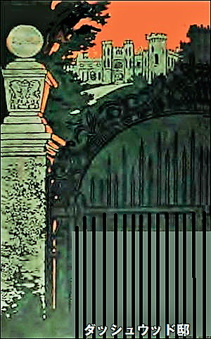
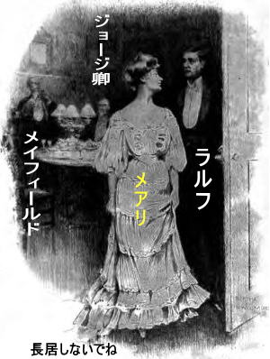
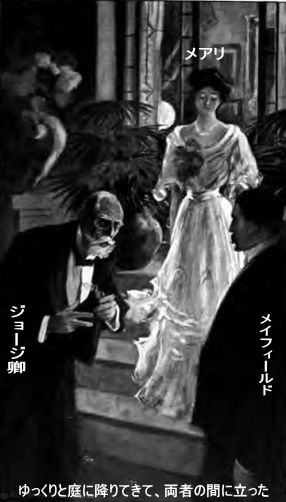
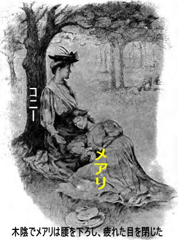
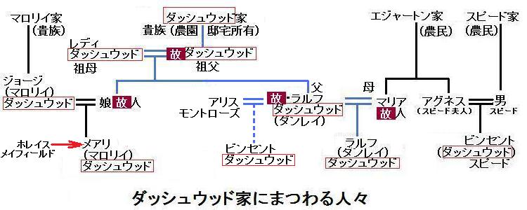
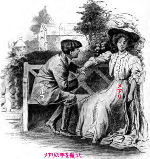
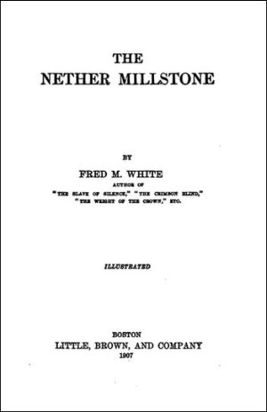

主な登場人物 備考
メアリ メアリ・ダッシュウッド
ジョージ卿 メアリの実父
メイフィールド メアリと結婚予定
大奥様 レディ・ダッシュウッド
ラルフ ラルフ・ダーンリ
先代 ラルフの実父
先々代 ラルフの祖父
スライト 老執事
マリア 実父の最初の妻
アリス 実父の米国人妻
ペイシャンス 元・乳母
ビンセント 謎の人物
ドレイク警部 ロングタウン警察
コニー メアリの同居女
スピード夫人 ビンセントの実母
グレイス コニーの仕事仲間
スクーダモー 出版社の編集長
モーリ所長 弁護士
ニューカム 医者
第一章 貴族階級
女の目に、むなしい怒りと絶望の涙があった。危機は重大だが、回避は簡単。
だが依然として馬は岩道を駆け、
歯を食いしばり、自慢の青い瞳から
道の両側にはブナの大木が植わり、空は真っ青、小鳥のさえずりも聞こえる。よわい、わずか二十二歳、命は風前のともしびだった。
瞬間が近づいてきた。相変わらず
森の右側で、ばりばり小枝の音がした。百メートルほど先、高い
「脇に寄せろ。近づいたら、手綱を放し、あぶみを外せ。恐れるな」
ほとんど命令調だった。
すべては一瞬で簡単に終わったので、危機など無かったかのようだった。男の腕は暖かくしなやかだが、鋼鉄のように強靱で、女の細腕をつかみ、軽々と鞍から持ち上げた瞬間、両足が路上にぶらんと浮いた。ダッシュウッド家の誇りと勇気も形無し。ただの女性、ほとんど路肩で失神している。
女がやおら目を開けて見れば、強力な男の腕で腰を支えられている。高貴な美しい顔がさっと紅潮した。半ば驚くや、半ばうれしや、男の顔を見たとき、ますます赤面した。
「ダーンリさん、ここで会うとは思いもよりませんでした。二年ちょっと前にも、パリで命を助けてもらいました」
「覚えていてくれてうれしいよ。再会はそんなに変じゃない。やみくもにここへ来たわけじゃない。用事があっただけだよ。公園を通れば解決すると言われたからだ。出発して雑木林を通っていたら、きみの窮地が見えて、急いで助けたのさ。あとはあの木のおかげだよ。ただ気になるのは、きみがここに居たってことだなあ」
「ちっとも変じゃありません。ふふふ、ここの邸宅が自宅なのですから」
普通に事実を述べただけなのに、ラルフ・ダーンリの心にぐさりと刺さったようだった。日焼けした褐色の顔がさっと青ざめた。澄んだ茶色の瞳に様々な疑惑が浮かんだ。
「よ、よくわからないな。二年前にパリで会ったときはメアリ・マロリイという名前では……」
「ええ、メアリ・ダッシュウッド・マロリイでした。当家のあるじが生きていましたから。二年前に亡くなりましたが、一人息子はどこか海外で数年前に死亡しました。とても悲しいお話です。父が爵位と邸宅を相続しました。現在ジョージ・ダッシュウッド卿です。姓が変わった理由がおわかりでしょう」
「ああ。知らなかった。しかしまあ、何と由緒ある広い土地と豪邸なんだろう。ここで育って気に入ってるだろうね」
メアリの高慢な態度が消え、気品が残った。
「好きよ。草木全部好き、人生そのものなの。ここで育ったようなものよ。父が大使館勤務で、母は若くして死んだものだから、誰かに面倒を見てもらう必要があったの。子供時代はここで祖母と過ごしました。祖母は、いま離れに住んでいます。すてきなお方です」
だが、ダーンリは上の空だ。必死に自制心を取り戻そうとしている。夢を見ているようだ。
「気持ちはよくわかるよ。ダッシュウッド家が三百年間ここを治めてきたそうだね。豪邸だし、世襲の家宝は値がつけられないとか。おっと失礼」
メアリが感づいて見上げた。
「ダーンリさん、なんだか悲しそうですね」
「夢が消えたからだよ。きみの父上はパリで貧しかった。今はちょっと立場が上がったけど。パリでの最後の夜を思い出してごらん」
メアリのほほに再び朱が差した。
「ええ、でもダーンリさん、あれで終ったのよ」
「違う。終っちゃいない。きみに一目惚れした。死ぬまで愛し続ける覚悟だ。求婚したが断られた。ダッシュウッド家の女主人になる人が、カリフォルニア牧場のせがれのところへは行けないとか。でも僕は生まれながらの英国紳士だよ。拒絶は冷静に受け止めたけど、大ショックだった。きみしかいない」
「ごめんなさい。できません。たぶん昔
ダーンリが苦笑い。ありし日のパリを思い出した。メアリの父がいかがわしいパリの株屋と親しくしていたからだ。
「話がずれてきたようだが、とにかく拒絶されても、こたえないよ。失うものがないから。僕の父は優良銀山を残してくれたが、シティの詐欺師どもに乗っ取られてしまった。すっかり信じたばっかりに。その最悪な相手がホレイス・メイフィールドだった」
今度はメアリがばつの悪い番だった。美しい顔がまたもや赤面した。
「メイフィールド氏なら知っています。父が唯一、家へ招く仕事仲間です。例外的に認めています。関係が深いからです。率直に言えば、好きじゃありません。でも、まさか……」
「根っからの冷血な金融悪党だよ。信用したばっかりに文無しにされた。世間は本当だと言うよ。無一文になったので、身内の財産がないか探しに来たわけさ。そうしたらきみにばったり会って、また純情に火がついて、死ぬまで燃え続けようとしている。おかしいと思うかもしれないね、貧乏人がダッシュウッド家の令嬢にこのように話しているから。でも僕は若いし、強いし、能力があるから、自分の王国を必ず手に入れてやる。それに愛は何にも代えがたい。お金とか地位とか、
ゆっくり、はっきり、すぱっと言い切った。冷静だったが、震え声だ。女を引き寄せ、両手を相手の肩に乗せ、底知れぬ青い瞳を見おろした。
妙なことに女は怒らなかった。ほかの男なら、無礼な振る舞いだったろう。この男にはなにか強く引きつけるものがある。男の妙な優しさと自信にぞくっとし、愛されている自覚があった。まさに告白通り、文無しだろうけど、お金を取り戻すのは強い男しか成し得ないのかもしれない。
ダーンリがとても穏やかに優しく言った。
「好きなんだ。愛してる。これ以上何も言えない。きみの気位と氷が溶けるまで見届ける。真の女らしさが花開くまで見届ける。その日がいつか来る。善良な男の心をつかむほうがダッシュウッド家を自慢するよりも、ずっと誇らしいよ。眉をひそめるかもしれないが、やがて真実だとわかる。その間、僕は絶望的だね」
メアリの声が震え、涙目になった。
「できません。あなたが善良で正直なことはわかっています。でもごめんなさい。愛なんて、単なる名目です。あなたは命の恩人ですし、感謝しきれません。時が来ればですが……。わがままですね。あら、あなたの腕、傷から血が。鞍から持ち上げたときに違いありません。邸宅へいらっしゃい。すぐ手当てしなければ」
「必要ない。でも、行こう。たいした傷じゃない。馬を捕まえてから一緒に行こう」
第二章 ダッシュウッド邸
邸宅の門に着いた。ダッシュウッドという名が、
その向こうにエリザベス朝時代に植えられた見事な

ラルフ・ダーンリは深呼吸して、華麗な景観と静寂を眺めた。三百年間ダッシュウッド家は続き、その間、家紋に傷一つつけなかった。これじゃメアリのプライドもむべなるかな。
ラルフが途切れ途切れに言った。
「す、すばらしい。テニスンの詩『いにしえの
メアリが珍しく微笑んだ。賞賛が効いた。玄関には大旗が掲げられ、壁に立派な彫刻が施され、額縁の先祖たちが見下ろしている。至る所に
「朝食部屋に行きましょう。なんとか、わたくしも調度品と同じくらいはお役に立ちましょう。ちょっと席を外します。破れた手袋を片付けますので。ベルを鳴らして執事のスライトを呼んで、お湯とタオルを持って来させなさい」
ラルフがベルを鳴らすと、メアリが退出した。
やがて年配の執事がやってきた。やせた小男、桃・白の制服、まさに老召使いの
「ラルフ様だ。ラルフ様が墓場からお戻りになられた。歳月を経て戻られた。今のご主人が見られたら、何とおっしゃるか。夢だ。どうした。頭が変になったか、夢を見てる。四十年後に」
執事は震えながら前に進み出てラルフの片手に触った。どうやら生身に触れて、我を取り戻したようだ。ほほに赤みが戻った。
「同じ、いや同じじゃない。四十年も経てば老けるけれど、何度も言うようにやはりラルフ様だ。好きでした。我が子のように
「大声を出さないでくれ。しっかりしろ。そうかお前がスライトか、父がよく話していた。父はお前を忘れていなかった。息を引き取るとき、お前に伝言を頼んだ」
「そうですか、ラルフ様はお亡くなりになりましたか、それは、それは。で、あなた様は何とお呼びいたしましょうか」
「当分、何も言うな。ダーンリでいい。用心して黙っていてくれ。今日ここへ来た時、お前のことは想定外だった。実際、忘れていた。四十年前の父の面影を見つけるとは思いもしなかった。今晩、そうだな、十時半過ぎに、門のところで会ってくれ。話すことがいっぱいある」
「ところで、他にあなた様の正体を知っている人がおられますか」
「誰もいない。現当主は僕の父を見てない。正体がばれるとしたら、離れに住んでおられる祖父の未亡人、大奥様だろう。スライト、僕の人生をきみに委ねるから、裏切らないでくれ。そのうちうまくいくから安心してくれ。ところで、腕をけがしたので、タオルと石けんとお湯をくれないか」
スライトが夢心地で出て行った。やがてメアリが一緒に戻って来て、器用に腕を手当てしてくれた。指の感触が気持ちよくて、痛みも和らいだ。今やメアリは心優しい女性で、高慢のかけらもなかった。
「これでおしまい。なんて勇敢で強いのでしょう。勇気を全然自慢しない。なのに、お礼は何もしてあげられなくて。あ、そうそう、父が会いたいそうです。書斎へ行きましょう」
上背のある人物が、テーブルに積まれた書類の山から立ち上がった。書斎は落ち着いた雰囲気が漂い、貴族特有の静寂がすべてを
「ダーンリさん、娘にすべて聞きました。誠に勇敢でした。ここでお目にかかれて嬉しいです」
ダーンリがそつなく返した。顔の表情を悟られないよう願った。パリで最後に会って以来、ジョージ卿の変わり様は驚くべきものだった。
むかしの気安い快活な態度が消え、率直な人柄が失われ、銀灰色の頭髪は雪のように白くなっている。愛想のよかった顔には不安と苦悩の深いしわが刻まれ、憂鬱、恐怖、後悔の兆しがあった。なにか秘密を抱えている。街でジョージ卿を見かけても分からないかも。
でも人生を楽しむすべてを所有している。ラルフが邸宅や景観を
「ええ、完璧な家と、完璧な調度品です。メアリは私以上に気に入っています。ここで罪悪とか苦悩とか下世話な心配事なんか、想像できないでしょう。おや、スライト、どうした？」
「旦那様、電報でございます。返電なさいますか」
ジョージ卿がしないとつぶやいた。無造作に電報をテーブルに置いたが、また手が震え、顔面蒼白、うんざりしている。かすれ声だ。
「ホレイス・メイフィールドからだ。今日、重要な件で来宅して、泊まるそうだ。ところでダーンリ君、今晩夕食を一緒にどうですか」
辞退せねば。このような由緒ある邸宅でメアリと夏の長夜を過ごせば最高の楽しみになろうが、ホレイス・メイフィールドと同席することはできない。
しかし妙だな、あの貴族ごかしの二枚目悪党が、ジョージ卿の友人だとは。丁重にお断りしようとしたとき、メアリの訴えるようなまなざしに気づいた。何か困って不安なようだし、必死に目で助けを求めている。来てくれと頼んでいるが、父に気取られたくないようだ。
「喜んで伺います。午後七時半ですね。それでは」
ラルフが薄暗い大ホールへ行くと、メアリがついてきた。夕日がメアリの美しい顔を照らすと、青い瞳で感謝した。
「ありがとうございます。ラルフ・ダーンリさん、近くご相談をおかけする場合は、是非お願いします」
「心からきみが好きだ。いつか僕に愛を捧げてくれ。必要なら命も捧げるよ」
第三章 ホレイス・メイフィールド
伝統にならい敷布を取り除くと、古い
召使いは音も立てず、客の要求に奉仕している。なんと安らかで、落ち着いて上品なんだろうとラルフは思ったが、唯一勘に障ったのが向かい側に座った男、ひげをきれいに剃り、気むずかしい面持ちで、左目に片眼鏡をはめている。頑固で強情そうな口元だ。でもジョージ卿の前ではすっかりくつろいでいる。
調子のいい言葉をかけて、易々と金を奪う有様は、スリかと思うほどだ。実際ラルフが一時間前に応接室で会った時、笑顔で手を差し出し、まるで親しいつきあいを再開したかのようだった。
ラルフは男の首を絞めたくてうずうずしていたが、笑顔を浮かべて、そつない話をするほか無い。ぴたっと口を閉じたのは、愛撫とまでは言わないがメアリになれなれしく振る舞った時だ。それを見たジョージ卿は苦笑い。まるで無慈悲な主人に、しぶしぶ服従する犬そのもの。メイフィールドの言いなりになっている姿を見るのは痛ましい限りだ。
何か、やましいことがある。メイフィールドが強力な力を及ぼしている。やっと安堵したのはメアリが立ち上がったときだ。ラルフが扉を開けてやると、長居しないでと陽気に告げた。外はすてきな夜だ。

「一緒に行こう。夕食のあと、僕はたばこを吸わないし、ワインも飲まないから。ジョージ卿が仕事の話をしたがっているし、こんな夜は邪魔だろう。外へ行こうか」
「いいですね。いえ、羽織はいりません」
観音扉を開けて、芝生に出た。月明かりに乳白色の肩が輝き、金髪が映えた。ラルフを見上げた顔は見事な均整美だ。話したい、奇妙で素晴らしい話をしたい気持ちが湧いた。
意固地な男だった。欲しいものは本当の方法、真に価値あるもので勝ち取る主義だ。キスして抱きしめたくてたまらなかったが、それをやっちゃ元も子もない。メアリがたまりかねて聞いた。
「とても無口ね。何を考えているの」
「きみのことさ。月光に照らされたきみの顔はとてもきれいだよ。ただ、ダッシュウッド家の令嬢だと思い出して、失望したけどね。それに、必ずしも幸せじゃないようだし」
「どういうこと？ どうして幸せじゃないと？」
目に驚きがあった。
「だって、実際、そうだもの。詮索したくないけど、どこか心の奥底に悩みがある。メアリ、なぜ大嫌いなメイフィールドを家に入れさせる？ きみは誇り高くて特別なのに、あの男になれなれしくさせる。今晩きみの腕に手を置いた。ぶちのめしたかったよ。嫌いなはずじゃ……」
メアリが震えていった。
「そうよ、大嫌い。冷酷で抜け目ない。でも、あなたにも止められない。求婚を断ったとき……」
「はっ、大方そんなことだろうと思った。やつは一度狙ったら、ノーなんて言わせる男じゃない。前にも言ったように悪党だ、僕が証明する。塀の中に落ちる事をしたからじゃない。悪徳金融業者は頭が切れる。君の父上は怖がっている。まるで犬が飼い主を見るような態度だ。もし支配されているなら、すぐに脱出しないと。土地を担保にすればいい」
「できません。父は秘密を言いません。近頃とても老いて変貌したので、けさ会ったとき驚いたでしょう。何か分かりませんが、災難が迫っています。だから相談相手になってくださいとお願いしたのです。父は元々金持ちじゃありません。この領地から収入を得ているだけです。もし土地を担保に融資できるならメイフィールドを追い出せるかもしれませんが、できないのです。おじいさまとおばあさま、今の大奥様ですが、夫婦喧嘩をされたことはご存じでしょう。すべては息子のせいです。おばあさまはいい人ですもの。息子はおばあさまへ味方しましたが勘当されて、二度と帰らないと言ってダッシュウッド邸を出ました。全容を知っているのは執事のスライトだけですが、話しません。スライトは我が子のように子息を愛しました。子息はアメリカへ渡り、以後消息はありません。四十年前のことです。おじいさまが二年前になくなったとき、私の父が財産を相続しましたが、遺書は見つかりませんでした。父が第一近親者だったので財産と領地収入を相続しました。代々の領地ですし、代々の領主もいわゆる生活費が出る程度です。今に相続人が現れるかもしれません。一番ありそうなのは
「やっと分かりました。おじいさまが遺書を残しておられたら、事態が変わるかもしれませんよ。どうですか」
「少しはね。おじいさまはかなりの現金を残しました。おそらく現金はそのうち父のものになるでしょうが、子息の死亡証明書がないことには当分手にできません。アメリカへ渡った子息のです。おばあさまのおっしゃるには、おじいさまは遺書を残しておられるはずだし、お金は規定に従って分けなさいと書くはずだとか。もしその遺書が見つかれば、メイフィールドを排除できます。なんと恨めしくて、惨めなのでしょう。あら、私って自分本位でわがままですね。我が家のごたごたであなたを煩わすなんて」
「僕が頼りになりますよ。暇だし。思った以上に興味がわきました。今日言ったように、僕がいま貧乏人なのはあのメイフィールドのせいです。でも、イソップ物語のネズミの恩返しを忘れないでください。すぐに網から外してやります。ああ、人が来ます」
メイフィールドが観音扉から芝生に降りてきた。葉巻でかぐわしい夜が汚されるようだった。ジョージ卿と大声で話している。
「そのうち分かる。田舎暮らしの最悪なことは電報や電話がないことだ。私の秘書に電報を送れと命令しておいた。ワーハムと相棒の件だ」
ジョージ卿が少し震えて言った。
「その件は言うな。夜の景観を楽しもう。ダーンリ君、これからどうするのじゃ。メアリと二人で自然を愛でていたのか。出立前に葉巻はどうだ？」
ダーンリが申し出を断った。これ以上メイフィールドは御免だ。それに夜十時半になる。スライトに会う約束時間だ。失礼を言って、通りの方へ芝生を歩いた。バラ園の端で振り返った。
古い豪邸が月明かりにそびえている。あれはメアリの押し黙った影、黄白色服の可憐な姿だ。メイフィールドが親しげにかがむと、メアリがぱっと後ずさりした。
ラルフは心臓がときめき、引き返して、話をしようかと思った。殴り倒して、すぐにけりをつけたかった。でも待つ方を選んだ。メアリをものにするつもりだし、白馬の騎士よろしく守ってやる。きっとメアリの高慢さに打ち勝ち、人柄そのもので獲得し、財産持ちという玉の輿で釣るのじゃない。
こんな考え事をしながら通りを歩いた。門が見えるまで、相当歩かなければならなかった。あやうく内側にいる人影を見落とすところだった。再び考えが地についた。
「スライトすまん。行過ぎるところだった。切り株に座って、邸宅を見ながら話そう」
第四章 過去
スライトは月光を浴びて立ち尽くし、動揺し、唇が震えていた。
「旦那様の声がまた聞けます。昔に戻ったような気持ちです。幽霊のように墓場から
「父に瓜二つかな、いや四十年前の父がこうだったかな。スライト座ってくれ、突っ立ってじっと見ないでくれ。正体がばれるとは思いもしなかったし、ここへ来たのは相続の為じゃなく、少なくともそんなんじゃない。父は自ら相続権を放棄したけど、祖父は復権の機会を与えていた。父が拒否したのは知っての通りだ。今は代わりにジョージ卿がダッシュウッド家の当主だ」
「邸宅も爵位もすべてあなた様のものでございます」
「まて、まて。四十年前ここで大騒動があった。修復、和解できない口論だった。根底には一族の誇り、呪われた誇りがあり、人間性をすべて抑圧し、心を冷酷無情な石に変えてしまう。口論の末、祖父母との永遠の決別となった。祖母が今の未亡人レディ・ダッシュウッドだ。父は国外追放となった。そのために、この世にまれな純真な女性を狂わせた。それもこれも、いわゆる一族の血を汚さない為だった。父は出奔する前に一身を犠牲にした。不動産相続放棄の書類を書いた。だから祖父の好きなようにできた」
「ラルフ卿、私には分かりません」
「その爵位を言うな。説明を聞け。口さがない世間は我が一族のような邸宅がどこにもないことを知っている。もしその相続人が不動産相続放棄手続きをしたら、当然、現所有者は財産を好きなように処分できる。父はすべて承知の上でこれをやったし、お前は証文を見ている」
スライトが渋々認めて、ゆっくりと言った。
「思い出しました。大旦那さまに渡したのが私でございました。ああ、知っていたなら……」
「お前なら破きかねない。ずっと父に忠誠を尽くしていたから。でも証書を祖父に渡したから、祖父は遺書を書いた。二十年間、祖父と父の間は音沙汰なしだったが、ついに祖父が父に戻れと手紙を書いた。それから祖父はまた父に手紙を出して、二十年間考える時間を与えるとしたためた。二番目の手紙を書いた同じ日付で、遺書も書いた。その内容はその日から二十年以内に財産権を主張すれば、すべてを相続させるというものだった。もし期限が過ぎたら、遺言書の指定人物にすべてを与える。言うまでもなくその人物はジョージ卿だ。つまり六ヶ月以内に僕が意思表示しないと、財産はジョージ卿のものになる。僕なら父の後継者として、財産権を主張できるし、証拠として遺書を提出できる」
「でも遺書は見つかりませんでした。あちこち探しましたが」
「隠してある。父への最後の手紙に祖父が隠し場所を書いた。ジョージ卿に隠し場所を教えるだけで、ジョージ卿は安泰だ。なぜなら遺書により、僕の遺産相続権がなくなるからだ。だからジョージ卿がすべてを受け取れる。現在ジョージ卿は農園の収入を得ているに過ぎないし、多額の借金を抱えている。しかも悪党の言いなりになっている」
「はい、そうでございます。おっしゃる以上に我々召使いは知っております。つまりメイフィールドの悪巧みです。金持ちですが、それだけで満足しません。メアリお嬢様と結婚したがっています。でもお嬢様は見るのも嫌でございます。ジョージ卿を破滅させて結婚する魂胆です。お嬢様はこの場所を離れたら心を痛められます。ここで育ちましたから。草木一本すら愛着があります。やがてすべて自分のものになると常々信じておられます。父上が一族の最後だからでございます。皆先代の旦那様は亡くなられたと思っています。お嬢様が夢見ておられるのは、いつかここの女主人になって、立派な夫と子供を持つことでございます。ああ、メイフィールドが手に入れたら恐ろしいことになります」
「そうだ。やつは悪党だ。二年前に父を破滅に追い込んだ。いいか、当時、ダッシュウッド地区なんて聞いたこともなかった。僕はカリフォルニアで優良銀山を所有するダーンリのせがれに過ぎなかった。ロンドンでメイフィールドに会って、信用し、信用し過ぎたために
スライトの返事に熱がこもってきた。
「はい、そうでございます。みんな好きです。冷たいとか、よそよそしいとか言う者もいます。そうかもしれませんが、
「そのことだよ。僕は二年間もお嬢様を恋い
「それでは遅すぎます。そのうちメイフィールドがジョージ卿を破産させて、この名家を救うためにメアリ嬢はメイフィールドと結婚するでしょう。お嬢様は誇りのためなら、どんな犠牲もどんな屈辱もいとわないでしょう。あの男に触れさせるのは全身が拒絶するでしょうが、世間の前ではほほえみ、幸せを装うでしょう。ラルフ様、これは危険、やらせてはなりません。手前は八十年近くも無駄に生きてはおりません。もしメアリお嬢様と相思相愛ならば、何も問題ございません。あなた様がここの当主なのですから。もしジョージ卿が破産されたら……」
「ジョージ卿は破産させない。確かにメイフィールドを追い出せるか、とても心配されておられる。単なる金銭上のことだし、はっきり言えば五万ポンド、メイフィールドに借金がある。現在の状況では払えないだろう。不名誉な破産か、刑事告訴されるかもしれない。メイフィールドは狙った獲物は逃がさない。でもジョージ卿に金策方法を教えたらどうだ。そうすれば犠牲を払わずに悪党から逃れられる。ジョージ卿に遺書のありかさえ教えれば、解決する」
「やめて下さいませ、あなた様に不利になります。期限が過ぎたら、権利は主張できません。ジョージ卿は単なる無実のかたりに過ぎないのでございます。あなた様こそ本当の領主、一家を構えるべきでございます」
「そうは思わない。父は相続権を決して主張しなかった。自ら英国と縁を切った。二十年も経って、メアリ嬢をこの家から離すのは酷じゃないか、一体化しているもの。だから決心したし、誰にも邪魔させない。僕を理想家、夢想家と好きに言えばいい。でも腕はあるし、強いし、頭の使い方も学んだ。だからスライト、用心して黙っていてくれ、時期が来たら証人になってくれ。お前に秘密を話すつもりはなかったけど、正体がすぐにばれてしまった。一日中、この
ラルフは辺りを見回し、ため息を押し隠した。名門邸宅が青空にそびえている。敷地内は、
スライトがやっと口を開いた。
「お好きなようになさいませ。手前は父上に決して逆らいませんでしたし、まるで父上のような目で見られては、あなた様にも反対できません。でも後悔やら、もめ事が起こりますよ」
ラルフが立ち上がりながら言った。
「いや、いや。正真正銘、幸せにする。一族の誇りを葬り去り、消し去ってやる。何世代も受け継がれた呪いだ。僕の方法で解放するから、手伝ってくれ。さあ一緒に来て、階段の大窓を教えてくれ。父が深夜訪ねていた窓だ。そこにマリア・エジャートンがいて、父の幼妻となり、平民だったので、一族の
「ございます。手前と大奥様とで供養して参りました。ここが窓でございます。大ステンドグラス窓の裏に明かりがございます。ツタを伝って窓際まで行けます。窓枠の下に真鍮取っ手があります。それを押せば内側に開いて、中にはいれます。でもそんなことをして押し入る必要はございません。あなた様はお客様ですから。今申し上げましたように……」
スライトが不意に黙った。夜のしじまが叫び声で破られたからだ。
芝生へ続く客間の大窓が開いていた。明かりが絵画や陶磁器や花々を照らしている。男が窓の方へ近寄ってきた。長身、髪をふり乱し、両手を振り上げて叫んでいる。
「この悪党め、俺を破産させたな」
第五章 いけにえ
強烈な罵声がとどろいた。階段から芝生へ飛び出し、大声でののしっている。全く場違いな感じだ。下卑た感情や怒りなど不釣り合いな場所なのに。
罵声が空まで届いたので、クロウタトリが驚いてねぐらを飛び立ち、警戒音を発して芝生を横切った。そのあともう一人が客間から出てきた。細身、シミ一つない服を着たホレイス・メイフィールドだった。
「頼むから落ち着け、ジョージ卿。全く大騒ぎすることじゃないだろ。すべては武運だよ。奴らを出し抜こうとしたけど、逆にやられた。電報が届かなかったのは私の落ち度じゃない。使用人が勝手に買った。シティではよくあることだ。代金を支払って、清算すればいい」
「だが俺に払えないことは貴様も知っている。俺の資産状態は貴様以外、誰も知らん。もし払わなかったらどうなる」
「まずいことなるな。誰もあなたが詐欺被害者とは思うまい。逆に詐欺師だと思われるだけだ。でも気前に払えば何も言われない。個人的に私は関係ない。この件に関して私の名前は外してあるから、すべてあなたの責任だ。残念だが非難はあなたが一身に受ける。起訴されないかもしれないが、調停検察官を雇うのは難しい。唯一の方法は勇敢に突き進み、全額支払って解決することだよ」
ジョージ卿が苦々しく笑った。邸宅を背にして、悪病神と対峙している。激しい怒りで我を忘れたようだ。豹変した。
「金はない。貴様も知っている。己の目的を果たすために勝手に買った。俺が投機好きなのを利用して、落とし入れた。ここでじっとしていれば幸せで快適だったかもしれない。多額の借金は返してやる、もう一度来たときにだ。だが貴様のせいで、自宅にも立てなくなる。三百年間続いた名門だ。俺は破産してやけくそになって、被告人席に立たされる。貴様は金持ちだろ……」
「まあな。とにかく金は持っている。だが仕事に関しては、友情も感情もない。私が
ジョージ卿が怒りを爆発させた。自制心を完全に失ってしまった。激怒して突進し、メイフィールドの口元を強打した。メイフィールドが後ろによろめき、下唇から血を流した。
メイフィールドは反撃もせず、怒りもしなかった。激しい攻撃に驚いて震えたけれど、冷静に立ったまま、血を拭き取った。やつの顔は大理石の彫刻か、月光を浴びてますますその感がする。人となりは知っていたが、この瞬間は驚かざるを得ない。感情をこのように抑えられるのは危険人物というほかない。
まったく奇妙な場面、恐怖と不快の対極にあった。あたりは静寂、平和、とても優雅で上品な環境だ。ラルフは根が生えたように立っていた。またしてもジョージ卿が突進し、手を振り上げている。爵位や高級宅地の誇りをかなぐり捨て、今や野獣と化した。するとメイフィールドが腕をつかみ、万力のように締め上げた。
「そんなことをしても何にもならん。私が客であるのをお忘れか。召使いたちに気づかせたいか、領主の醜態を見せたいか、感情をむき出しおって。どうだ、ダッシュウッド領主にふさわしくないだろ。さあ、あやまれ」
ジョージ卿は黙っていた。手をふりほどいて、腕を振り上げたまま邸宅の方を向いた。まだ怒りが収まらない。
「
「必ずしも絶望じゃない。失敗の一部は私にもあるから、私にできることはやろう。約束さえすれば、金は貸す。約束してくれ、娘を私の妻にすると、そう娘にも伝えろ、そうすれば状況はがらりと変わる。告訴はさせないし、認めない。告訴しても証明できないし、陪審員の評決は不利に出るだろう。だが、メアリ嬢が私の妻になってくれたら……」
「許さん、この世じゃ、許さぬ。娘は貴族としか結婚させない」
「そうか？ もし私が助けなかったら世間は何というか。落ち着け、少し聞け。始末をつけずに私が去ったらどうなる？ 警察が来て逮捕するかもしれないぞ、その時、接客中かもな。手錠をかけられて引っ立てられる。無実の株主をだました罪で被告人席に立たされ、確定する。刑務所を出たら、やくざな駄目男と言われる。これ以上考えても無駄だし、手遅れになる。さっきの暴力沙汰は決して忘れない。狂ったようにわめいたが、たばこでも吸って穏便に収めようじゃないか。あなたは名士だし、少なくとも狂乱の沙汰が過ぎたら、また元に戻る。何食わぬ顔をして娘さんに説明してくれないか。私の条件に同意してくれ、そうすれば本件に関して、枕を高くして眠れるぞ。理性の声に耳を傾けろ。殴ったことは忘れてやろう」
ジョージ卿は聞いていなかった。どうやらひどく葛藤しているようだ。今分かったのは、何と巧妙な罠にかかったことか、こんな策略家に何の手も打たなかったことか。恥ずべきことは一切やってない。なのに、娘をこの男にやるなんて、考えるだに恐ろしい。この瞬間、この邸宅の一番、
ジョージ卿が静寂の中で吠えた。
「やれるものならやってみろ。殺せるものなら殺してやる。貴様は生きてる値打ちがない。正直者の害虫だ。ああ、何も分からん、何も見えん……」
第六章 誤解
ジョージ卿が両手で目を押さえた。しばし視界が消えた。頭を血が駆け巡った。ハンマーで脳をがんがん叩く音がした。悲しみと怒りのあまり乱心だ。再び大声を上げ、夜の静寂を破った。いまや爵位や名門が何になる。こんな恐ろしい破滅を前に、何も役に立たない。
「メアリ、メアリ、来なさい。話のできるうちに。あしたは弱って、気力が無くなる。降りてきて、言ってやれ。まっぴらごめんだと」
最後は金切り声だ。こんな平和な場所には奇妙なことだった。ラルフが止めようと一歩前に踏み出した。そのとき窓を背に、一人の陰が現れた。メアリだった。白い服を着て、威厳に満ちてすっと立っている。

目に厳しい表情があった。ゆっくりと庭に降りてきて、両者の間に立った。メイフィールドのまぶしいシャツに血がついているのを見逃さなかった。
「どういうことですか。お父様、まさか……」
「ああ、やった。殴った。殺しかねなかった。でも家族の不名誉にはならん。殴ったけど、やつは犬っころか臆病者のようにおとなしかった」
「そんなことはない。悪口を言われようが腕力はある。ジョージ卿は投機に失敗して私を非難される。失敗は今晩遅く分かったばかりです。信頼していた男が裏切ったので苦しんでおられる。手短に言うと、お父上が数日中に大金を用意できなければ、おそらく起訴されます。そういうことなので、やけくその気持ちは分かりますが、慎重に練られた策略は見抜けません。私への攻撃はまあいい。かっとなられて……」
「ごめんなさい。自分の名前が聞こえたものですから。父の声があまりにもうわずっていたので、捨ておけませんでした。破滅を回避する方法を教えてくれませんか」
相変わらず冷静にメイフィールドが答えた。
「そのことですが、ある条件でお父上をお助けしましょう。お父上は誤解されておられる。私が案件の肩代わりをして、損失を
月光の下、メアリの顔が真っ青になった。胸の鼓動が見えた気がした。一瞬で立場が分かった。メイフィールドの顔に、してやったりという悪党の表情はみじんもない。冷静かつ上品に振る舞うが、やはり鉄の縛り、真綿で絞めるような鉄輪があった。話そうとしたが、すぐ出ない。
ジョージ卿は両者の間に立って、震える両手を広げ、引き離そうとしている。口を開いて何か訳の分からないことをわめいて、芝生にうずくまり、黒い塊になった。頭の中で何かがはじけて何も言えなくなった。
メアリは父を思うあまり、すべてを忘れた。悲鳴をあげて、うずくまった父のそばに駆け寄った。ラルフも飛び出し、スライトもゆっくり続いた。ラルフが出るのは当然だ。メアリがラルフの方を振り向いた。願ってもない助太刀だ。
「発作です。パリで二年前に起きました。興奮させないように警告されました。部屋へ運んでもらえませんか。スライト、下男を起こし、ロングタウンへ医者を呼びに行かせて」
メイフィールドが言った。
「その必要は無い。車庫の鍵を渡してくれれば、私の車でロングタウンまで飛ばし、医者を連れてくる。時間はかからない」
じりじり二時間過ぎて、医者が到着した。見立てはかなりよかった。静養して看病するだけでよいとのこと。ジョージ卿は意識が混濁していた。
ラルフが部屋を出た。メイフィールドは医者を送って行った。スライトはお嬢様が部屋に下がるまでいる。芝生へ続く扉にメアリが立った。この出口はとても便利だとラルフが言った。
メアリが熱心に聞いた。
「今晩どうなさるおつもり？」
「またの機会に話しましょう。聞くつもりはなかったが全部聞こえた。実に悪党でしょう、メイフィールドは」
「ずっと前から思っていました。明確な理由がなくても、あの男は嫌いです。いつも婚約しろ、妻になれと言うばかりでした。二回も断ったのに。私は無関係なのにあんなひどいことを言うのですもの。当然、父をひどい立場に追い込んで、私を借金の形にするつもりです。ラルフ、あの男がとても怖い。殴られても、ぐっと自分を抑えられるのですもの。そして結婚すれば許してくれるなどと、巧妙に言うのですもの。泥沼を抜けるためなら、私のすべてを捨てましょう。プライドがなんだって言うの、自宅がなんだって言うの、人生が危機に瀕しているときに」
「それを教えようとしていたんだ。メアリ、好きだよ。僕を好きになれる日がきっと来る。友人が欲しくなったら、僕が飛んでくる。解決に力を貸すけど、見返りはいらない、感謝の気持ちだけで十分だ。僕という人物を好きになって欲しい。心配しないでいい。あと数時間でメイフィールドは無力になって、悪さしなくなるよ」
「ラルフ、訳の分からないことを言わないで。はっきり言って。私を信用してないの？」
「メアリ、この件は誰にも言えない。神にかけて、自分だけしか信じない。ああ、愛の深さと衝動を分かってくれたらなあ。成就の暁はとびきり甘美になろう。さあ、気持ちを楽にして眠りなさい。名誉にかけて、有言実行するから」
メアリが両手をわなわなとラルフに差し出した。ラルフの本音に感動し、半ば尊敬、半ば愛情の笑顔があった。ラルフは耐えがたい衝動に任せて、メアリを引き寄せ唇を重ねた。そして吐息まじりに体を離し、窓の方へ向かった。
「無礼はわびない。我慢できなかった。全く純真な気持ちでキスしただけだ」
メアリのほほが染まり、つぶやいた。
「男性は初めてです。あなたはいい人だけど、ごめんなさい。家訓を知る前に会っていればよかった。お休みなさい。神のお恵みがありますように」
窓と雨戸が閉まり、邸宅の明かりが次々に消えたが、ラルフは芝生に居残った。メイフィールドが戻ってくるのが見え、最後の明かりも消えたけど、ジョージ卿の寝室だけが点いていた。馬小屋の時計が午前二時を打ったが、ラルフは依然として庭におり、時間も気にならなかった。
先ほどの出来事を考えていた。何度も言いそびれた。究極の手札を持ち、完全に勝ちゲームであり、メアリは家訓に縛られているにもかかわらず自分を好きになり始めている。
そうでなきゃ、キスを
だがラルフの決意は固かった。ラルフ・ダーンリとして愛を勝ち取りたい、そのあとで真実を話せばいい。なぜ、今晩じゃいけないかと自問した。今は時間が無い。遺書を見つけに行き、探し当てて、ジョージ卿にありかを教えなくては。
もう邸宅は静かだ。ラルフは入口を知っている。やがて長い廊下にたどり着いた。そこに
バネを押すと、板が外れた。中に、手書きの分厚い書類があった。内容を読んでぞくぞくっ。確かに祖父ラルフ・ダッシュウッド卿の遺書だ。月明かりでも確認できた。
やるべきことは、遺書をタンスの底に戻し、匿名でジョージ卿に手紙を書き、ありかを教えるだけだ。あとは黙っていれば、うまく行くだろう。実際メイフィールドの勝利はつかの間だろう……。
誰かが話しかけてきた。メアリが髪を肩まで下ろし、ろうそくを持っている。顔面蒼白、こわばって、厳しい目つきだ。
「夜盗ですよ。どういうことですか、ダーンリさん」
第七章 唯一の方法
一瞬、ラルフは言うに言われぬ不条理な怒りに襲われた。何も悪いことはしてない。よかれと思ってやったのに、恥ずべき立場に追い込まれてしまった。惨めで下劣な夜盗だ。
冷たい声、軽蔑のまなざし、メアリの心が読めた。しかし、動機はそれこそ最高に崇高なものだった。確かに、自己犠牲という高尚な考えで、行動する男などいない。
「何をしていると聞いているのよ。いらいらさせないで」
間違いなく、これは尋問だ。ダッシュウッド邸の娘はこのようにして泥棒や、夜盗に対処するのだろう。悪党など全然怖くないように見えた。同じ
依然として、傾いた月明かりが大ステンドグラスを通し、淡い光を差している。ダッシュウッド家の紋章と家訓を浮き上がらせている。その紋章と家訓こそ、進退窮まったこの男のものであり、誤解されバツの悪い男のものだった。
「何かおっしゃい。こんな
つんとした冷たい声色はやはり疑っている。
すべてがラルフのものであり、メアリは単なる高貴な客人に過ぎない。そう、ラルフの所有物たるや、古い大邸宅、無類の絵画、エリザベス朝の家具、広大な領地、赤屋根の下に整備された農地だ。
片言いうだけで、状況が変わるのに。手をさしのべて、ここを統治するお手伝いをしてくれないかと言えばいい。そうすればメアリはついてくる。見方が完全に変わる。そしてラルフを愛するに違いない。事実、愛の深さは知らないが、好きどころの騒ぎじゃなくなるだろう。気持ちが傾き、平和と幸せがずっと続くに違いない。
誘惑に負けかけて、額に玉汗が浮かんだ。だが、ぐっと握りつぶした。自尊心が許さない。違う、メアリの愛はラルフという人物を好きになるべきであり、そう告白すべきであり、ダッシュウッド家なんて、比べものにならない。
ラルフがやっとの事で言った。
「捜し物に来たんだ」
「おや、手に持っていますから、見つけましたね。どうやって邸宅に侵入したのですか」
「簡単だ。外から大窓枠に登ったのさ。取っ手を引けば、窓が開く」
「ほんとう？ ずっとここに住んでいますが、それは知りませんでした。完全なよそ者なのに邸内の見取りは完璧ですね。何を探していたの？」
「これだ。だが、元のタンスに戻す。あしたジョージ卿が回復されたら、会って説明する。言うまでも無いが、今夜の行為は弁護士が完璧に弁護できる」
メアリが感情を爆発させた。
「信じろと言うのですか。あなたは悪党の一味じゃないの？ メイフィールドへの怒りは見せかけじゃないの？」
「僕が紳士だってことは知ってるだろ。理由は知らないだろうけど」
「知るもんですか。あなたを信じたし、友人にしたし、助けを求めたし、約束もした。頼れる友人を得られて、心から神に感謝しました。実際、階級の違いをすっかり忘れさせてくれました。それなのに」
言葉に詰まり、涙目になった。その瞬間、とてもか弱く、女らしく感じられた。あやうく階級の違いを無視するところだった。またしても本当のことを言いたい衝動に襲われたが、ぐっとこらえた。
「きみは痛い誇りがあるけど、まさしく女性だ。僕は友人であり、それ以上だ。きみのためなら、やらないものはない。変かも知れないが、きみのために今晩ここへ来た。少し前に、運命のいたずらで、ある情報を得て、この邸宅の運命に関わることになった。これ以上言わせないでくれ、何もできなくなるから。よければ夢想家と呼んでくれ。たぶんこの大邸宅のせいだろう。とにかくそういうことだ。今晩ここへ来たのは、きみに情報を知らせて、にくい男を永久に排除したいためだ。自称ホレイス・メイフィールドのことだ。きみを借金の
「でも、なぜこんなことを？ 私の命を二回も救ってくれたでしょう？ せっかく、恩義の気持ちが何百万倍も増えたのに」
「ああ、ドンキホーテと呼んでくれ。実際そうだ。分かる時がいつか来る。愛がすべてに勝る。僕は我が道を行く。自信があるから自分しか信じない。きみを幸せにするつもりだし、それが僕の動機だ」
ラルフの話は予言まがいだった。いつか正しいと分かるだろうが、混乱と苦難が迫っているとは夢にも思わなかった。ただメアリの眼が少し和らいだことがわかった。
「僕の関心はきみを救うことだ。だが手の内を明かしたくない。前にも言ったけど、これ以上聞かないでくれ。僕に手を貸してくれ。疑っていないと言ってくれ。虫のいいお願いだと分かっている。名門家系や、大邸宅など、男の名誉に必要ない。今晩泥棒のように忍び込んだことは認めよう。告訴されても、何も言えないし、経歴も台無しになるだろう。もし……」
ラルフが言い淀み、戸惑い、赤面した。メアリを呼ぶいらち声で静寂が破れ、廊下に足音がした。
ジョージ卿が
「二回もメアリを呼んだ。用がある。気分がよくなって起きたら猛烈にのどが渇いた。声がしたのでここへ来た。ラルフ、君の立場は妙だぞ。どうやら尋常じゃないようだな……」
声が止まった。必死に話そうとしている。
「その通りです、ジョージ卿。物を捜しに戻りました。気分が悪くなられた後、お助けしようと家に入りました。熱中して長居しすぎたことをお詫びします。どうかすぐに寝室へお戻りください」
ジョージ卿は疲れたというようなことをつぶやいた。森に冷えた泉がある、とかなんとか言いながら、メアリの腕につかまる様子は疲れた子供のようだった。この人が、ついこの前パリで会ったあの陽気で勇ましい人物だとは信じられない。
だがラルフが邸宅を去ると、ジョージ卿は再び寝室へ戻り、豹変した。メアリの用意したソーダ水をぐいと飲み干した。
「まて、まて。疲れているけど、寝ちゃおれん。うたた寝して、夢遊状態になり、猛烈にのどが渇いた。廊下に出たら、お前がラルフと立っていた。お前の激しい言葉が脳に焼き付いた。ラルフに怒っていた。でもラルフは我々に味方しようとしている。単なる夜盗じゃない。何を見つけたんだ。嫌なメイフィールドを排除するために何かしようとしている。夢だと言うな。妄想だと言うな。謎だ、謎だ、メアリ」
猛烈にしゃべった。顔面蒼白だけどジョージ卿の眼は風夜にちらつく星のように光った。つかまれたメアリの腕が痛かった。メアリは自分がなぜ震えているのか分かりかねた。
「しっしっ、寝なきゃ、また悪くなりますよ。朝まで安静にしていれば、よくなります。今は何も言えませんし、実際、お父様と同じく何も知りません。寝なきゃ駄目ですよ」
第八章 発見
ジョージ卿は疲れた瞼を閉じて、ベッドに体を横たえた。最後の抵抗もむなしかった。しばしメアリの命令に負け、従う気になった。でも、妙な考えにとりつかれていた。自分を救い、ダッシュウッド家の伝統を守れる唯一の手段は何かの書類に違いない。
ベッドに横たわり、メアリの言う通り、夜を安静に過ごすことにした。長いこと横になり、やがてメアリも自室へ戻り、邸内も完全にまどろみに包まれた。静寂になり、心が落ち着いた。ますます意識が戻り、冴えてきた。廊下で見た幻夢が、くっきり浮かんできた。
ラルフは何を言おうとしていたのか。今はっきり思い出した。ダッシュウッド家の運命を左右する何かをつかんでいる。確かにあり得ないことではない、だってラルフは人生の大部分をアメリカで過ごしている。
本来の相続人である先代もアメリカで暮らしていた。アメリカは広いけど、先代とラルフの父が知り合いじゃないとは断言できない。ラルフはダッシュウッド邸宅の近くに用事があると言っていた。おそらく独自の情報で、金儲けに来ている。でも紳士だし、それが、あんなみっともないことをするか。
依然としてこの考えから抜けられなかった。ジョージ卿はラルフの口から直接聞いてない。確実な手段があれば、永久にメイフィールドを排除できる。考えるだけでジョージ卿の血管がどくどく脈打ち、ベッドから起き上がった。きっと重要書類に違いない。それしかない。
ありありと思い出したのは、ラルフが廊下の古いタンスのところに立って、手に書類を持っていたことだ。ジョージ卿の知る限り、あの古いタンスは何年も開けていない。決して悪い隠し場所じゃない。たぶん……
ジョージ卿がゆっくり歩いた。朝まで安静にするとメアリに約束したが、到底できない。眠るなんて論外だ。時計を見ればまだ朝の三時半、起床の五時間前だ。永遠のように感じられた。
その間、悪魔のメイフィールドが同じ屋根の下で寝ている。もし成り行きを聞いていたら、もし古いタンスに疑惑を抱いたら。考えるだけで耐えられない。ただ苦しんで寝ているなんて出来ない。邸内は死んだように静かだった。
最初の書類はきちんと折りたたまれた長手の紙、弁護士の署名がある。黄変し、色あせているが、文字ははっきり読める。まさにこれこそ、ダッシュウッド邸の栄光に、必要かつ完璧な幸せをもたらすものだ。
「どうやって知って、見つけたのか。手が震えてやっと持てる。一八七七年、祖父ラルフ卿の遺書だ。お抱え弁護士と事務員の署名がある。もしこの日付後二十年以内に息子かその男子相続人が現れない場合……。ああ、あと六ヶ月で財産が完全に自分のものになる。妙だ、祖父の指定期限が迫っている時、遺書が見つかるとは。それはどうでもいい、危機が迫っている。この書類は何だ。息子が相続を拒否した証書だ。書類はどこにある？ 遺書の隣にある黄色い羊皮紙だな。やった、これだ。おお、神が手を貸され、名家の汚名を救って下された。これこそラルフ・ダーンリが探して驚かせようとしていたものだ。この書類を武器に必要な金を借りられる。メイフィールドを邸宅から叩き出せる……」
ジョージ卿がよろめき、ずきずき、くらくらする頭に手を当てた。
またしても倒れそうだった。メイフィールドなんか怖くないと否定するが、やはり怖い。悪徳業者から逃れられない。過去にメイフィールドの狙いを本能的に思い知らされた。家名のためにこれ以上つきあうなと分かっていたが、聞く耳を持たなかった。
ジョージ卿は高慢なくせに、もし負ければ借金を払えないことを知っていながら、ギャンブル
だが今や縛りはない。財産はすべて自分のものだ。強運で全身が震える様子は、極悪人が馬鹿な陪審員により無罪放免されたかのようだった。何も捨てる必要は無い。ジョージ卿のままでよいし、大農園や三百年続く大邸宅を所有できる。
明日この書類を持ってロンドンへ行けば銀行が相当額を貸してくれる。メイフィールドの言う金額を払い、ばくちから足を洗える。大地主とはこういうものだと、世間に示せるだろう。ジョージ卿は自分がよぼよぼ老人で、名声を保つ為に七転八倒していることが分からない。また、棚ぼた幸運をもたらした裏に、尊い自己犠牲があることを知るべくもない。
「朝食の後、メイフィールドをたたき出す。少しも怖がってないことを知らせてやれ。今後は赤の他人だと分からせてやる。これで勝てる」
まるで母が子を抱くかのように書類を抱きしめた。うかつにも目に涙した。結局何も失ってない。由緒ある豪邸、よく管理された広大な農園、公園の大木や鹿、すべて自分のものだ。
足音が聞こえたのでぎくっとした。誰か廊下を歩いてくる。たぶんメイフィールドが嗅ぎつけたのだろう。やつは強引で
胸に重要書類を抱えたジョージ卿を、朝日が照らした。見つかったへまな泥棒みたいだ。歩いてきた人物が執事のスライトだと分かってほっとした。老執事はジョージ卿より取り乱していなかったが、目がくぼみ
ジョージ卿が口ごもった。
「ここで何をしている？ なぜ私をつけるんだ。なぜ早起きするんだ」
スライトは答えなかった。ジョージ卿が胸に抱きしめている書類をぼーっと見ていた。眼には恐怖があった。殺人を目撃したかのようだった。スライトが独り言のように言った。
「手に入れられましたね。土壇場で書類を見つけましたか。書類は焼き捨てなさい、火にくべて灰にしなさい。そうすれば幸せになれますし、最悪も避けられます、ジョージ卿」
ジョージ卿が驚いて叫んだ。
「どういう意味だ？ スライト、何のことだ？ もう一回言ってみよ。狂ったか、飲んでいるな」
スライトがはっと我に返ったようだった。強く抑制を効かせて、悲しげに言った。
「狂ってはおりません。もちろん飲んでもおりません。秘密は私だけのものではありません。堅く口止めされています。あえて最善策を申しました。これ以上は申しません。燃やせ、燃やせ、
スライトが向きを変えて、廊下をよろよろ去った。金色、深紅の大ステンドグラスを通し、強烈な朝日が降り注ぎ、小鳥が外で陽気にさえずっている。一帯が明るくなり、一面の露が消え、緑が映えて、庭園が陽光に輝いている。
ジョージ卿が寝室の窓から全容を見た。紛れもなく自分のものだという大きな喜びと誇りがあった。今やすべてが安泰だ。つぶやいた。
「スライトは狂っている。やつが何を知っている。何が分かるか。書類は安全な場所に隠そう。身震いする。頭がふらふらだ。ああ、あと一時間か二時間眠れたらなあ」
第九章 退却
ジョージ卿が降りて来たとき、朝食部屋の
メイフィールドがジョージ卿をじろっと見た。何か見損なったか。当然わびて、もっと怖がるはずなのに。逆に、聖職者をもてなす司教以上の尊大な態度がありありだ。メイフィールドはメアリから何も得てない。
メアリは食台の先頭に座り、冷静、威厳を保ち、鮮やかな美しい白服に身を包んでいる。メイフィールドは歯ぎしりして、ジョージ卿に、このつけはすぐに払わせてやると誓った。ジョージ卿の運命を完全に握っている。
冷たくされたせいで、メアリに対する愛は、さらに燃え上がった。メアリを屈服させ、命令し、高慢の鼻をこてんぱんにへし折ったら、さぞかし愉快だろう。ここはやはり、肝を据え、朝食後に訳を聞いてやる。はらわたが煮えくり返っていたが、笑顔で会話した。
ジョージ卿が
「メイフィールド氏はすぐ予定が有るでしょう。貴重なお時間を拝借して申し訳ありませんでした」
メイフィールドが嫌みな笑顔で返した。
「いつでも時間は
ジョージ卿にはちっともこたえなかった。穏やかに笑って言った。
「確かに、君の言う通りだ。出発前に片付けよう。朝食後にテラスで葉巻をどうかな。メアリは席をはずさなくていい。お前にも我々の話を聞いて欲しい。昨夜口論して、不覚にも理性を失った。みっともなく暴力を振るったことは本当に申し訳なかった。心からお詫びする。これから、もう会うこともないだろうから。今後、取引はしない、というのも今週末以降、もうシティに行かないと決めたからだ。メイフィールド君、分かるだろ、これから取引は中止だ。客人にこんな話しをするのはつらいが、分かるだろ」
メイフィールドが驚いた。もしかしてジョージ卿は正気を失ったか、大金持ちと勘違いしているのか。だが、全く平然として落ちついている。一体、昨夜何が起こって、こうも変わったのか。メイフィールドがゆっくり言った。
「朝は血の巡りが悪いので、意味が分からないなあ。きのう事情をよく説明した。信頼していた使用人にだまされてあなたが五万ポンド払う羽目になった。払わないと起訴される。残念ながらあなたの相続権は弱いので、大金は借りられないだろう。言うまでも無く現状は明白だし、絶望的だ。私はそんなまずい状況を大いに助けられるから、金を貸そう。つまり、五万ポンド提供しよう。もちろん条件が一つあることを、メアリ嬢の面前で触れておこう」
メアリが紅潮した。心臓がどきどき。一見して、相手が勝者だ。奴は恥さらし者や破産者を追い詰めて逃がさない。不名誉の陰が邸宅に忍び寄っているとき、ダッシュウッド家を死守する手段は何だ。名門大邸宅や由緒名跡のためなら、メアリはメイフィールドの提案に乗らざるを得まい。父に目を移すと、笑顔で葉巻ケースを取り出している。愛想よく言った。
「まったく、君の言う通りだ。確か提案を受けたけど、駄犬のようにすっかり忘れて、君を殴ってしまった。極言すれば、君が周到に計画して実行した。一方で破産させ、他方で娘をいけにえにする。さあ、葉巻を散り給え。テラスに椅子があるからそこで話そう」
メイフィールドがテラスの籐椅子にどっかと腰を下ろし、いらついて言った。
「何で蒸し返すのか。昨夜から何か変わったか。ちっとも変わってないだろ。もし金を払えなければ……」
「メイフィールド君、もしはない。金は用意できる。週末までに債権者に支払う。そして世間に私が被害者だと公表する。金は払う」
メイフィールドが驚いた。一瞬仮面がはがれ落ちた。失望は明らか、しかも大きい。
「何だって？ まさか、見つけたのか、遺……」
言い淀み、ちっと舌打ちした。言い過ぎたか。口走った言葉でジョージ卿が変わったかと見れば、一人悦に入っている。メアリだけは気づいていたが、数日も経ずして、重大なことを知る羽目になる。ジョージ卿が続けた。
「金は払うよ。週末にはシティとの縁を切る。だから告発されないし、私の名前を公表して、他人に文句は言わせない。他人の中には君を含んでいることは言うまでも無いがね」
「出て行けと言うことか」
「そう言うことだよ。君が客人でなかったら、もっとあけすけに言うけどな。分かるだろ」
「やせ我慢しなくていい。もう玄関に自家用車が待っているから、出発前に言っておく。よもや私への借金を忘れていないだろうな」
「五千ポンドか。忘れちゃいないよ。週末には……」
「そうか。週末だな。当時、五千ポンドをひどく欲しがっていた。借金証文を書くという条件で貸した。親切に金を貸して儲けさせようとしたが、失敗して証文が有効になった。メアリお嬢さん、シティではよくあるささいなことですが、貸し主は
メイフィールドが中断して笑った。恐ろしくゆっくりで、耳障りだった。メアリは恐怖にぞくっとして胸を押さえた。
「あ、あなたもやりますか」
同じ硬い笑顔でメイフィールドが言った。
「やりますよ。今日、街に着いたらすぐやります。
手をこまねき、メイフィールドが運転手を呼んだ。大型車が騒音をたてて到着すると、助手席に飛び乗った。帽子を取り、おどけてへりくだり、走り去った。
ジョージ卿が飛び上がったが、遅すぎた。ほこりを巻き上げて車寄せを去った。メアリが真っ青な顔で、父を見た。
「本当ですか。まだあの男に支配されているのですか。今日中に金策はできないでしょう」
「ああ。借金証文のことはすっかり忘れとった。待つべきだった。手の内をすぐ見せるべきじゃなかった。でもやらないだろう。強がりを言って驚かしたのだろう。単なる脅しだよ」
「きっとやるわ。よこしまな眼と顔に出ていたもの。そんな侮辱を受けたら胸が張り裂けるわ。防ぐ方法はないの。どんな犠牲も大きすぎることはない。もう何も考えられない」
第十章 皮一枚
メアリの言葉は本心から出たものだった。些細な痛みや不快事ではなく、圧倒的に不利な悲劇に直面している。メアリの
そうだ、父に助けを求めよう。さっきメイフィールドとの会話は毅然としていた。戦いに勝った口ぶりだった。おそらく解決方法を見つけている。昔の血気が戻り、また可能かも知れない。
「なぜ黙っているの？ 対策を教えて。あんな不名誉には耐えられない。連中が来たら、ダッシュウッド家は今まで通りじゃない。お父様、方法があるんでしょう」
だがジョージ卿は返事しなかった。温和な威厳が消え、メイフィールドに
涙は盾にならない。涙は怒りっぽい哀れな女・子供のものだ。名門の家訓では認めない。名門家の男女は逆境に遭っても涙を見せず平然と立ち向かう。メアリにすれば男の恥だ。父がこそこそ涙をぬぐうのを見て、おそらく苦々しく軽蔑している。
「わしは正気じゃない。あちこち行き詰まった。メイフィールドは大悪党だ。あの金が大至急必要だったが、投機は大失敗した。もしわしが国家の重要閣僚じゃなかったら、大事にならなかったろう。債務者が押しかけて、メイフィールドが援助を申し出た。もちろん担保を要求した。説得され当然だと思った。それからというもの、なにかと注文をつけてきた」
「なんで同じ事を繰り返すの？ すぐ手を打たなくては。やくざな男たちを邸内に入れてはなりません」
「メイフィールドの単なる脅しだろう」
「そんなんじゃないことをよく知っているでしょう。言葉の端々に大きな恨みがあった。朝はお父さんが勝っていた。まさにダッシュウッド家の当主だし、誇らしかった。今は座り込み、口で言うのもはばかる。少し前、なぜ勇敢で、今になって臆病なの。解決方法を見つけたのでしょう」
「見つけた。昨夜、絶望状態で横になっていたが、眠れなかった。何も考えられなかったけど、ラルフのことを思い出し、隠れ敵かと疑った。そのあと古いタンスの前で書類を探しているのを見た。気になって眠れなかった。だから、あのタンスを探ってみた。すると何が出てきたと思う？ 先々代の遺書だよ、それと先代の相続放棄証書だ。先代の息子が六ヶ月以内に現れなければ、すべてわしのものになる。遺書の威力がどんなに強いか、お前にも分かるだろう。これこそが難事の突破口だ。だから今朝はメイフィールドに対し強気に出られた。長くても一週間以内に融資を受けて精算する。だが、少額借金のことは忘れとった。思い出すべきだった。そして、すっかり精算するまでやつの前では如才なく笑っているべきだった。わしが金を工面するまで、ひどいことをしかねない。当然、不便なことに……」
「不便ですって。不名誉なことをよくそんな軽い言葉で言えるわね。邸宅が大好きだから、お宝ごと焼け落ちればいいわ。火をつけてやる」
メアリが怒って激しくなじった。青い眼がめらめら。誇張のそぶりはなく、実行しかねない。ジョージ卿がつぶやいた。
「長くはない。あしたロンドンへこの書類を持って行く。本物と証明されれば、銀行は必要な金を貸してくれる。だがこの種の手続きは時間がかかる。十分な担保がないと金は貸してくれない。おそらく週末には……」
「週末ですって。今晩にもやられるって言うのに。いま必要なのよ」
「無理だよ、メアリ。現状が分かってないようだな。財産を相続したとき、大借金があった。借金は返さねばならないし、名家の体面も保たなきゃならなかった。だから銀行の認める範囲で、当座借り越しを常に行っていた。銀行が嫌がった理由は、もし私に何か起こったり、先代の息子が現れたら、負債を払えないことが分かっていたからだ。だから貸し倒れになりかねない。見つけたこの書類が本物と証明されるまで、つまり週末まで、不便を忍ぶしかない」
メアリは内面の怒りを抑えた。危機が迫る時、臆病な父を見て衝撃だ。刻々危険が迫っているというのに、座り込んで涙を流すだけとは。本能的にラルフ・ダーンリのことを考えた。ラルフならこんな打撃をはねのけてくれる。あいにくダッシュウッド家の一員じゃないが、動き回ってくれるだろう。おそらくラルフに相談して聞くのがいいだろう。こんな考えが浮かんで恥じた。でも他に友人は全くいなかった。メアリは高貴な身分だが、とても孤独だった。
プライドなんて、何になる？ いまや栄光ある孤立も灰に帰し、危機に直面している。明らかに父は何もせず、ただ恥辱を甘受し、行き過ぎるのを待っている。
壁にかかるダッシュウッド家の先祖たちが、笑い、微笑み、眉をしかめている。軍人、政治家、学者、有名美女、誰一人として家名を汚さなかった。ジョージ卿はじっと耐えるしかなかった。
父の涙を見てメアリが言った。
「何かしなければなりません。お金に換える宝石はないのですか。家宝に考えが及ばなかったのは変ですよ。我が家みたいな家系には歴史的なダイヤ類があるに違いありません。確か当家のエメラルドはすごいと聞いてないですか。ロンドンの宝石商へ持って行って、お金を借りる有名レディは珍しくないと言われたことがあります。そんな話を半疑で聞いていました。いま、やらなきゃ。私に預けてくだされば、午後ロンドンへ行きます。考えるだけでも赤恥ですが、ここが我慢のしどころです。お父様、どこにあるのですか」
「ここにはない。家宝としては最高の世襲財産だが、私のものじゃない。我々は家系の傍流だから、宝石には関係ない。いまは未亡人のレディ・ダッシュウッドが持っていると思う。結婚の権利として譲り受け、ずっと持っておられると聞いている。もし息子が生きていて、爵位を継いで結婚したらその妻が、権利として宝石を引き継ぎ、領主夫人になる。いずれにしても、お前が結婚してお前のものになるかどうかは別問題だ。とにかく未亡人が亡くなれば、宝石を受け継ぐ権利はお前にもあるかも知れない。しかし、この件に関しては何も分からない。知っての通りレディ・ダッシュウッドは私を嫌っている。何らかの理由でひどい偏見を持っており、助けが必要な時でも、私を離れ家に呼ばない。もちろんお前は違う。お前なら家に上げて、我が子のように扱う。おばあさまなら乗り切れるかもしれない」
「お父様がお願いに行くということですか」
「そうじゃない。必要は認めるけど、あの種の女性に平身低頭できない。わしにとっては、単なる女性というわけにはいかん。お前の方から聞いたほうがごく自然だ。分かってくれれば……」
メアリはそれ以上聞かなかった。返事に自信が無かった。ゆっくり静かに部屋を出た。両手を発作的に組んだ。まさに名門の誇りが打ち砕かれ、皮一枚でつながっている。そして、できる男ラルフの顔が幻のように浮かんできた。
第十一章 未亡人・レディ・ダッシュウッド
無口で不機嫌な夕食がやっと終わった。執事のスライトがぴかぴかのマホガニー食台にデザートを置いた。
やがてメアリが立ち上がり、開いた窓の所へ行った。公園の空に、銀の盾みたいに月が輝いている。きらきら光る露の間を幽霊のように鹿が歩いている。いつになく心地よく平和な情景だが、メアリは馬鹿なことを考えていた。
自分は羨望の的に見られているけど、全然その恩恵に浴していない。刻一刻、時は過ぎるが、まだ雷は落ちていない。たぶん
まだ離れに行かないのは、祖母が珍しく近所へ出かけており、夜七時まで帰らないからだ。それまでたっぷり時間があり、窓際に立ち、美しい夜景に見とれた。祖母にすべてを話し、情けにすがろうと決めた。父を見れば、スライトが注いでいる赤ワインの出来に不平を言っている。
こんな時になんて些細なことに、男はこだわるのだろうか。メアリが冷たく言った。
「離れに行きます。遅くなるかも知れません」
ジョージ卿がもごもご答えた。まだワインに夢中になっている。メアリの重要案件など忘れている。メアリの心は冷え冷え、空虚で、寂しかった。
いつもはそこに祖母がいるのだが、今夜は応接室にいた。メアリが入室すると祖母が立ち上がった。背が高く、ふさふさの白髪を昔風に結い上げた姿は魅力的だった。
祖母の顔は髪の毛と同じように蒼白、何か大きな困り事をずっと抱えているようで、現世で解決できそうになかった。目にも同じように不安な様子があり、後悔の念があった。鋭い観察者なら、感づいたかも知れない。レディ・ダッシュウッドは恐ろしい秘密に押しつぶされようとしていた。
でもメアリが進み出ると、嬉しそうな笑顔を見せた。メアリの肩に置いた細い手が震え、キスした。凶事を察したようだった。メアリを見てため息をついた。
「すわって。ありがとう、遅いのに逢いに来てくれて。何かあったのね、メアリ。あなたの純真な心を読めず長年愛しちゃおりませんよ。どうしたの。あなたの不幸を救うためならこの世で何でもしますよ」
メアリが涙をこらえて、ささやいた。
「おばあさま。こんな夜更けに訪ねてきて心配させてごめんなさい。仕方ありませんでした。窮地なのです」
「父と娘の二人ですか、それとも父上だけですか。父上は何をしてあなたを心配させているの？ 投機に何か関係あるの？ 過去にも再三助けてやったのに」
メアリがぱっと赤面して、尋ねた。
「そうでしたか。父は言わなかった。手紙で？」
「何回もですよ。邸宅の暫定相続人として権利があると思っているのでしょうね。でも残念ながら少なくとも今は援助できません。切羽詰まってはいないのでしょう？」
「不名誉なことです。借金を払うまで差し押さえの男たちが居座るのです。五千ポンドを明日の正午までに払う必要があります。すべてお話しますが、ダッシュウッド邸がそんなことになったら胸が張り裂けます。おばあさま、何か金策方法がありませんか」
祖母は一瞬返事しなかった。白い顔がますます白くなった。片手を胸に当ててひどく痛むかのようで、指輪がランプの明かりに震えている。かすれ声で言った。
「ぜんぶ話してごらん。罰を受けるときが来て、ついに私の罪が暴かれます」
「おばあさまに罪ですって。この世で一番善良な女性なのに。おばあさま、そんな話は嫌いです。いつもまじめに純真に暮らしておられるのに、そんな馬鹿な。謎があるとすれば、邸宅の亡霊です」
「今まで、もめ事のない名門なんてありますか。私の
「なぜ、いまなのですか。あることを知っていたのでは」
祖母は答えなかった。困惑しているようだったので、メアリは二度聞きしなかった。いずれにしろ、些細なことだ。祖母がはっとして我に返った。
「証書は重要です。父上は今なら好きに出来ます。敵対的な貸し手が仕掛ける一手は一層厄介です。貸し手は商人ですか」
「はい、天性の紳士です。名前はホレイス・メイフィールドです」
祖母が驚いて声を上げた。再び顔面蒼白となった。
「もしかしてお知り合いですか」
「ええ、家族共々知っていますよ。悪人、嫌な男です。二度と言わないで。メアリ、どんなことをしても排除しなければいけません。いい考えはありませんが、逃げなくてはいけません。言うように一週間以内は何事もないかも知れません。でも切迫しています。お金のあてはないのですか」
メアリは赤面し、つっかえながら用件を訴えた。
「不可能です。父は五分の一も作れません。私も対策に知恵を絞りました。不意に浮かんだのが、宝石や高級食器などを担保にお金を借りることでした。家宝のことは聞いたことがありませんが、あると信じています。父が言うにはおばあさまが持っておられて、私が独身である限り、祖母のものだとか。意味はおわかりでしょう。これ以上あけすけに言わせないでください。ほんのしばらく借りるだけです。週末にはお返し致します。明朝ロンドンへ行って、質屋へ宝石を持って行きます。これで不名誉な事態は避けられます。こんなお願いをしに伺いたくなかったのですが、他に手がありません。どうか拒否しないでください」
祖母の声に怒りとか不満はなかった。妙に青白くやつれた様子は一気に歳をとったようだった。息を詰まらせながら言った。
「宝、宝石を貸してほしい……誰に聞いて？」
「父に聞きました。いえ、父の差し金ではありません。父の話では有名な宝石で、おばあさまが全部持っておられるとか。恥と苦痛を忍んでお願いに上がりました。プライドで戻りかけましたが、家族の名誉のためならと……」
「一族の呪いです。一族につきまとう罪のためにいつか破滅します。ああ、むかし間違いを起こしました。そのために人生を束縛され、
「父の話では祖母が持っていると……」
「メアリ、そんな口をきいてはいけません。ひどく傷つきます。もし無かったら？ 恐ろしい一族の秘密を守る為に一個ずつ手放したとしたら？ 昨日最後のダイヤを手放したとしたら？ どう？」
祖母が突然理性を失ったか。こんな理不尽な話は受け入れられない。だが祖母は自責の念がありありで、しわ顔に、恥じ入る赤みさえあった。椅子から立ち上がり、扉へ行きざま言った。
「ちょっと待ってて。まだ方法はあります。でも私の罪は消えないし、私の犠牲もすべて無駄になったようです」
第十二章 幽霊
よろよろと気が進まない様子で祖母は応接間の先、真っ暗な玄関へ向かった。いつもの上流階級婦人とは全く似つかわない。絹服、刺繍、黄金指輪をまとっているにもかかわらず、重い苦悩を抱えた普通の女性のよう。歩きながら涙した。離れ家は妙に静かだ。召使いはどこにもいない。
やがて緑の前庭に通じる扉に行き着いた。向こうに回廊がある。そろり月光の下に出て、庭を横切り、茶色の石で出来たアーチ道を通り、回廊へ行った。
そこで立ち止まり、辺りをそっと見渡した。月影以外何もない。こそこそと泥棒のように回廊の端まで来ると、階段があり、朽ちかけた二階に続いている。再び立ち止まってから、階段を上り始めた。そのとき、上の部屋から、はっきり声が聞こえた。
びっくりして平衡を失いかけた。全く予想もせず、思ってもいなかった。静かだったのでよく聞こえる。盗み聞きするつもりはなかったが、すべて筒抜けだ。一人の声は低音、快活、明快、命令調だ。愉快げにこう言っている。
「それは出来ない。この件は任せろ。言ったようにやがて正しいことが分かる。満期までまだ六ヶ月あるからお前は心を痛めなくていい」
「そうでございますが、大奥様を考慮に入れておられません」
「入れておる。何も抜けはない。慎重に計画してきた。大奥様は隠居同然だから、何も恐れることはない。簡単に排除できる」
これを聞いた祖母はのけぞり、思わず心臓を触った。回廊の茶色壁に寄りかかり、かろうじて立って、つぶやいた。
「夢を見ている。目を覚まし、正気に戻らなくては。歳を取ってぼけてきて、変な幻を見ている。あの声は何年も前に死んだものだし、似ているだけだ。でも本物のようだし、遙か昔に戻ったみたいだ。ばかな……」
口を閉じた。上から男が二人降りてきた。聞くつもりはなかった。さっと向きを変え、細いサテン靴の
「大奥様、体に
有無を言わさぬ問いかけだ。レディ・ダッシュウッドは苦悩を抱えていたが、冷徹な目をスライトに向けた。
「スライト、時々身の程を忘れますね。老執事の欠点ですよ。お前の持ち場は向こうの邸宅でしょう。ここで何していた？ 妙なところで妙なことをしていたわね。ここに何か秘密でも？」
「大奥様、お互いに秘密はたくさんございますし、墓場まで持って行きましょう。家族同然ですから、そんなにおっしゃらないでください。さ、さ、離れに戻りましょう。つらそうでございます」
「つらかろうがなかろうが、まだ戻りません。回廊部屋に忘れ物があったのでここへ来たら、お前の声がした。思いもしなかった。そういえばお前は出入り自由でしたね。一人じゃなかったでしょう、連れがいた。声を聞きましたよ、スライト」
老執事が少しうろたえたようだった。直後、顔がこわばり、強情になった。
「否定はいたしません。手前の友人は……」
「紳士に間違いないようですね。あまりにも死んだ息子の声に似ていたので、気を失いかけました。どういうことですか、スライト。誰をかくまっている？ 見に行きますよ」
「大奥様がそんなことをなさってはいけません。もう友人は去りました。回廊部屋は別出口がございます。どうか離れへお戻りください」
レディ・ダッシュウッドが、もどかしげにため息をついた。四十年近く仕えるスライトが頑固なこと、真っ正直なこと、忠実なことを知っている。
「分かりました。何か伝えることがあったら、お前の方法でおっしゃい。でもあの声には驚いた。墓場から聞こえたようだった。息子が戻ってきたかと思った。スライト、まさか、だます……」
「手、手前は誰もだましておりません。
レディ・ダッシュウッドは足が痛くなり、ゆっくり歩いた。前庭につながる石造りの大きな入口にやっと着き、後ろを振り返ったとき、ほとんど固まった。
「見て、見て、見えないの、スライト？ 月明かりの月桂樹のそばに人が立っています。見て、顔を。錯覚だと言わないで。息子が戻ってきた」
スライトが小声でぶつぶつ文句を言った。内心、離れ家に顔を向けて突っ立っているラルフの軽率な行為をとがめていた。だが老執事は少しも動じなかった。
「どうかなさいましたか。何も見えませんが」
「お前が正面を見ていないからです。向こうの月桂樹のそばです。立っていないとでも言うの？ 息子が墓から生き返った。元気な姿、優雅な顔、決定的な眼です。時が止まって若いときのままです。でもあれから四十年……。ラルフ、ラルフ、私ですよ、母ですよ」
静寂の中、大回廊に声が響いた。呼ばれた男が驚いて振り向いた。古い邸宅に見入って放心状態だった。再び我に帰って気づけば、高貴な服を召した白髪の老貴婦人が両手をこっちに差し出している。
貴婦人の顔には嬉しそうな情愛が見えたが、スライトが眼で怒って、脅している。これ以上の騒ぎはごめんとラルフが藪に引っ込むと、苔の芝生で足音もしなかった。夢がゆっくり消えたかのようだった。
「行ってしまった。声で驚かせてしまった。スライト、見なかったですか。とても似ていたでしょう」
「若い男しか見ませんが、不法侵入者でございます。大奥様、今晩のは、幻覚でございます。朝には一笑なさるでしょう」
再びいらついてため息を漏らされた。スライトの助けを借りずに、なんとか応接間に戻って来た。顔面蒼白、震えながら椅子に座り込む様子を、メアリがじっと見て言った。
「どうかなさいましたか。何ですの？ 何かお手伝いしましょうか」
「必要ありません。メアリ、幻を見ました。見ただけじゃなく、声も聞きました。年寄りの幻覚にされました。今晩あなたのために何かするつもりでしたが、ど忘れしました。幻だけが頭に浮かびます。メアリ、わたくしを一人にして。この気持ちはあなたには分かりません。わたくしのメイドを呼んでから、行きなさい。不親切と思わないでね、メアリ。あさ、また来てちょうだい。必要な方法で助けます。キスしてお休みを言って」
メアリが素直にお辞儀して、不安げな紫の唇にキスした。用事は失敗したが、今となってはしょうがない。ベルを鳴らしメイドを呼んで退出するしかなかった。有り体に言えば、機転と気配りが足らなかったのかもしれない。
気落ちして、公園を横切り、邸宅へ向かった。あした朝食後、祖母を訪ねて、必要なものを預かったら、すぐロンドンへ行って、お抱え弁護士に頼んでけりをつけよう。一時間か二時間遅れるかも知れないが、そうせざるを得ない。
応接間の窓が開いている。正面のテラスで、ジョージ卿が取り乱したように行ったり来たり。見ればネクタイはしわくちゃ、髪は強風で乱れたかのよう。メアリが話しかけると止まった。
「どうしました？ なにかあったの？」
「最悪だ。お前が行ったあと奴らがやって来た。三人だ。一人は裏玄関、一人は二階、もう一人はそこの応接室だ。汚いキセルを持った汚い男だ。見てみろ」
第十三章 冒
一瞬メアリは具合が悪くなった気がした。恐れていたが、同時に楽観もしており、そんなことはダッシュウッド邸に起こらないと思っていた。平民とは違うんだと、メアリはあざ笑っていた。だがやはり同じだった。貴族階級の自分がこんな屈辱を受ける筋合いはないと思っていた。
明らかにこわもての露骨な無作法者がやってきた。メアリは差し押さえの重大さをよく知っている。
見たのは二年前、小作人の家が高利貸しに取られてしまった。一家の母が打ちのめされ、取り乱す一方で、酒浸りのごろつきが高価な椅子に座り、臭いタバコを吹かしていた。メアリが話しかけても横柄そのものだった。
あれはひどかったが、同じことがダッシュウッド邸で起こるとはひどすぎる。もうタバコのひどい匂いがしてきたようだった。何かしなくては、突っ立って何もしないのはよくない。
「お父さん、皆に話したの？ 召使は…」
「老執事のスライトのほかは寝ている。スライトが何とかするだろう。当分ほかの召使は知るまい」
「少しは、ましです。わたくし、おばあさまに会いに行きました。とても恥ずかしかったけど、宝石のことを聞きました。駄目でした。おばあさまは持っていないようです。何か秘密があるようです。一族には何か恐ろしいことがあるような気がしてきました。おばあさまに期待できません」
ジョージ卿が愚痴をこぼした。メアリに軽蔑の気持ちがむくむく。これが家族の長か、栄光ある先祖の威光を守れるか。もう逃げられないと肝を据えた。自分の力に頼らざるを得ない。
開いた扉から応接間に入った。おそらく様変わりしているはずだ。だが何も変わっていないようだ。傘付きランプがちゃんとあり、柔らかい光が古い家具や絵画を照らし、生け花が高価なツボに見事に飾られている。肖像画はあいにく、悲しみとか恥とか屈辱など、感じないが。
男がそこにいた。チッペンデール様式の長椅子にもたれ、汚い靴をコブラン織の足台に乗せ、恥半分、傲慢半分のこわもてだ。連中を見た者なら、誰でもその類だとわかろう。奴らは異なる種族、怠け者、ごろつきで、人の悲しみとか苦しみとか一家離散など平気で、人間性のかけらもない。うつろな目でメアリの気高い青ざめた顔を見あげても、別段驚かない。メアリが詰問した。
「誰ですか。ここで何をしているのですか。おっしゃい」
男がキセルをくわえたまま言った。
「ようがす。大理石の小台に書類がある。メイフィールド社から五千百九十三ポンド十七シリング四ペニーの借金と費用の訴訟書だ。七日以内に払えばよし。払わなければ競売人が来る。大騒ぎしても無駄だ。払えば退去し、払わなければ居座る。大事に扱え、そうすれば我々もそうする。上流階級は初めてじゃないぞ」
男が余りにも冷酷、無礼だったのでメアリは一瞬返事できなかった。村中の男たちから常に尊敬されている身として、こんな扱いは信じられない。この男の厚顔は突き崩せそうにない。
「ここには居座れませんし、できません。何も持ち出せないことはお判りでしょう。家具すべてが一族のものですし、世襲財産です。処分したくてもできないのです。邸内の空き家でくつろいでくれませんか」
ソファの男がすごんだ。
「行かんぞ。時間はたっぷりある。俺が一晩中居座り、あとで仲間が代わる。交互に居座る。無駄口は慎め。強盗の心配はないから寝ろ。ここで見張っておる」
メアリは心底悲しくなり、力が抜け、吐きそうになって退出した。人より涙を嫌うはずなのに、発作的に大泣きしたい気分だった。この屈辱には耐えられそうにない。火事の方がよっぽどいい、由緒ある邸宅を
激怒して父の腕をつかみ、部屋から連れ出した。ジョージ卿はよろよろ小走りして、小声でつぶやいている。まさに荒海に遭遇した女のように無力だった。両手を膝において書斎に座り、メアリの話を不安そうに聞いた。
「何かできないの？ 解決方法は？」
メアリがイラついて尋ねた。この顔面蒼白の弱弱しい人物が、パリの社交界で上品、快活、人気だった同じ人かと、メアリが自問した。
「な、ないな。混乱して
メアリは泣き叫びたい気持ちを抑えた。不意にラルフのことを思い出し、当惑した。ラルフに方法があっても、聞けない。ラルフの申し出は小馬鹿に拒絶したし、あんな貧乏男から金は借りられない。やっとのことで言った。
「祖母は助けになりません。おばあさまは、私たちよりずっと後悔しています」
「それはない。馬鹿なことを言うな、メアリ。我々よりひどい衝撃はない。だが適正に対処せねばならん。何者にも面子はつぶさせない」
メアリが高笑いした。静けさに馬鹿笑いの反響が返ってきたので自分が驚いた。ああ、父がこんな情けない姿で、何も考えつかないとは。いつも不屈と沈着とか言っていたのに。かつて公爵家でも同じことが起こったとか。もっと悪いことはフランス革命の貴族屋敷でも起きた。メアリがびしっと言った。
「でも、名家の人々は生ざまを知っていました。父上はここに座って言いなりになっているつもりですか」
「メアリ、なんてせっかちなんだ。ほかに手はない。週末には債務すべてを払うつもりだ。でも、でもな、誰にも気づかれずに乗り切れる道もある。それはお前の手にかかっている。もちろんお前がある程度、犠牲になる必要がある。立場を改善するには、この方法が望ましいと言わざるを得ない。つまり前に言ったように……」
その声はおもね、へつらっていた。ジョージ卿はうまい言い回しの中に、含みを隠している。メアリは胸くそが悪くなった。強烈な危機を感じた。
「私に駆け引きはしないで。パリではさんざん目にしましたけど。何を隠しているの」
「それが親に言う言葉か。言うつもりもなかったし、痛みなしで済ませようと思っていた。忍耐が最善策だと思わないか。だがお前は徹底的に、どんなことをしても奴らを邸宅から叩き出そうとしている。思っているほど我々の船は焼け落ちてはいないし、
「でも我が家の不幸をあざ笑いに来るのでしょう。あの男のことは、私の直感に間違いない」
「ほらまた。メイフィールドは手紙で、軽率な行動を後悔しているようだ。他方では金を失うのを恐れておる。十分な担保が欲しい。手紙の中でとても丁寧に、合意は容易だと書いておる。招いて話し合えば、きっとうまく収まると示唆しておる」
メアリがぎくっとして、胸に手をやった。ひどい痛みを感じて、心臓が突然止まったかのよう。これが解決策か。ただ笑うほかなく、桃色の指で辺りを払うと、応接間の忌まわしい空気が、悪夢のように消えた。身震いして椅子に座り込んだ。
第十四章 誘惑
メアリがやっと息を吸って、ゆっくり尋ねた。
「そういうことですか。虚ろな言葉と、外交辞令を一皮むけば、家族の名誉と評判を守る為に、私をメイフィールドに売る魂胆ね」
「お前に言っておくけど、今晩だ」
とジョージ卿がささやいた。
「ああ、そういうこと。だからメイフィールドがここへ来るのね。屈辱が最大になる落としどころを慎重に計算している。私の自尊心をよく知っているし、古い邸宅と名門のこだわりも知っている。だから私を取引に使う。不名誉と屈辱を防ぐために、私を売り飛ばす。そういうことでしょう」
父はうつむいて、軽蔑する娘の碧眼を避け、つぶやいた。
「そうは言ってない。こんなことは毎日ある。レディ・シンシア・グレイグを見なさい。結婚相手のニュウマンは資本家で、人生の楽しみ方を知っている。シンシアはロンドン一有名な女性になった」
「ああ知っています。大金絡みのおぞましい家族醜聞があったとか。最近シンシアに会ったら、美しい銅像みたいでした。お買い物
「メイフィールドもそうじゃないかね」
「違います。お父様からも聞きました。大金を奪われたとか、わざと悪い使用人に騙されたとか。すべては私を支配するためです。お父様、その手紙に返事してはいけません、軽蔑に値します。ちょっと待って、私の言い分を聞いて」
ジョージ卿が何もしないとやんわり言ったが、メアリは聞いていなかった。慣れ親しんだ風景を眺めた。窓の所へ行って、ブラインドを上げた。
バラ園の真上に月が静かに輝き、向こうの古い門を銀色に染める様は、過去二百年間変わらない情景だろう。とても甘く優雅、上品で平和だ。今まで不名誉の陰はなく、
支払金額は莫大だが、メアリはひるまなかった。心にしっかり埋め込まれた誇りを
ポケットから手紙を取り出し、娘に渡した。メイフィールド自筆の手紙だ。意味は明白だった。自分向けに書かれたものだ。明らかに決断をメアリに迫っている。
テーブルへ行って、返事を書き始めた。全身がぶるぶる震え、筆跡が乱れて、驚いた。前略も、かしこも書かず、メイフィールドにあてたのが以下の通り。
『遅い時刻ですが、遅すぎて商人に商売の話ができないことはありません。このメモを渡しますから夜十一時過ぎにいらしてください。今晩おいでいただけたらすぐ決着します』
大声で読み上げて静かにたたんだ。父が恥じ入るようにうなずいた。不安そうにじっと娘を見た。娘のためらいがよく分かったし、メイフィールドの手紙は破るべきであり、さげすんで黙ってそうすべきだ。だが微笑んでうなずくばかり。メアリが言った。「書きましたよ。もし犠牲のしがいがあるとしても、いけにえの価値は誰も知りません。スライトはどこですか」
スライト本人が来た。怒りで小顔が真っ赤になり、白髪が布ブラシのように逆立っている。
「スライト、これをスウェンソン農場へ持って行って、返事を待ちなさい。おわかりのようにメイフィールド氏あてです」
老執事が数歩下がった。まるで嫌な手紙で殺されるかのようだった。意固地になり、陰気になり、危機状態だ。メアリが何回も命令したが、執事なりにかたくなだった。
「お許しください。そういうことはお断りいたします」
老執事と口論する暇はない。スライトは並の執事どころじゃない、家族の一員だ。素っ気なく拒絶したけど、頑固者の鏡を見るような立派な態度だった。そして、すべてを忘れたかのように、感情むき出しで言った。
「手前はここに四十年以上お仕えしてきました。生まれも育ちもこの邸宅ですし、ここで死にたく存じます。皆さんよりダッシュウッド家のことは知っております。すべてが誇り、誇り、ほかはございません。誇りのためにお嬢様はまさに世の大悪党であるメイフィールドと協定を結ばれる。聞いて驚かれるかも知れませんが本当でございます。あの男がすべてを仕組んだのです。己の目的のためにやったのでございます。己が支配者だとお嬢様が認めるまで待ち、条件を出します。いつかここに来て、君臨するのが目的です。名門家の誇りが敵の思うつぼでございます。やってはなりません、お嬢様、邸宅へ入れてはなりません。もし……」
「お黙り、スライト。身分をわきまえなさい」
「失礼しました、お嬢様に対して。でも手前は職を失っても行きません。他に方法がございます。お嬢様を懸命にお救い致します」
スライトがさっと向きを変え、部屋を出て行った。ジョージ卿が不機嫌に叫んで、芝生を横切り厩舎の方へ、代わりを探しに行った。見つけた頃、メアリの手紙が用意できた。
月光の下、メアリの表情は顔面蒼白、毅然として誇り高い。首と肩に陰が掛かると、乳白色に変じた。まさに大豪邸にふさわしい女傑だ。テニスンの冷静完璧なヒロインのごとし。一族の犠牲のためなら平気で結婚しかねない激しい感情があった。馬鹿な考えにとりつかれていた。それが悪手だと分かったら驚いたろう。メアリが丁寧にお願いした。
「ウォルターズ、これをスウェンソン農場へ持って行ってください。忘れておりました、ご足労をかけて申し訳ないですね。返事を待つ必要はありません」
ウォルターズが喜んでというようなことを口ごもり、出かけた。遠くの方でスライトが決然として公園を横切っている。ジョージ卿の顔に困った表情がよぎった。
「あれは首だ。うちの召使いの横柄な態度は全く我慢ならん。あしたそうする、メアリ」
メアリは返事しなかった。老執事スライトには全く怒っていなかった。気持ちはよく分かっていた。自分に対する愛情を知っていた。
父のつまらぬ解雇話で、気が変になりかけた。一人になって考えたかった。忘れ物をしたと言って、応接間に入った。ガス灯が燃えており、青銅製の大時計が深夜十二時を打った。
サテンの長椅子に居座ったごろつきは寝ていた。髪を乱し、ガーガーいびきをかいている。ひどい煙草の臭いが満ちていた。追い出す為にはどんな犠牲も大き過ぎないとメアリは思った。
やがてメイフィールドが不吉な妖精よろしく来て、魔法の杖を振るい、あたかも何事もなかったように奴らは消え去るだろう。
でもメイフィールドは金を要求するだろう。それは間違いない。ずっと自分に気があることは知っていた。二年前、メアリがフランスの首都パリに父を訪ねていったとき会って以来、あからさまだった。やりたい放題の男だった。いつかメアリがダッシュウッド邸宅の女主人になり、メイフィールドがメアリを妻にして邸宅を所有したら大満足だろう。
だがその金額たるや、大きな犠牲が伴う。妻にしようと
もう二〜三日こんな不名誉が続き、メイフィールドに迫られたら、なすすべはない。ご近所の噂話、お茶席のおしゃべりにされる。でも数日で忘れ去られる。他家も同じ屈辱に耐えたし、何事もなかったかのように切り抜けているが、ダッシュウッド家じゃないし……。長椅子に座った男が大いびきをかき、もぞもぞ動いた。
第十五章 間に合う
メアリの全身がかっと熱くなった。一時のためらいが消えた。一週間もこんな状態は我慢できない。おしゃべりで中傷されるなんて耐えられない。どんなことをしても男らを排除して、召使たちに悟らせない。スライトに限っては絶対信頼できる。これでメアリの心は決まった。
想像以上に時間が早く進む。突っ立っていたら時計が深夜の零時半を打った。数分後、父の呼ぶ声が聞こえた。メイフィールドが着いたことが分かった。メアリから言った。
「こちらへ呼んでください。用意できています」
ジョージ卿が書斎へ足を引きずっていくと、メイフィールドが暖炉前のマットに立ち、煙草をふかしていた。全然勝ち誇った様子はなく、冷静で落ち着いた顔だ。だれきった議会へ統計表を読む次官のようだった。片眼鏡を外すと、冷たい印象が消えた。
ジョージ卿の態度は恐縮せんばかりだ。
「メイフィールドさん、娘は応接間にいます。二人だけで話したいそうです。私よりあなたに聞いてもらいたいようです」
メイフィールドが下品に言った。
「そこだよ。二人の問題だ。迷惑をかけて申し訳ないな、ジョージ卿。でも思い知らせるには、ほかに方法がなかった。心配いらない。半時間で決着がつく。召使いには知られない。最小の迷惑で、最大の効き目があるように取りはからった」
思いやりがあるとかなんとかジョージ卿がつぶやいた。もう戦う気力も無く、自分のことしか頭にない。二人が早く合意して、畜生どもが邸宅を早く出れば出るほど結構だ。そのあと、ゆっくり眠れる。
メイフィールドは、がつがつすることもなく応接室へ行った。金色のサテン椅子でいびきをかいている男を見て、にたっと笑った。これを見ただけでメアリの急所を突いたことがよく分かる。なんと奇妙な人質をゲームで仕掛けることか、これこそ狡猾な男が時々使う手だ。
メアリは窓枠の所に立って、夜を見ていた。すべてが静寂で平和だ。占拠する男のいびき以外に不快な音はない。
メイフィールドが腕を触わったので、振り向いた。メアリは一瞬紅潮したが、また真っ青になった。
「これはないでしょう。今晩邸内で息が吸えません。もしこれが百年か二百年前だったら、どうしたと思いますか」
知るわけ無いが、メアリの
メアリが続けた。
「ご存じでしょう。ここに呼んで、話して、あなたの良心に訴えねばなりません。失敗したらまずあなたを殺して、そのあと私も死にます。武器があれば今やります」
メイフィールドがこっくりうなずいた。メアリに話させた方がずっといいとほくそ笑んだ。無抵抗に降参するような女じゃないし、告訴するようなガキでもないからだ。でも手紙では降伏するようなそぶりだった。
ここへは征服者としてやって来て、女と凱旋する。どんな巧妙な手を使ってでも手に入れる価値がある。長身、金髪、
メアリが相変わらず厳しい表情で続けた。
「でもそんな方法は時代遅れです。現代は方法が違います。一緒に暮らそうかとのお誘いですが、拒否します」
「なぜだ？ 私の一族は君らと同じいい生活だぞ」
「ええ。でも貴族の義務です。あなたはしょせん平民。これを計画し仕組んだ。狡猾に私の急所を狙った。ここへ来たのは契約するためでしょう」
メイフィールドが冷静に言った。
「必ずしもそうじゃない。ほかの方法もある。聞くところによれば、父上が数日中に不動産を相続されるとか。広大な邸宅だし、がさつな差し押さえ屋なんてどうってこと無い。粗悪煙草を吹かす
メアリが冷笑した。笑い声が夜のしじまを破ると、サテン椅子の男がもぞもぞ動いて大いびきをかいた。メアリの態度が急に変わり、身震いした。自分の無力を悟り、何も出来ない。メイフィールドが公然と勝利宣言したかと思った。なんて
「言い逃れ方をご存じですね。でも本当のことを黙っているつもりはありません。私に決断を強いるように全部仕組んだ。一族と領地に対する私の自尊心を計算した。どんなに私が苦しむか誰より知っている。あなたが一筆書けば、この苦しみと屈辱を取り除く事が出来ます」
メイフィールドが局面を打開するかのように言った。
「ああ、出来る。実際、あきれるほど簡単だ。弁護士に電報を送るだけだ。ここの召使いをロングタウンへやって、深夜に電報を打てばいい。私の弁護士が早朝郵便の頃、六時前に到着して奴らを即座に追い払う。事件は悪夢のように消える。私の資金は無尽蔵だとご存じでしょう。お好きなものは何でも提供できますよ」
「
「もちろん条件は繰り返しません。おっと、レディの前で条件とはいい言葉じゃありませんね。何も悩むことはないし、私は厳しい性格じゃありませんよ。世間に向けては、二人が婚約し、後日結婚すると発表しましょう」
メイフィールドが落ち着き払って言った。しかし表情に嘘があった。穏やかな外観の下に激しい火山があり、ひとたびメアリを支配したら、むごい非情と意思でなぶられる。本能で分かった。
「平凡ですね。言葉を真に受けかねません。でも良心に照らし、自分の間違いはよく分かっています。私は思ったほど強くありませんし、屈辱の前に幸せをぶら下げられれば、強くありません。考える時間をください」
「好きなだけ時間をかければいい。よければ明日来る。あとで面と向かって、私が急がせたと決して言わないでくれ」
メアリが力なくため息をついた。相手は強者、自分は弱者。虫のいい約束をして、あとで故意に破ったら。でもそんなことをしたら敵に紳士の誉れを与えかねない。メアリが聞いた。
「もし、私が裏切ったら？」
「するはずがないだろ。全然怖くない。無条件に君を信じるよ」
メアリはいずれにしろ言い負かされ、途方に暮れて、背を向けた。震えて客間に入ったので、急に夜が冷えてきたように感じた。えいやと決心するのに、ほんの一枚、天秤に羽根が欲しかった。ぶざまに椅子に寝ている男に、目が行った。耳障りないびきが、むちのようにメアリを打ちのめした。メイフィールドがささやいた。
「奴を見ろ。心が痛まないか。奴はずっと居残って、君は我慢できなくなるぞ。君が一言いえば嫌なことは無くなる。なぜ約束して、終わらせない？」
その言葉がメアリの心に響いたようだった。一瞬ラルフのことを思い浮かべたが、きっぱり決別した。扉を指して、かすれ声で言った。
「さあ行って。私の気持ちが変わらないうちに。書斎テーブルの銀箱に電報用紙があります。これ以上言う必要がありますか。戻ってきたら書いたものを見せてください」
メイフィールドがお辞儀して出て行ったが、勝ち誇った様子は微塵も見せなかった。メアリはよろよろ窓の所へ行き、ほてった額に手をやった。
テラスから陰が立ち上がったような気がした。白髪、顔面蒼白のレディ・ダッシュウッドの姿だ。少し、よろめいているが毅然としている。メアリが尋ねた。
「ずっとここにいらしたの？ 聞いていらしたのですか」
祖母が震え声で奇妙にささやいた。
「ええ、聞きながら機会を待っていました。まだ手遅れじゃない。ありがたい、間に合った。メアリ、やってはいけません、気にすることはない。犠牲がすべて無駄になります。こっちへ来て。やり方を教えるから。あなたは悪党の扱いに慣れていないが、わたくしなら……」
第十六章 未約束
メアリが困惑して、頭に手をやった。この数時間で世界が変わったみたいだ。今までダッシュウッド家の生活は平穏無事、静かで、のどかだった。礼儀正しく充実した日々、洗練された行事の繰り返し、静穏な
祖母すら変わった。静かで、控えめ、
「どういうことなの。何かあったの。ダッシュウッド邸では信じがたい……」
「もめ事だよ、どこでもある。宮殿ですら、掘っ立て小屋同様、簡単に来る、メアリ。よりによって私の失敗が……。部屋の外で話すから。メアリ、あの男に一切関ってはいけません」
「おばあさま、なぜご存じなの。まだはっきり決めておりません。誰が教えたのですか」
「でも確かだね。メアリ、決心したね。顔の苦しみで分かるよ。あの男にメモを渡したでしょう。降伏を決めない限り、そうしないでしょう」
メアリがうつむいて、恥じて赤面した。どう転ぼうが、どっち側にも顔向けできず、屈辱は免れない。祖母が続けた。
「執事のスライトが教えてくれました。すぐ来ました。メアリ、スライトを怒っちゃいけません。スライトはとてもあなたを尊敬しています。命すら捧げます。全部知っています。私より知っているかもしれません。召使い以上の存在です。家族の大切な友人です。言ったように私の所へ来ました。メイフィールドが触手を伸ばして、あなたを妻にしようとしているとか。メアリ、そうしてはなりませんし、絶対にいけません。あの男を拒み、退去を命じなさい」
「やりました。怖くありません。まだ約束していません。でも全く方法がありません。応接間をご覧になってください。今週いっぱい、あの三人を我慢しなければなりません。あした朝八時頃、召使い全員に知れ渡ります。その日のうちに村中の噂になります。顔向けできなくなります。不名誉のために、幸せもなく老いてしまいます。私がダッシュウッド家に全く関心が無いかのようですが、
「わかるよ。そんな気持ちを最初に抱いたのがわたくしですから。気持ちを育て、日々水をやり、植物のように大きくした。わたくしの経験から、あなたに自尊心を植え込んだのよ。そして今や人生の指針になった。由緒ある名前や荘園のためなら、どんなことも犠牲にする。わたくしでも全く
「そうすれば、二度と幸せ知らずになります」
「メアリ、幸せとはとっくに分かれました。老人に幸せはありません、亡霊やら
最後の言葉を強くささやいたので、メアリの気持ちが凍りついた。おばあさまが突然理性を失ったか。だが青白い顔に狂気はない。黒目は怖いけど、狂ってはいない。
「どういうことですの？」
「い、いえない。言い過ぎてごめんね。メイフィールドは一般的な意味で愛してくれますか」
「それは、そうだと思いますが」
「メアリ、あの男にそんな感情はありません。愛は神聖なものです。メイフィールドは冷血で腹黒い悪党です。お前の美貌に
「それしか道がありません。メイフィールドは強すぎます。あっ、あれは何ですか」
近くの藪が動き、ささやくような歌がかすかに聞こえた。
「お前の乳母のペイシャンスですよ。今晩スライトが大急ぎで知らせに来たとき、わたくしと座っていました。今晩のペイシャンスは気分が良くて、何でも分かるし、秘密も知っています」
「謎にはうんざりです。なぜペイシャンスはあそこに隠れているの？」
やせて腰の曲がった老婆が藪から現れた。薄い白髪、しわくちゃの暗い顔が見えた。歯の抜けた悪魔のような老婆だが、目は鋭く、刺すようだった。ここ何年も老婆は衰えに苦しんでいたが、意識がしゃんとする時もあった。老婆が甲高い声で言った。
「捨て置けないよ、メアリ。神のお慈悲で今晩意識が戻った。邪悪な老女でも死ぬ前にはよいことをいっぱいするものだ。メアリ、やっちゃいけない。本当の所有者がダッシュウッド家に戻ってきたので、私の持参金はこの顔だけだよと、奴に言っておやり。相続人を見たから、死ぬ前にやるべき事が分かった」
メアリが驚いて尋ねた。
「何のこと？ ペイシャンス、説明して」
だが老婆は首を振ってそれ以上言わなかった。ダッシュウッド家の不名誉なことをぶつぶつ言った。突然金切り声を上げた。
「ネズミをいぶり出せ、いぶり出せ。ダッシュウッド家の害虫を駆除する唯一の方法だ。干し草に火をつけて燃やせ。やってやる。結局そういう運命だった。大奥様、大奥様、なんて私たちは悪い老女なんでしょうねえ」
祖母はペイシャンスをたしなめるかと思ったが、そうしなかった。嘆いて言った。
「そうだねえ、私たちの罪が暴かれようとしている。メアリ、言うとおりにしてくれ。全部言わせないでおくれ。奴を追っ払い、一切関わりを持たないでおくれ」
祖母が願い倒すように言ったので、メアリはいつになく当惑した。気持ちが傾いて自尊心も理性も無くなった。この裏には心を不安にさせる何か恐ろしいものがある。
老ペイシャンスの激しい言葉にも何か恐ろしい意味がある。突っ立っていると、メイフィールドが月光の下、電報用紙を持ち、冷静沈着に現れた。
「ちょっと手間取った。用紙が見つからなかった。メアリお嬢さん、これはどういうことですか。大奥様の外出には遅い時間ですよ」
メイフィールドは冷静に言ったが、眼は戸惑っていた。一行を右から左へねめつけた。
レディ・ダッシュウッドが何とか自制心を取り戻した。下層階級の男を前に、
「メアリに会いに来ました。ここで最近起こっていることを聞きました。ジョージ卿が借金を払えないので、法律を実行したとか。下層階級の言葉では差し押さえですね。おそらくおわかりでしょうが、メアリが大変苦しみます」
メイフィールドが仰々しく丁寧にお辞儀した。
「大奥様、ジョージ卿とは長いつきあいです。一緒に株取引をしました。大奥様が思い
レディ・ダッシュウッドが叫んだ。
「恥知らずです、思った以上の恥知らずだ」
ペイシャンスも甲高い声で叫んだ。
「いぶり出せ、ネズミをいぶり出せ。
メイフィールドがびっくりして、何か言おうとしたが、考えを変えて、話し手を無視して言った。
「ご意見を
第十七章 つかの間
レディ・ダッシュウッドが言った。
「ここで会うとはねえ。女友達の息子さんですからね。女友達は何も知らずに死んでよかった。メアリに会いに来たのはメアリがもてあそばれているからよ。目的の為に我が家へ食い込みましたね。内情が分かった一方、今日まで秘密が多くあります。あなたは賢いですが一家の恥は知りません。今それを話せばあなたの夢が打ち砕かれます。祖父の臨終で言わないと誓ってから後悔しています。
メイフィールドが割り込んだ。
「失礼、それを証明します。方法は気に入らないかも知れませんが、純粋に愛して……」
「待ちなさい。
メイフィールドは一瞬返事できなかった。世間でも賢い男だが、この問いには黙らざるを得ない。一大事に倒れかけた。
「そんな馬鹿な？ もしそうだとしたら、なぜ大奥様がここにいらっしゃる？ メアリ嬢とは合意しました。この電報を打てば直ちに完了します。醜聞はもみ消せます。ロングタウンへの召使いはどこですか」
レディ・ダッシュウッドがしゃがれ声で言った。
「電報はロングタウンへ送らせません。内容ぐらい分かります。メアリ、父上をここへ呼んできなさい。誓いを破って話す時が来ました」
メイフィールドが薄い電報紙をくしゃくしゃにした。動揺をこらえ、真っ青になった。内心の怒りを抑え、作り笑いをした。
「急ぎ過ぎたようですね。朝まで待ちましょう。大奥様が許してくださらないようですから。誤解を解きましょう。つまりほかに手段がたくさんあります。別な手を使いましょう」
こう言って電報をずたずたに破いて、テラスに捨てた。どんなことをしても大奥様をなだめねばならない。大奥様が退出すれば、メアリの
メアリに目を向けると、メアリは電報の破片を不安な目で見て言った。
「分からなくなりました。疲れて
「ありますよ、簡単じゃありませんが。ちょっと一緒に来れば方法を教えます。たぶん大奥様も了解……」
レディ・ダッシュウッドが冷たく言った。
「いいえ、当分これで満足よ。ありがたい、くい止めました。今夜はスウェンソン農場へお泊まりだとか。農場は帰り道にありますから、そこまでご一緒してあなただけに教えましょう。バラ園の下で待っていますよ。ペイシャンス、行きましょう」
ペイシャンスはぶつぶつ言って首を横に振った。突っ立って眼を細め、古い邸宅の正面を横目で見ていた。くっくっと笑って、心底嬉しそうだった。
「大奥様、一人にしてください。今晩ほど気分がすっきりするときはありません。メアリお嬢様のことは心配しないでください。私は老女でお役に立ちませんが、手助けできます」
やせ衰え、震える手の示す先に、応接間の入り口があり、そこにメアリが傘付ランプの柔らかい光に照らされて立っていた。それからペイシャンスは向きを変え、
メアリはメイフィールドと応接間へ戻った。頭がくらくらした。同時に祖母の警告と妙な言葉が忘れられなかった。メイフィールドも衝撃を受けた。さもなきゃ慌てて電報を破らなかっただろう。なぜ祖母を恐れるのか。裏に何があるのか分かりようがない。メアリが言った。
「説明してください。この数時間で頭が混乱してきました。書斎へ電報用紙を取りに行かれました。弁護士に電報を打って、朝ここへ呼んで、その威光で男たちを排除するつもりでしたね。連中はあなたの子分ですから、あなたの力で追っ払えるでしょう」
「出来ない。奴らは州長官の代理です。私の弁護士が動いて、手続きをしてから、排除出来ます。でも思ってもいない方法で穏便に収めることもできますよ。おい、起きろ」
黄色い座布団でいびきをかいていた男が、メイフィールドの
メイフィールドが言った。
「まじめに言うぞ。お前ら、あと数時間で出て行け。お前、歯をむくことはない。五ポンド稼いだら文句はないだろう」
「旦那、条件次第だ。小細工をして、家から追い出そうなんて考えは……」
「それはない。私がそう見えるか」
「旦那はそうじゃないな。俺の勤めは、名前に称号がつくお偉方の代理だ。でも提案を聞かないわけじゃない」
「よろしい、感謝する。お前の仕事を傷つけるつもりはない。召使いに、お前の仕事と役割を知られたくないだけだ。なんとかしてくれれば、各人に五ポンドやるぞ。よくやるそうじゃないか。どうだ？」
そう言いながらメイフィールドが意味ありげにソブリン金貨をいじった。大男がにやり。
「旦那は物わかりがいい。我々を快く迎えて、囚人とか山賊とか陰口を言わなきゃ、行儀良くするぜ。我々三人は良家に何度も行った。この前、差し押さえに行ったときは電灯料金の請求だった。かたぎに見られる方法は、物差しとノートを持ってぶらつく、そういうことだ。召使いが朝起きて来たら、外で測量する振りをする。ジョージ卿に朝食を持ってきてくれと言うさ。神に感謝しろ、方法はいろいろある、俺に現金をくれれば、あとの二人はすぐ了解するぜ」
メイフィールドがソブリン金貨を一握り渡すと、男は台所の方へ行った。メイフィールドが上首尾にほくそ笑んだ。
「ほら、うまく行っただろう。父上にいきさつを伝えて、朝に混乱は起きないと言いなさい。父上は電気を引こうと考えておられる。あの男たちは測量しに来た。やつらはその振りをする。私に大いに感謝すべきだよ」
だがメアリは感謝しなかった。軽蔑のまなざしがありありだった。
「うそとごまかしと
「君次第だ。やりたければ反抗したまえ。でも責任は取れよ。そして不当な扱いを受けたと言うなよ。そのために考える時間をやった。さあ、父上の所へ行っていきさつを伝えろ」
メアリが
「メアリとの話はつくだろう。あとはレディ・ダッシュウッドと決着だ」
第十八章 破壊
メアリが足取り重く書斎へ行った。ジョージ卿は部屋を行ったり来たりして、気持ちを静めようと葉巻を吸っていた。
「ずいぶんかかったな。なぜすぐ戻ってこない？ 心配したぞ。メイフィールドが電報用紙を取りに来たから、決着したんだろ？ ウォルターズは持って行ったか」
「ウォルターズは寝ました。電報は送っていません。理由はメイフィールド氏がご存じです。怒らないで。私のへまじゃないし、無関係です。もう一晩よく考えろとのことでした。紳士の情けではありませんが……」
「紳士の情けだって？ 奴にはかけらもないし、信用できん。それじゃ不名誉が知れ渡るなあ」
「それはありません。メイフィールド氏が段取りしました。この種の事にはたけています。説明しましょう」
話を聞いたジョージ卿の怒りといらだちが消えた。悪口や嫌みを言わなかった。逆に、にたにた隠し笑ったので、娘から軽蔑され、すぐ押し殺した。
「メアリ、すまない。もちろんよくないことだが、こんな状況ではほかに何も出来まい。あしたメイフィールドが首尾よくやってくれるだろう。さて寝るとするか」
メアリは向きを変え、ぐったりして大広間へ行った。お休み前には父に礼儀正しくキスをするのだが、今夜はその気がしなかった。
常々、女の涙を武器に使ったり、困ったときに使うのは恥だと公言していた。だが父の考えや、残念な振る舞いを見て、涙がにじんだ。ダッシュウッド家の領主が下品に振る舞うとは信じられなかった。
それに自分もだ。試練の時、どれほど正しかったか。思えば顔から火がでる。心底思い知らされたのは、正しく物事に対処し、最後までやり抜くべきだった。
でも自尊心からやったことは、自らを犠牲にして、黙って事を荒立てないことだった。もしラルフがこれを知ったらなんと思うだろう。妙だなあ、今ラルフを思うなんて、危機が来るたびにラルフを思い出すはめになるなんて、と自問した。侍女に言った。
「ケリイ、今晩は下がってよい。遅いから一人にして。あなた、ずっとこの椅子で寝ていたの？」
小柄なケリイがそうですと言った。ケリイが出て行くと、メアリはゆるゆる服を脱ぎ始めた。疲れていたが眠くなかった。いつもは頭を枕につけた途端まどろみ、邸宅の静けさで神経が静まるのに。
だが今夜は違う。奇妙な音が聞こえる気がして、痛みで眠れない病人のようだった。横になったが眠れなかった。誰か回廊を歩いている。確かに足音が聞こえる。マッチを擦るような音も聞こえた。
メアリが起きて、部屋着をはおった。
「ペイシャンス、ここで何をしているの？ どこから入ったの？ 大奥様と一緒に離れに戻ったんじゃないの？」
ペイシャンスが見上げて、涙目で弱々しく笑った。全く怖がっていない。老いてくぼんだ眼に狡猾な表情があった。
「メアリ、忘れ物だよ。何かやろうと思っていたんだが、ど忘れした。素敵な夜だし、頭もお前様並に冴えている。大奥様が全て教えてくれたが、お前様には言いたくないそうだ。ああ、確かに罪深い老女だねえ」
メアリがなだめるように言った。
「気にしなさんな。朝には全てよくなります。でもここへ来てはいけません。化粧室の長椅子で横になってお休みなさい」
「でもやることがある。お前様やみんなを救う方法を考えついたが、ど忘れして」
ペイシャンスが両手をもんだ。涙目だった。何かひどく悲しんでいるようだ。不意に立ち止まり、警戒して聞き耳を立てた。
「聞こえますか。奴ら台所だよ。三人一緒だ。この目で見たが、気づかれちゃおりません。笑いながら金貨を山分けしておりました。奴らはこの家の疫病神です。そばに立って追い払う方法を考えていました。何か欲しいものがあったが、見つけられなかったので、探しに来て、ど忘れした。見事な計画、簡単で完璧だったのに。メアリ、思い出させてくれないかい？ 手助けしてくれたら、奴らを追い出して、もめ事や不名誉も消えて、二度とないよ。まれなことだ、ぼけ頭にいい考えが浮かぶのは。それをど忘れするなんて、残酷だ」
ペイシャンスが少し涙を流し、また、もみ手を始めた。メアリの
「ペイシャンス、何を知っているの？」
「大奥様が教えてくれました。何かお金がらみで、ジョージ卿がメイフィールド氏に借金があって、男らが取り戻しに来た。大奥様はお前様をお助けできません。ビンセント氏が大奥様の宝石を全部売ったからです」
メアリがびっくり仰天。そんなことがあるか、家族が別なもめ事に絡み、不名誉を今まで何も知らなかったとは。痴呆老女をこのように利用するのは
「ビンセント氏って誰のこと？」
「ビンセント氏のことを話すよ。若くて二枚目だが、破廉恥な悪党だ。大奥様が宝石を全部売ったことはしゃべるなと言われています。宝石は売るものじゃないが、やはり処分されました。ビンセント氏の正体やら、大奥様への影響力の原因は知っているが、頭がこんがらかって、分からなくなった。ああ疲れた」
ペイシャンスが突然椅子に座り込み、歩きすぎた子供のように泣き始めた。メアリはこんなことに慣れていたので、あやす方法を心得ていた。軽々と老女を持ち上げて、化粧室へ運んだ。ペイシャンスは子供のようにおとなしく横たわって目を閉じ、たちまち穏やかに眠った。メアリがうらやましげに見て、つぶやいた。
「全く私よりずっと幸せだ。悩みも消えたようだし。眠りたいとき眠れるって、なんて幸せなんだ。ここには私よりもっと深い謎がある。祖母がひどく悩む理由が分かり始めた。ビンセントは何を知っているのか、おばあさまをなぜ
ラルフの名前をつぶやいてメアリが赤面した。考えるほどに嬉しく、ベッドに横たわり眠ろうとしたが寝付けず、寝返りを打った。雨戸が淡黄色に染まり、夏の夜明けが近いことを知った。
やっと切れ切れにまどろむと、ぞっとする夢が次々に現れた。なにやら訳の分からないもめ事や、メイフィールドの策略に巻き込まれ、ぽっかり空いた割れ目からラルフが救いの手をさしのべている。そしてラルフがキスしたように感じたが、自分は少しも嫌がっていない。別れると、再びメイフィールドの悪行が最強になった。両人は
あえいで起き上がり、息を吸った。夢があまりにも生々しかったので一瞬理解できず、ベッドに座っていた。ほらごらん、朝日が雨戸に差し込み、手をのどに当てて、息苦しさと戦っているじゃないか。
確かに何かおかしい。なぜ部屋が息苦しいのか、どこから悪臭が流れてくるのか。その時、すきま風が吹き込み、一瞬で寝室に煙とガスがうっすら充満した。もう疑いない。金切り声をあげてメアリがベッドから飛びのいた。邸宅が火事だ。
第十九章 守護天使
もはや火事に間違いない。メアリがさっと服を着た。着てから邸内に知らせよう。全身震えていたが恐怖心は感じなかった。少ししか寝ておらず、前日の疲れも残っていた。だが急いで服を着ながら感じたのは、ある種の安堵感、家が焼け落ちればもめ事から逃れる方法が見つかるかも。
そんな考えにおぼれかけた。だが一族と荘園の誇りが頭をもたげ、急いで身支度した。どんなことをしてもダッシュウッド邸宅は守らねばならない。歴史的邸宅を消滅させてならない。絵画や芸術作品は国宝級だ。
扉を開け勇敢に廊下に飛び出たが、一メートルも進まないうちに息苦しい大量の煙に押し戻された。廊下は真っ黒な煙が充満していた。そんな黒雲の中を進むのは不可能だ。大声を上げたが、返事はない。もう頭がくらくらして、肺も停止寸前だった。
対策は一つしか無い。扉を閉めてほかの出口を探すことだ。
寝室へ戻ると、わりときれいな空気だ。窓から緑の中庭を見れば、短く刈り込んだイチイの
石造りマリオンの菱形小窓を見れば、大人が通り抜けるのは不可能だ。ひょっとして窓から飛び降りたかも知れないが、
耳を澄ますと、叫び声やら、足音が聞こえる。伝令が馬を
おそらく大量の煙で意識がなくなってから、
いや、一人じゃない。はっとペイシャンスが化粧室にいることを思い出して、長椅子を見た。
目をこすって驚いた。ペイシャンスがいない。たぶん眠れなかったか、早起きして用事でもしているのだろう。ともかく化粧室にいないので、ほっとした。痴呆老婆がいないので、恐怖心がやや薄らいだ。
メアリは思い切って窓を開け、また大声で助けを呼んだ。
その間、煙がだんだん部屋に濃くなってきた。これまで炎のはじける音がしないので、部屋は熱くなっていないようだ。まだ希望はある、炎が建物を包む前に、鎮火するかも知れない。多数の大木がダッシュウッド邸宅にかかっているが、壁は固い石造りだから、炎は一部屋か二部屋燃やすだけで延焼しないだろう。
一時間ほどの経過が、永久に感じられた。叫び声や、ドンドン、ゴンゴンと音がしている。そのとき一瞬静かになり、誰かが自分の名前を呼び、邸内に誰かいる。ちょっと待て、たぶんこれは妄想だ。だが、また呼んだ。今度は廊下からだ。
声を聞いて興奮した。やっと発見された。扉を開けて返事した。相変わらず煙が充満していたが火の気はない。猛烈な煙の中から一人現れて、ふらふら息も絶え絶えに寝室に転がり込んだ。
口にハンカチを当てた男だった。咳き込んで扉を閉めた。顔は真っ黒、すすで汚れているが、すぐにラルフだと分かった。
「また、わたくしの守護天使ですね。三度も命を救いに来てくれて。みんなわたくしのことを忘れて……」
「行き違いだ。混乱して、全員退去したと思った。きみが離れへ避難するのを見たと言う人もいた。
メアリは傍らの勇敢な男を、情愛の目で眺めた。口ごもって言った。
「私のために身の危険を冒したの？ 現れる瞬間、実際あなたのことを思っていました。でもどうしてそんなに簡単にここが分かったの？」
ラルフはこの問いにとまどったようだ。
「本能だよ。きみは肝が据わって冷静だなあ。ぐずぐず出来ない。メアリ、方法は一つしか無い。煙の中を突っ切るよ。これしかない。目くら退却になる。でも、きみなら、できる……」
「暗闇で目をつぶってでもできます。死ぬにしても少なくとも勇敢で誠実な男性と死ねます。一人じゃ死なない」
ラルフが小声で言った。
「死なないさ。メアリ、きみには運がついている。神は我々を助け給う。メイフィールドが何をしようが、きみの誇りがどうだろうと関係ない。だが危機を前に、英雄詩はそぐわない。水とタオルは？」
「化粧室にあります。どうするの？」
ラルフは答えなかった。これから過酷になり、話している暇が無い。大きなタオルを二枚、水差しで濡らした。それを絞ってメアリの頭に巻いた。扉の前に連れて行き、自分も同じようにした。それから、手を握り、先導してくれとささやいた。
案内は簡単じゃなかったが、メアリは部屋の隅々まで知っていた。やっと階段上部まで来たが、今にも髪が焼けそう。でもラルフから勇気をもらった。そばにラルフがいれば、勇気が出る。やがて空気が冷たく、甘くなり、バラの香りに気づいた。
顔のタオルを取ると、再び気持ちよく息が吸えた。群衆が芝生に集まっており、どっと歓声を上げた。全てが夢のようだった。
傍らのラルフを見れば、息を切らして成功を喜び、叫んでいる。
「そんなに押さないでくれ。どうかお嬢様に空間を取ってくれ。二人ともやけどはない。俺の見たところ火事じゃない。誰かお嬢様を離れへ連れて行ってくれ。近いけど……」
多数の人が協力を申し出た。そのとき群衆がぱっと散った。大奥様が現れたからだ。青白い顔で息を切らすも、一瞬たりとも爵位と威厳を失うことは無かった。
「メアリ、すぐわたくしといらっしゃい。あなたがずっと邸内にいるのに、誰も知らないとは不思議ですね。行きずりの紳士が勇敢にも助け出したとか。ここにおられたら是非お礼を……」
「こちらがラルフ・ダーンリ氏です。行きずりではありません。二年前にパリで会いました。ダーンリ氏を紹介します」
ラルフが会釈して、レディ・ダッシュウッドの方へ行った。片手を差し伸べている。丁重な挨拶があった。
「お礼のしようがありません。もし良かったら離れまで一緒にお越しくだされば、きっと……」
ラルフの顔をじっと見て、言葉に詰まったようだ。もしラルフが腕で支えなかったら、前に倒れていたかも知れない。気まずい沈黙があった。
第二十章 半告知
ラルフにも出会いは全く予想外だった。レディ・ダッシュウッドに会いたくない大きな理由があったが、今となっては仕方ない。ラルフがまず正気に戻った。相手の顔に赤みが戻るのが分かった。華々しく登場するつもりはなかった。ずっと後で良かった。メアリが言った。
「ここでは言いにくいようですね。こんな大騒ぎの中では良くありません。わたくしは完全によくなりましたから、離れまで祖母と歩けます。ほかにやることもありますし」
一時の興奮も止み、有志の人々が再び消火に戻って行った。居合わせた中で、レディ・ダッシュウッドほど冷静で落ち着いている人物はいなかった。
「歩きましょう。近道して、生け垣を突っ切りましょう。ダーンリ氏がご一緒してくだされば嬉しいですね。朝食はまだだと思いますが」
「まだです。ジョージ卿はもう農場へ行かれました。一口いただけたら、戻って邸宅の片付けを手伝います。大事になるところでした」
「この場所を気にかけてくださって、ありがとう。この邸宅は英国でも最高級ですよ」
祖母が意味ありげに言うものだから、メアリがあれと思い、ラルフも戸惑った。
ラルフは静かに朝食を食べた。メアリも静かだが頭痛を訴えた。寝ていないので休みたいと言った。ほとんど食べず、
レディ・ダッシュウッドが命令調で言った。
「あなたはまだ行かないで。メアリは良くなります。あなたとお話がしたいのです。邸宅には労働者が大勢いますから一人ぐらいかまいません」
ラルフがお辞儀した。応接間に来てくださいとのこと。そこで待っていると、大奥様が威厳を保ち、顔面蒼白、厳しい目つきで戻ってきた。扉を閉めて椅子を指さした。
「どうぞ座って。少しお時間があります。たしかメアリが言うに、ラルフ・ダーンリさんとか」
「その通りです。メアリお嬢様の言うとおりです」
「でしょうね。間違いはあなたの方ですね。不作法に詮索するつもりはありませんが、別なお名前がおありでしょう？」
「べつにありません。当分あるがままに認めてもらえないでしょうか。僕の、いや誰でもですが、幸せは自由があるかどうかどうかによります。会いたくなかったのですが……」
「やめて。一晩か二晩前にあなたの顔を生け垣で見ました。月あかりに姿をさらし、幽霊に会ったかと思いました。ダーンリさん、見せるものがあります。細密肖像画で、四十年近く会っていない息子のものです。家出した理由は言えません、二度と会っていません。今まで誰にもこの絵は見せておりませんが、ある理由からあなたにはお見せしましょう。どう思われますか」
震える手で小さな金縁枠の肖像画をラルフに渡した。ラルフは長いことじっと見ていたが、顔が紅潮し目が潤んできた。ずっと沈黙していたので、レディ・ダッシュウッドは話しかけづらかった。
「どうですか。好奇心を抑えて、余り聞かないことにします。前に見たことがありますか」
「僕に言わせるのですか。レディ・ダッシュウッドは僕の知らないことを知っていますね」
「どうかその呼び名はやめて。秘密を話しなさいというのではありません。そのうち分かるでしょうから。さっきの質問にまだ答えておられません。前に見たことは？ とお訊きしました」
「何度もあります。僕によく似ていますね」
「あなたに生き写しです。今日対面したとき貴族生活七十年の訓練で、やっと涙を抑え、抱きつくのをこらえました。誰もあなたが分からないでしょう。でもかつて息子が居て、四十年過ぎたことを思い出しました。さあ、おっしゃい、なぜラルフ・ダーンリと自称するのですか」
「ほかの名前は知りません。たぶんいつかそのときが……。この話はよしましょう。レディ・ダッシュウッド、僕が不作法だとか、不親切だと思わないでください」
レディ・ダッシュウッドが悲しげに頭を左右に振った。涙がにじんでいるようだった。
「わたくしに質問する資格はないですね。はるか前に失いました。でも、堅い呼び方よりもっと優しい呼び方があるのでは。秘密を詮索するつもりはありません。ただ真っ正直に行動してください。お顔を見れば分かります。四十年近く前、あなたのような息子を失いました。なんて肖像画とよく似ていることでしょう。息子はダッシュウッド邸を去るとき、二度と会わないと誓い、守り通しました。非難さるべきはわたくし、私だけです。裏切りと偽善に、ずっと苦しみました」
「レディ・ダッシュウッドに罪があるとは信じられません」
「いえ、そうなのです。大罪を見抜かれたのです。その日から今日まで幸せを知りません。なぜよそ者にこんな話しをするのか、分かるでしょう。別な夜、回廊であなたを見たとき、神が罪を許され、息子を帰されたかと思いました。そうでしょう？」
「痛ましいことです。僕を信じて、こらえてくれませんか」
「我慢します。四十年間辛抱しましたから。それにしてもそっくりです。どうぞ続けて」
「これ以上ありません。さしあたり何も言えません。おっしゃる息子があした帰ったとしても、あなた以外誰も分からないでしょう」
「スライトがいます。どうか忘れないで」
とレディ・ダッシュウッドが意味ありげに言った。
「老執事ですね。僕の顔はあなたの息子そっくりで、四十年近く前に邸宅を去った。ですから機が熟すまではあなたに会いたくなかったのです。しかし状況が厳しすぎます。いつか、僕の希望としては……」
ラルフがつっかえたので代わりに言った。
「分かりますよ、当分ラルフ・ダーンリで通しなさい。でも長くは続けられませんね」
「長くて結構です。僕をある程度信じてください。父がそうであったように、僕も涙もろいですから」
「そうでしたね。息子が冷血だったら、苦しまなくてすんだのに。あら、言い過ぎました。どうぞ続けて」
「僕は一人っ子です。母は若死にして、父と僕は荒波に投げ出されました。大部分をカリフォルニアで過ごしました。人がまばらなところですから、人見知りな理由が分かるでしょう。父が臨終の際、話した謎を聞いて、夢を持ち始めました。素敵な場所、たとえばダッシュウッド邸宅ですが、そんな当主の夢を持ちました。本音だとおわかりでしょう。ですから、秘密にして、分ってください」
「そんな目で見られては……。友達になれそうですね、ありがとう。どうぞ続けて」
「ええ、家庭を楽園にしてくれる妻のことも夢見ました。その人と二年前にパリで会ったのです。高貴でよそよそしく、お高いのですが、僕の直感は間違っていませんでした。僕に好意を持ったことは確かです。独りよがりかも知れませんが、愛だとも知らずに僕に惹かれています。もし由緒ある邸宅や名前を言ったら、結婚に何も障害はないでしょう。でも気持ちをぐっと抑え、秘密は言いませんでした。二年近く会っていなかったのですが、ほんの一週間前にばったりです。誰だと思いますか」
「メアリですね。いとしのメアリですね。本人は知らないし、夢にも思わない。どうしたらいいんでしょう。あなたのご希望は……」
「ラルフ・ダーンリとして愛して欲しいのです。メアリの恐るべき束縛、一族の自尊心は義務や宗教以上です。間違ったことを
「息子がよく言っていました。とても優しくて頑固で、親切で思慮深いですね。メアリを真に幸せにしようとしていますね」
「それが目的です。メアリは何をしようとしていますか。ジョージ卿が悪党につかまっています。ホレイス・メイフィールドのことです。もめ事や災難を仕組み、メアリを力ずくで奪おうとしています。メアリの無意味な自尊心がメイフィールドの最強の武器なのです。差し押さえ屋はご存じですね。メアリはもめ事が噂になるよりも、メイフィールドと結婚して、一生不幸と屈辱にまみれる方を選ぶかも知れません。一女性が一族の誇りという殻に閉じこもるなんて信じられません。でもメイフィールドとは結婚させません。僕と運命づけられているからです。
ラルフが急に黙ったのは、別の男が騒々しく部屋に入ってきたからだ。姿、容貌、
「探していたぞ、なぜここに隠れているのか、ご老女？」
第二十一章 ビンセント・ダッシュウッド
侵入者を見てラルフの顔がこわばった。相手も横柄な顔で見返した。レディ・ダッシュウッドの柔和な笑顔が消え、青ざめて不安になり、見れば両手が震えている。明らかに冷血な黒目の男を恐れている。侵入者がつぶやいた。
「失礼。来客中とは知らなかった。友人ですか？」
「こちらはラルフ・ダーンリ氏です。父というか家族の古い友人です。こちらがビンセント・ダッシュウッド氏です」
ラルフが妙に声を震わせて言った。
「聞いたことがあります。お父上が財産相続権を主張なさったとか。一族の分家だと聞きました」
ビンセントがぶつぶつ言ったが、ラルフには聞こえなかった。意味ありげに続けた。
「ご老女と俺との間柄はちょっと違うな。数日中にジョージ卿を驚かしてやる。アメリカから書類が来たら、動くぞ。俺の父はカリフォルニア女性と結婚したが、あそこは書類保管が雑だろ。でも時間の問題だ」
ラルフがつっけんどんに言った。
「妙だな。僕の父もカリフォルニア女性と結婚した。そう嫌な顔をしなさんな。主張を邪魔するつもりはない。あとでお手伝いしますよ」
一瞬ビンセントの顔が妙に青ざめた。何かにひどく怖がっているようだ。それが消えると、また元の陰気な表情に戻った。ラルフは何か面白そうに笑っている。
レディ・ダッシュウッドは二人をこっそり見て、喧嘩しないかと恐れた。ラルフの顔からは考えを読み取れない。読み取れたら、ビンセントはのんびりそこに突っ立っていられなかっただろう。老女を脅すことすら辞さない
「二人の話がつくまで外をぶらついてくる。そのあと俺と少し話をしよう、ご老女。今晩ロンドンへ戻らなきゃならん、絶対にだ。ところで邸宅は消防士と警察の支配下だが、大損害はないそうだ」
両手をポケットに突っ込み、口笛を吹きながら威張って部屋から出て行った。ラルフの表情がこわばり厳しくなった。
「これがあなたの試練ですか。変に思われる覚悟で、
レディ・ダッシュウッドが両手を握りしめ、涙目になった。
「二年近くです。ありがとう来てくれて、これ以上耐えられそうにないです。誰も何も知らないし、執事のスライト以外、疑いません。ビンセントは孫を語っています。すっかり騙されました。だって、何でも知っていましたもの、親子喧嘩とか、あなたの父、いやわたくしの息子にあてた折々の手紙とか。でもひどい悪党です。自分の存在を隠し、秘密にしてくれと迫り、一族の名誉のためにそうしました。ヨークシャーから来たことは誰も知りません。わたくしの恐怖心につけ込んだのです。わたくしの考えが分かったのです。数千ポンド脅し取ったとき、たまりかねて証拠を見せてとお願いしたら、いつもの言い訳で、ある書類、つまり母親の結婚証明書が届かないというのです。ああ、言われるがままに信じました。秘密の個人情報も知っていましたから、他に手がありません。スライトも同じように騙されました。ビンセントはわたくしから捕れる物をほとんど持って行きました。抗議できないですもの。もしビンセントがしゃべったら
「まだ、まだ。もう少し振りをしてください。おっしゃるように与える物が全部無くなれば、恐れる必要は無いでしょう。あの男のおかげで、心に引っ掛かっていたことを思いつきました。必要なら、あの男を利用します。必要でなければ、さっさと始末します。その前に全ておっしゃってください。いいですか、僕の父、いやあなたの息子さんがマリア・エジャートンと結婚したことです。この結婚が全ての不幸の原因だと思いますが」
レディ・ダッシュウッドが悲壮な声で言った。
「その通りです。わたくしが原因の一端を
「もしそうでなくても僕のせいじゃありませんよ。計画を立てて、最後までやり抜きます。ごたごたや試練が来るかも知れませんが、全員幸せになれます。では失礼します」
ラルフが手を差し出すと、レディ・ダッシュウッドが自分のところへ引き寄せた。
「キスして、かわいい坊や。時機が来るまで礼儀を保ち、演技するのもいいでしょうが、老女にキスしても差し支えないでしょう、四十年のむなしい夢を見せてください。あなたに神のお恵みがありますように。計画がうまく行きますように。あなたは何も悪くないですもの」
やがてラルフは生垣を通って、邸宅の方へ行った。群衆がたむろしていたが、芝生や花壇を踏み荒らさないよう警察が守っていた。邸内にはロングタウンから来た警察と消防士がいる。
邸内は消防士と警官以外入れないと、警部がラルフに言うので、ジョージ卿に尋ねた。建物も家具も、煙と水以外はかかっていないとのこと。床の角材がまだくすぶっている疑いがあるので、完全に鎮火するまで待機するとのこと。
ジョージ卿が言った。
「異常だ、ダーンリ君。煙だけのようだな。スライトの話では煙だけだそうだ。現在、専門家が出火原因を調査している。迷惑だがやむを得ない」
執事のスライトがしわがれ声で言った。
「メイフィールドの手先よりましでございます、ジョージ卿。とにかく、しばらくは奴らを追っ払いました。誰か故意に火をつけたとしたら、いい方になったのじゃございませんか」
スライトが大声でしゃべっている時に、制服警官がやって来た。ジョージ卿に敬礼して、老執事をじっと見た。明らかに立ち聞きした。
「そうはなりませんぞ。ジョージ卿、火事の原因が分かったようですから、こちらへ来てください」
スライトが怒って言った。
「もちろん冗談でございます。放火だと言ったわけじゃございません。セイヤーズ警部」
「とにかく失火じゃない。こちらへ来てくれれば、誰かが意図的に放火したことを証明しましょう」
第二十二章 犯人は
スライトが笑みを浮かべ、楽しんでいるかのようだった。結局の所、老執事の望む方向に、犯人がうまくやった。
幸いなことに邸宅は無事だった。煙と水以外の損害はなく、一日か二日で正常になるだろう。同時に、この火事によって三人組が排除された。連中は一族の大きな不名誉になる。実際、警察が全員を邸宅から出して、出火原因を調べるまで、中は無人だ。スライトがラルフにささやいた。
「最悪は免れました。奴らを排除するいい方法でございます。そのうちジョージ卿が完全に奴らを追い払う段取りをなさいます。誰がやったにしろある意味、味方でございます」
ラルフが驚いた。スライトの言葉で、ぱっといい考えが浮かんだ。
「そうかもしれない。でも危ない橋だなあ。全焼したかも知れないぞ。放火かもしれないし。信じられないが」
警部が大広間へ案内した。素人目でも、ここが出火場所と分かる。床が黒く焦げて、角材がまだくすぶって熱い。床に灰が散らばっていた。警部が言った。
「ジョージ卿、この灰に注目してください。ここは床と天井の一部以外、何も燃えていません。ここが激しく燃えたに違いありません。でも出火する物がありません。ではこの灰はどこから来たのか。ひと山あるでしょう。ここで激しく燃えた物は何ですかな」
「確かに変ですね」
「妙ですな。夕べ床には何もなかったと思いますが。ジョージ卿、荷箱とかそんな物は？」
スライトが叫んだ。
「ございません。手前が知っております」
「それではっきりしました。この灰は
警部がかがんで灰をかき集めて、手のひらに広げた。所々、灰の中に小さな黄色い物がある。
「どうぞよく見てください。灰の中に燃え残った
「全くだ。驚きです。我々は深夜まで起きていましたから、ますますびっくりです。夜が明けてから、やったに違いありません」
「それは新事実ですな。でも、本官の見立てをよく確認してください。灰の中に小片が残っており、濡れているかのようにくっついています。床を見ると、扉の所まで道のように焼けていますね。細い筋ですが、完全に分かります。どうしてこんな突飛な焼け方をしますか。言いましょう。扉まで跡をたどりましょう。大きな石がありますな。側面に小さなひび割れがあり、その中に何か液体がこぼれたか、かかっています」
警部がかがんで、紙をよじって、石の割れ目で光っている液体に差し込んだ。その紙をジョージ卿に渡した。
「どうぞ臭いをかいでください。どう思われますか」
「とても簡単。間違いなく灯油です」
「その通り。藁を床に積んで、灯油をまいたのですな。もし藁に水分が残っていたら、大量の煙が出ます。床に灯油が波打って垂れて、そのため変な焼け跡がついたのです。間違いないですな」
二〜三聞いたところ、灯油が物置小屋から一缶無くなっていることが分かった。すぐあとで空缶が花壇で見つかった。
議論の真っ最中にメアリが現れた。真っ青で、震えているようだが、冷静だった。だが妙な話を聞くうち、そわそわし出したのをラルフが気づいた。顔がますます白くなり、目には涙のような物が見えた。
何か知っているなとラルフは思った。そうでなきゃ、なぜ奇妙に動揺するのか。くだらぬ浅ましい疑念を、ラルフは捨て切れなかった。少し離れたところにメアリを連れ出した。何か感情を強く揺すられて、震えているように見えた。ラルフが口を開いた。
「名門邸宅が危ういところだったね。メイフィールドの周到な計画もほとんどつぶれたよ。もしも全焼でもしたら……」
「そ、それはないでしょう。焼け落ちても、全然構いませんわ。連中はどこへ行きましたか」
「さあね、どうでもいいよ。こういう状況だから、警察は我々数人以外、誰も邸内へ入れさせない。調査が終わり、証拠が全部集まるまで、誰も邸内で寝させないよ。きみの言う連中は野次馬扱いさ。運がメアリ側に着いて味方しているようだね。もうメイフィールドは恐れなくていい」
メアリが片笑いした。明らかに、何かひどく悩んでいる。
「ええ、そうですね。もし家がなくなったら、絶望したことでしょう。でも自然災害は誰にも起こるし、平民同様に苦しみに耐えられます。それに多額の補償金も得られたでしょうに。メイフィールドから自由になれたのに、ああ」
メアリが長いため息を深くついて、話を切った。だが顔面蒼白は消えず、青い眼には恐怖が
「きみのプライドは保てるだろうけど、立場が危うくなるよ。話した以上のことを知っているね、メアリ、出火原因を誰よりも知っているね。僕の目を見て否定できるかい。本当のことを言ってくれないか」
メアリの顔が怒りで真っ赤になった。後ずさりして、厳しい目をラルフに向けた。こめかみまで赤くなったようだ。息も絶え絶えに問うた。
「私を犯罪で告発したいのですか。醜聞を避ける余り、私がやったとでも？ 自分や他人の命をかけてまで、くだらない不名誉を恐れてですか？ ほかに言いたいことがありますか、ダーンリさん」
ラルフが冷静に言った。
「ばかなことを言わない。そうは言ってない。でも犯人をよく知っているね」
にわかにメアリの態度が変わった。押し黙り、おとなしくなった。唇が震え、涙をこらえきれない。
「ゆるして。私は絶対にやらないし、私には無理です。私が男だったら、もっと理性的に考えるでしょう。全身全霊この家を愛しているので、邪魔されたら、過ちを犯した息子を母親が守るように、私も戦います。焼失したら、死にます」
「死なないよ。もし運命のいたずらでダッシュウッド邸が他人に渡ったら、きみにとっては最高のチャンスだよ。生活費を稼ぐために世の中に出る羽目になったら、性格が変わるだろうね。すっかり貴族階級の垢が落ちて、昔を後悔することだろう。保証するよ」
「そうお？ まさか、そんなことをやらかすつもりじゃないでしょうね」
「やるさ。もしそんな残酷になれたら、一瞬もためらわないよ。おっと、要点からだいぶずれてきた。きみがこの件に無関係だとしたら、誰がやったと思う？」
「心当たりはありますが、確認するまでは話せません。たとえ確信しても、見たことは言えません。一つ約束しましょう。二度とやらないと思います。皆さん、何を興奮しているのですか。何か新しい発見でも？ 行って見ましょう」
ジョージ卿と警部が何か輝く物体を熱心に調べている。警部が手に持っている物だ。スライトの顔がこわばった。ラルフが尋ねた。
「何ですか。何かすごい物が見つかりましたか」
「これですな。焼けた藁の下からこのマッチ箱を見つけましたぞ」
第二十三章 銀張り
銀のマッチ箱とは特注の珍品だ。バネ式のふたに狩猟の絵が彫金され、丸い絵の中心に、二つの頭文字が小さな石で精巧に細工されている。警部がジョージ卿に、家族の持ち物かどうか尋ねた。
「見たことないですね。邸宅の誰も持っていないですよ。警部、
「ＶＤかＤＶですな。くっきり見えます。この
ジョージ卿が頭を左右に振った。考えあぐねている。スライトが無関心を装って窓際へ行き、ラルフに目配せし、合流した。興奮を隠しきれない様子だ。ラルフが
「どうした、スライト。何か分かったか」
「いいえ、ラルフ様、複雑になる一方でございます。持ち主はよく知っております。と言いますのも、
今度はラルフが驚いた。ビンセント・ダッシュウッドなら箱の
メアリは詐欺師を許すような女じゃないし、逆に詐欺師と考えていなかったら、よもや自分に邸宅所有権のないことを隠す事はしない。スライトなら知っているかも。
「会ったよ。お前はなぜすぐ分かったのか。かつてない残忍な奴だ。僕の見るところ、奴は庶民が喜ぶような嘘八百を思いつきで言う男じゃない。ビンセント・ダッシュウッド氏のことは皆知っているのか、スライト」
「大奥様と手前以外は誰も知りません。恐縮ながら、詐欺師かどうかは手前には分かりません。少なくとも、あなた様がいらっしゃるまで、不安でございました。先代の息子で、英国法廷を納得させる証拠を持っているとのことでしたが、手前は納得しません。まだ両親の結婚証明書は提出されておりません。でも大量の個人書類、大奥様から息子への手紙などを持っており、当館に入り浸っていることは言うまでもありません。自分の主張で大騒ぎを起こしたくないそうで、最初そのように釘を刺されました。ずいぶん前でございます」
「大奥様を脅しているな。奴は臆病だから財産権をおおっぴらに言えない。言えば、権利証明に追い込まれるか、失敗して投獄されるかだろう。その間、大奥様は弱気になられ、ほとんど罪人状態だ。半分疑っておられるが、やはり一族の宝石を渡して金に換えさせている。メアリ嬢に嗅ぎつかれやしないかと半分恐れて、そうされている。ほかに理由があるか」
「はい、ほかにもございます、ラルフ様。全部知ったら大奥様に同情なさるでしょう。この秘密もほかと同様に内密にされています。メアリ嬢は一切、何もご存じないと思います」
「今度は全部知られるぞ。みんなが知る。マッチ箱の話が広まり、持ち主は自分の素性や、いきさつを話さねばならない。スライト、黙っていないで話してくれ。遅かれ早かれ、暴露されるはずだ。どうするつもりだ」
「何も致しません。手前は出しゃばる立場にありません。警察に解決させましょう。ビンセント氏がいやしくも嘘をつかれても、手前どもには関係ございません」
それを聞いてラルフが笑った。家訓だからこんな羽目になる。なんとなく自分に運が向いてきた。
「僕は離れへ行く。ビンセント氏に言いたいことがある。あそこに居るのか」
「そうでございます、ラルフ様。散財しないときは、大奥様の近くにおります。こういう状態が二年続いております。手前は老人ですから、神の召される所に行きたいと存じますが、あの男を撃ち殺したい心境に再三なったことは言うまでもありません。ダッシュウッドを自称し、証拠書類を持っていようが、まったく父親に似ておりません。なのに、あなた様は妨害しません、ほんの一言で済むのに」
「何の一言だ、ハハハ」
「はい、奴はあなた様に会ったとき驚きませんでした。先代の息子を装っていますが、そうできるのも、先代の容貌を知らないからでございます。それに引き替え、あなた様は先代に生き写しでございます。ビンセントはこのことに触れません。あなた様はなぜ言わないのでございますか、介入して悪党を追っ払わないのでございますか」
「時機を見てだ。段取りができた時に話すから安心しろ。さて、離れへ行くとするか。今晩はあそこで一家が寝ると思う」
ラルフが考え込みながら芝生を横切り、離れの方へ向かった。召使いが言うに、大奥様は庭のどこかにおられる。
やっと見つかった。庭の象徴、大ヒマラヤスギの下に座っている。一人ではなくビンセントがそばに居た。ビンセントは怒って熱くなっているようだ。大奥様が涙を流していることから明らかだ。
かっとなったラルフだったが、暴力を振るうのは思いとどまった。奴は大奥様を泣かせて困らせている詐欺師なのに。一言、二言いうだけで、化けの皮がはがれるのに。
でもラルフの頭には大きな計画があった。生涯をかけた計画で、誰にも邪魔させない。ぐっと思いとどまると、大奥様がラルフを見つけて手招きした。ビンセントがラルフを公然と、にらんだ。ラルフが言った。
「大奥様に会いに来ました。火事が大したことなくて良かったですね。水やしぶきがかかった程度で、塗り直して修理できます。でも当分、警察と消防が邸宅を使わせません。召使いたちは……」
「召使いも全員ここへ来ました。わたくしも離れへ戻り、ジョージ卿にすぐ会います。でも邸宅が無事なのに、なぜ当局はこんな邪魔をするの？」
「重要な発見をしたからです。所見では、自然発火じゃなさそうで、僕も同意見です。信じられませんが、誰かが
ビンセント・ダッシュウッドが叫んだ。
「悪党め。やったな。そのマッチ箱で犯人が見つかればいいぜ」
「そうでもなさそうだよ。そのマッチ箱の件を解決するためにここへ来たんだ。とても珍しい
ビンセントがびっくりして、顔色が変わった。両手をポケットに突っ込み、何か探しているようだが、どうやら見つからない。
「しまった。無くした。ダーンリ君、その品を持っていたことは否定しない。俺がなくして、犯人が拾ったに違いない。言いたくはないが……」
ビンセントが黙ったので、ラルフが代わって言葉を継いだ。
「よく分かりますよ。言いたくはないが、遅かれ早かれ自分の物になる財産を、わざと焼く事はしない。こう言おうとしたのでしょう？」
第二十四章 一難去って
ビンセントが不機嫌にうなずいた。ラルフがからかっているのかと思った。でもまさに言おうとしたことだった。レディ・ダッシュウッドが立ち上がって、離れへ向かった。避難者をもてなさねばならなかった。
「ダーンリさん、今晩ご一緒に夕食しましょう。ジョージ卿とメアリと、ビンセントのほんのささやかな家族夕食ですから」
ビンセントがぶつぶつ言った。
「陰気くさくて気詰りだ。俺は除外してくれ。今晩はロンドンで大事な用がある」
大奥様がほっとしたようだった。
「ちょっといいですか。マッチ箱の件で少し話したい。おわかりだろうが、警察がこの件でいろいろ聞くと思うよ」
「やらせとけ。俺は無関係だ。俺が落としたのを犯人が拾って、火をつけたんだ」
「朝の早い時間に邸宅をぶらついているのを、たまたま下男か誰かが見て、キミだと証言したら？ どうなると思う？」
ラルフは、もしやと弓を引いただけだった。実際そうじゃないかと思っていたが、図星だった。ビンセントが真っ青になり、一瞬ひどくうろたえて、不意に怒鳴った。
「いいか、あれこれ詮索して何を知りたいのか。夕べうろついていたとしても、それがどうした。当然じゃないか。自分の物に興味があるのが分からんか。自分の家を焼くと思うか、美術品の価値が五万ポンドあるって言うのに」
ラルフが笑ってうなずいた。
「ごもっともだ。財産と爵位の権利者として、邸宅を焼くことはしないね。でも一つ疑問がある。もしそうだとしたら、なぜ公表しない？」
「書類が一つ無いからだ。重要書類で、母の結婚証明書だ。でもすぐ手に入るそうだから、そのとき公表する。それまで、そっとしておくことに決めた」
「ジョージ卿は知らぬが仏って言うことですか」
「そんなとこだ。うまく統治させておけばいい。それにあのお高い娘もだ。そのうちこき使われて、年増になる。さらにもう一点だ。大奥様のことも考えねばならん」
ラルフが何とか軽蔑を隠した。大奥様に深い思いやりだって。醜聞を避けたい気持ちと弱さに、狡猾につけ込んでいるくせに。大奥様の生存中は踏み込まないくせに。我が身を危険にさらすことなく、大奥様の財産をむしり取っている。金づるがある限り、安泰だ。
権利を公表した途端、いろいろ問われて、完璧な合法書類を出さねばならなくなる。だから、
「なるほど。大奥様の気持ちを、よく考えてくださった。大奥様も同様に感謝していると思うよ」
「それはない。俺を嫌っている。愛情の全てを捧げている相手はジョージ卿の娘だ。メアリのためなら何でもする。娘の気位は昔から突出している。なぜキミにこんな話をするか分からんが、気のいい男のようだし。逆な見方では俺の過去をさぐる警察の手先かもしれん。ともかく、あの老女は恥を忍んでそんなことはしない」
「まったくだ。大奥様は出来ない。おっと行かなくちゃ。今晩夕食に出ないのですか」
ビンセントが意味深に片目をつむった。ますます面白くなった。奴が行った後、空気がより甘く、澄んできたような心地だ。
ゆっくりと広場を横切り、一時避難所に向かった。運が向いて、手元に糸口を見つけた。望む方向に段取りがついてきた。行動計画がはっきりしてきた。考慮すべき状況がいくつかあり、特に将来のメアリの行動は要注意だ。そしてビンセントが作戦の重要な駒になろう。夕食用に正装する頃には、すっかり検討し尽くした。
離れの方へ歩いて広場を突っ切った。素敵な夜で、空気が澄み、月も輝き、騒ぎも消えていた。
夢見たのは邸宅の当主、傍らにメアリが控え、お高くて冷酷高慢な目つきのメアリでなく、やさしくて美しい別人のメアリ、一族の誇りという釜地獄を抜け、
あれこれ思案しながら離れに着くと、熟練召使いが応接間に案内した。まだ雨戸を降ろしてなかったので、濃黄色の夕日が部屋に差していた。とても上品で落ち着き、今まで見たどの場所とも違っていた。これこそラルフの夢、叶わぬ幻の家庭像だ。いまや眼前にあるけれど、まずやることがたくさんあった。
レディ・ダッシュウッドが微笑みながらしずしずと入室した。ラルフが手を取ると、暖かくやさしく見返された。メアリはまだ着替え中で、よく休んだから体調が良くなったとのこと。やがてメアリが穏やかに静かに入室し、ラルフを見て美しい顔がぱっと輝いた。
「ダーンリさん、いいお知らせを聞きましたか。邸宅は無傷でした。少し前に父が来て教えました。そのあと着替えに戻りました。土曜日には邸宅へ戻れます」
「僕もそう聞いた。もちろんご不便でしょうが、運良く不良客人を追い払えました。土曜日までには拒否できるでしょう」
顔を真っ赤にしてメアリが言った。
「そう願いたいですね。父が今晩書類を奇跡的に発見しましたので、あしたロンドンへ持って行きます。メイフィールド氏は賢いですが、今度は歯が立たないでしょう。ダーンリ氏は私たちの妖精ですね。あなたがいなければ、どうしたらいいか分かりませんでした」
「そう言わないでください。過去の救助に対して見返りを要求するようなことは、先例に倣って致しません。ところで、ジョージ卿は遅いですね」
彫刻
夕日がメアリの顔にかかるのをじっと見て、誇り高い顔の下に、純粋でまっさらな心があるのを見抜いた。メアリが言った。
「一つお聞きしたいのですが、あなたのご用件は何ですの？ お金を奪われて、ここで何か拾われるとか、それ以外はおっしゃっていませんが。ダーンリさんは無一文ですか」
「そうですよ。名誉以外は。父がメイフィールドを信じたあげくこの有様でして、ここを出発したら自分で稼がねばなりません。何をすべきか全く分かりませんが、意思が強くて能力があり、ぐらつきませんから。いわば……」
レディ・ダッシュウッドが叫んだ。
「やっとジョージ卿のお出ましだ。慌てているようね。メアリ、ベルを鳴らしてセドンに夕食の準備をさせてくださいな。あれっ……」
ジョージ卿が駆け込んできた。白ネクタイがほどけ、シャツの前飾りが垂れているが、気づいてないようだ。顔がネクタイのように蒼白、額が汗で濡れている。
「なくなった。机から盗まれた。貴重な書類が全部だ。ますます悪党のメイフィールドに支配される……」
椅子に座り込み、もうろくして惨めに涙を流した。
第二十五章 プライドか身売りか
ラルフの第一印象は軽蔑だった。ジョージ卿のような立場の人物が、子供のように女々しく振る舞うなんて信じられない。かつてはパリの人気者、華があり、堂々たる外交官だった人が、まるで安宝飾をなくした馬鹿女に成り下がるとは。男気を完全になくしてしまった。長椅子に座り、頬から涙を垂らし、すすり上げて泣きじゃくっている。
「なくなった。消えた。昨夜、つまり前夜、机に鍵をかけた。なのに、消えた。盗まれてないと言うな。自分がよく知っている。何も乱されていない。あの書類こそが、ダッシュウッド邸宅の権利証明書だったのに。あの書類を持って行けば、必要な金が集められたのに。一日か二日で戻ってきて、あの連中とメイフィールドを永久に追放できたのに。奴は俺を、屈辱と恥まみれにするつもりだったが、火事で頓挫した。だから、必死に書類を盗み出した」
ラルフが叫んだ。
「不可能です、存在自体知らないですよ」
「ばかな。知らないと証明できるか。奴はこの世で最強の知能犯だ。何でも知っている。事実、書類が奇跡的に見つかったあの晩、同じ屋根の下にいた。常に監視していたかもしれん」
レディ・ダッシュウッドが小声で言った。
「それは考えられないわね」
「いえ、あり得ます。両方考えました。メイフィールドが翌朝まで知らなかったとしましょう。実際、朝、私が事情を説明し、事実上退去を命じました。私を拘束できないことをすぐ悟りました。重要書類が手近にあるかと聞く必要はありません。直ちに取り戻そうと決めたのです。そこで火事を思いついて、大量の煙を出し混乱させるが、全焼はさせない。煙を傘に書類を盗んだのです」
ラルフはジョージ卿の涙話を痛ましく聞いていた。驚くべき考えがいま浮かんだ。大奥様を見れば、同じ考えのようだ。二人の考えでは犯人は別な人物だ。
放火なら、犯人は間違いなくビンセント・ダッシュウッドだ、マッチ箱が灰から見つかっている。奴はマッチ箱の件を言ったとき明らかにおどおどしていたし、発火の一時間ほど前にダッシュウッド邸をうろついていたとラルフが言ったとき、一層うろたえた。邸宅を
考えれば考えるほど謎が深まった。メイフィールドがあの書類を手に入れたら、どんなに優位かは明白だ。分からないのはビンセントが放火して何の得があるかだ。
誰にも言わず、突き止めてやると決めた。さらに、我が人生に幸せをもたらす人物に、別な危険が及んでいる、つまりメアリが危機に直面している。
メアリはと見れば、応接間の端に立ち、傘付きランプに顔を照らされている。真っ青で、引きつっており、眼がおびえて不安なようだ。明らかに立場が危ないことを知っている。でも、心の奥底は、父の情けない姿を見て、苦々しい残念な気持ちだった。
「もっとわかりやすく話してちょうだい。書類がなくなって、何が変わるの？ それが無いと出来ないの？ お父さん」
「無力だよ、メアリ。わしは当主だが、荘園のあがりで楽しんでいるだけだし、死ぬまで続くと思っていた。向こう六ヶ月間は土地を抵当に一銭も融資されないし、先々代の遺言期間満了まで借金できないが、期間満了時には、たとえ先代の息子が現れても法的に全て相続できる。そのとき、好きなだけ金は借りられる。だが今はメイフィールドのなすがままだ」
メアリの顔がますます青くなった。希望が消えた。またしても苦難だ、事実は隠しようがない。書類が盗まれてしまっては、誰が持っていようと関係ない。
メアリが明確な声できっぱり言った。
「現状をはっきりさせましょう。書類が見つかる前の時点に戻りましょう。元からなかったと仮定しましょう。父上は大借金を抱え、到底払えない。金を工面できないのは当然かも知れないけれども、もしそうなれば、屈辱やら不名誉が降りかかる。父上の落ち度でないと私は知っているけれども、一般の人はそう思わないし、ダッシュウッド家の当主が重罪犯人同然に成り下がったと言うことでしょう。違いますか」
「世間はそう思う」
とジョージ卿が嘆いた。
「まったく。父上は金を工面できないし、誰も貸してくれない。前に言ったように大奥様に相談しても無駄です」
レディ・ダッシュウッドがつぶやいた。
「その通りよ、メアリ。不名誉を避けるためなら何でも与えるけど、何も持ってないの。わたくしは悪い老女です。罪で明らかです。ある秘密を守るために何もかも、宝石さえも手放しました。その犠牲も全て無駄になったようですね」
メアリが振り向いて、祖母の腕にそっと手を置いた。いたわりと、愛情があった。メアリが言った。
「一人の男のためにひどい事になりました。結局、解決方法は一つ、昔からこれしかありません。生け
メアリは冷静に話したが、言葉の端々に苦痛と軽蔑が表れていた。状況は最悪だし、打開策を率直に言ったのだろうが、何にも増してそのときはメアリを賞賛できなかった。失望と絶望の苦しみが満杯になって垂れ落ちるのが分かった。
先ほどの半時間で表情ががらり変わった。またも運命のいたずらによって、いかに憎み嫌っている男に、縛られていることか、ラルフは思い知った。
最終決定には、親子の愛情もあったものじゃないということも知った。一族の誇りこそが動機の主因だ。メアリはランプの明かりを浴びて、誇り高く、凜と立っている。ラルフは今こそ行動する時だと判断した。教訓を学ばせてやれ、苦難をとことん
「ダーンリさん、ベルを鳴らしてくださらない？ 召使いがどうしたかと怪しみます。もう八時半ですし、離れでは時間厳守が美徳です。おとうさん、向かいの鏡をご覧なさい、ネクタイが曲がっていますよ。ダーンリさん、腕を貸してください」
メアリの態度にはもう感情の高ぶりは少しもなかった。父がネクタイを直すのを横目で見ている。テーブルの花を愛で始め、異常なことなどなかったかのよう。
食事中ほかの三人が黙っていたので、メアリが会話の中心になった。時々メアリがラルフの考えを無視するかのように、目をそらした。次に会う時が怖かった。ラルフは貧乏で孤独、特に家族じゃないけど、意見は尊重した。もし直接言われたら否定したかも知れないが、心の奥底では真の気持ちをごまかせなかった。
「ダーンリさん、なぜそんな眼で見るのですか」
「僕が？ 目つきがそんなに悪いとは思いませんでした。二人っきりで話しましょうか」
大胆な提案だったが、ラルフには全く自然だった。メアリは頬が赤くなる感じがした。気持ちが制御できなくなりそうで困った。その後の食事は四人とも黙り込んでしまい、やがて大奥様が終わりの合図をされた。
第二十六章 やぶれかぶれ
女性陣が席を外すと、ジョージ卿がぱっと明るくなった。赤ワインをひったくり、続けて二杯飲み干した。ラルフは赤ワインも、渡された葉巻も断った。自分の巻き煙草を吸い、ジョージ卿の下らぬおしゃべりに適当に相づちを打った。
どうしても納得できなかったのは、メイフィールドのような悪党に自分の娘を売り飛ばせるものか、それをさも当然のように受け入れられるものか。
「ジョージ卿、少しよろしいですか。ひょんなことで一家の秘密に立ち入ることになりました。一晩か二晩前にあなたを手助けした理由は申しません。残念ながら無駄になりましたが、あの書類はまた見つかりますよ」
「無理だよ。メイフィールドが厳重保管している。書類を持っている限り、私を支配できる。連帯保証をつけ、六ヶ月後に返金するというおいしい条件で、金を貸すだろう。奴をよく見ろ、おそらく私の遭遇した中で一番の知能犯だと、声を大にして言える」
「ではメイフィールドが抜け目のない悪党だとご存じでしたか」
「ラルフ君、ほかにあるか。行動で分かる。冷酷に仕組みおった。奴は貴族社会から追い出し、由緒正しい邸宅から叩き出すべきだ。クラブも出入禁止だ。根っからの悪党だ」
言葉の端々に義憤があった。ラルフは冷笑して、こう言った。
「でもあなたを落とし入れた男に、一人娘を人質にやろうとなさっていますよ。娘を売り飛ばし、見返りは悪党と言わないことですか。何とまあ。自分の罪深さが分からないのですか。自分の不幸を救うために、娘を一生恐怖と屈辱に落とし入れる。これが一族のプライドの実態ですか。あなたが家系を重視して執着するから、悪党のメイフィールドがあなたを当主に継がせるのです。もしこんなことをされたら、いま面前で言ったように評価されますよ。これを許したら、メイフィールドよりはるかにひどい悪党です」
ラルフの言葉はまさに真実、怒りに震えていた。ジョージ卿の顔にうっすら赤みが差し、眼が少し怒っている。
「そんな口の利き方は許せん。わしは娘に最適となる判断をしなければならん。最後はメアリが決めることだ。ダーンリ君、メアリの将来に特別関心があるようだが、さては恋に落ちたな」
「そうです。メアリを心から愛しています。メアリの心がきれいなことは、お顔の美しさ同様に明らかですが、今は自尊心と高慢さの下に隠れています。その殻をひんむいて、美しい花全体を見せるのが僕の役目です。あなたは何もしなくていいし、ご不満かもしれませんが、メアリはメイフィールドと結婚させません。時が来ればメアリは僕と結婚します。その前には屈辱やら苦悩やら、貧乏にもなるし、ジョージ卿も同様です。事実上、メアリの手中にあります。選んだ暁には輝きを取り戻せます」
「若さの狂気だな。
「その通りです。あの男の素性は知っていますね。それを無視して、娘を結婚させ、祝福なさろうとされている。まさに、一族の誇りはひどいものです。もう犯罪寸前です。正直に答えてください、もしメアリが手ぶらだったらメイフィールドは結婚すると思いますか」
ジョージ卿が首を横に振った。しょせん俗人だから、要点はよく分かる。
「結婚しないだろう。メイフィールドは
言えるわけがない。本当の訳など親友でも言えない。ジョージ卿がある程度正直者だと知っているが、どんな男でも痛みや危害があると言われればたじろぐ。おそらくジョージ卿は事情が事情だと言い張るだろう。でも、なんたることだ、罪深くも自分勝手のために、一人娘を生けにえに捧げるとは。
ラルフはひどく軽蔑した。くってかかり、辛辣に論破したかった。試練に立たされれば、人はそうなるのか。
半身を起こしたが、座り直した。でもメアリの父親とは口論出来ない。そんなことをしても何の得もない。ジョージ卿はラルフの心など、ちっとも気づかないようだ。
今やジョージ卿が冷静になった。メアリは父の言うとおりにやるだろう。そんなことをするのは性悪女の類いだが、想像するだに恐ろしいことはどんな女でもダッシュウッドのような名門家を危険に晒せることだ。
ジョージ卿はワインを飲みながら、部屋の反対側にあるフィレンツェ鏡に半身を写し、ほとんど無意識にネクタイを直した。こんな時にそんなことが出来るものかと、信じられなかった。だがそういうことだ。ワインをさらにもう一杯ついだ。ジョージ卿が洗練された言い方をした。
「君も困っているようだな。友人として当然だ。さらにメイフィールドに偏見を持っている。私もそうだったが、うまく対処すべきだ。結局、名誉にはいろいろある。メイフィールドは一介の商人だし、我々と考えが違う。愛と戦いにルール無し、と言うさ。メイフィールドに厳しくなりなさんな、ダーンリ君」
「奴は悪党です。骨の髄まで腐っています。手切れなさったら、ダッシュウッド邸には二度と来ないでしょう。娘さんがあの男の妻になったら……」
ラルフが止まった。言えなかった。想像が浮かんだ。メアリの将来は真っ黒だ。メアリの冷たい表情の下には燃えるような情熱があることをよく知っている。メイフィールドに触れられただけで想像を絶する屈辱だ。それが数日じゃなく何年も続く。なのに、メアリは決して不平を漏らさず、誰にも打ち明けず、胸に秘めたまま、最後には花心が腐って落ちるだろう……。
ジョージ卿がまたしゃべり出した。ラルフは憂鬱だったので、話の糸口を探しあぐねた。
「ダーンリ君、ひとつ言わせてもらうと、君はちょっと自分を買いかぶっている。メアリは君に二回も命を救ってもらった。親子共々とても感謝している。別な意味で真の友人だ。だからと言って、ずけずけ言われる筋合いはない。メアリがメイフィールドと結婚したら……」
ラルフが一瞬我を忘れて叫んだ。
「メアリはそうしない。そんなおぞましい結婚は絶対にさせない。驚いたかも知れませんが、ちょっと待ってください。まだメイフィールドと決着がついていません。夕食会が終わった後で、メアリ嬢の最後の決断を……」
「これ以上、議論は断る。ダーンリ君、君の意見は後味が良くない。紳士として、こういうこともあると認めるべきだ。話題を変えてくれ」
ラルフが口をつぐんだ。我を失っていた。うっかり重大な秘密を漏らすところだった。
「すみませんでした。おっしゃるように言い過ぎました。もう言いません。どうぞ葉巻とワインを召し上がってください。僕は応接間に音楽を聴きに行きます。邸宅の安らぎには魅了されます。こんな場所には慣れていませんから」
ジョージ卿が暖かく微笑んで、言った。
「君の気持ちは分かるよ。是非とも葉巻を吸わせてくれ。とても騒々しい夜だったな」
第二十七章 念押し
ラルフは大広間を通って応接間へ行った。意を決した。予想ではとっくに鉄槌が降りているはずだった。メイフィールドがひとたび真実に感づけば、メアリに求婚しないと確信した。
金持ち
メイフィールドの排除方法は二つ、一つはラルフが正体を名乗ること。だがそうすれば、メアリがラルフという人物を愛するという大望が無に帰す。もしメイフィールドの脅迫が続けば、これもあえてやりかねない選択肢だ。
だがいま運命により別な武器が手に入ったので、これでメイフィールドを追っ払い、同時に恋愛作戦も遂行できる。この第二の方法がすぐ使えるかどうかはメアリ次第だ。今メアリに会って、どうするか聞こう。今が好機だ。月光の下、静寂の中、第二の方法で行く。
一瞬応接間は無人のようだった。傘付きランプの弱い明かりが、古い家具や壁に当たっている。気がせいていたが、趣味のいい穏やかな雰囲気が感じられた。そのとき優しい声で呼ばれたので、部屋の奥へ進むと、大奥様が椅子に座っておられた。真っ青、困惑顔だ。
「ラルフ、戻ってくると思っていました。ジョージ卿は気分がいいときはここへ来ません。メアリは部屋を出て、乳母のペイシャンスに会いに行きましたので、自由に話せます。恐ろしいことです。メアリが悪党に完全につかまりました。屈する覚悟です。顔を一目見れば、やろうとしていることが分かります。わたくしのおぞましい罪のせいです」
「大奥様、止める法があったでしょうに」
「ああ、いつか真実が分かるでしょう。わたくしはなんて惨めで、悪い老女なのでしょう。でもそんなことを言ってる場合じゃありません。助けてくれますか、避ける方法がありますか。自慢じゃありませんが、わたくしはメアリに大きな影響力がありますが、一族の誇りを言われたら、無力です。でも、この結婚はどんなことをしても避けなければなりません。もしあなたが言えないのなら、わたくしが無理にでも……」
「その必要はありません。どうか僕の方法でやらせてください。メアリは決してメイフィールドの妻になりません」
大奥様が安堵された。お顔がちょっと晴れたが、眼にはかすかに涙があった。やはりラルフの言葉が大いに効いた。指をラルフの手に優しく置かれた。
「それを聞いて安心しました。あなたの父、いやわたくしの息子を思い出します。ラルフ、今言ったことを実行できますか」
「はい、大奥様。確実にこの忌まわしい結婚を阻止します。たとえメアリが妨害しても阻止します。でもまずメアリの口から聞かねばなりません。結局とても残酷なことをしようとしているのですから。何が起ころうと、無条件で僕を信じてください。不利に見えたとしても、信頼を失わないでください。いいですか、嫌な男が勝ったように見えても、たった一つの目的の為にやっているのです。約束してください」
「ラルフ、約束しますとも。茶色の眼で見られ、墓場からの声を聞かされては、何でも約束します。わたくしを救うために来てくれた、これで平和に死ねます。でも、メアリはまだ苦しんでいます」
「そうですね。苦しむのはいい経験になりますし、厳しい試練に耐えたあとは全然心配していません。僕はたぶんドンキホーテ並みの馬鹿でしょうが、目的は明確です。しばらくメアリと二人だけにしてください」
大奥様が椅子から立ち上がり、つぶやいた。
「呼んできます。あなたのおかげで希望と勇気が湧きました。寿命までいいことが出来そうです。でも余りメアリに厳しくしないでね。多少はわたくしがしつけましたから。どうかメアリが冷静に聞いてくれますように」
しばらくしてメアリが入室してきた。真っ青でやつれていたが、眼はきらきら輝いていた。ラルフがじっと見ると、やはり赤面した。大奥様はいないの、と言うようなことをつぶやいた。
「大奥様は当分気にしなくていい。実際、しばらく二人きりをお願いした。メアリ、大切なことを言いたいんだ。テラスへ出よう」
命令というほどのことはなかったが、メアリは顔面がほてるのを感じた。ラルフの視線を無視できなかった。強く引きつけられるものがあった。無言で二人は並んでテラスに出た。
満月が頭上にかかり、完璧な夜だった。遠くダッシュウッド邸宅の屋根と煙突に、銀の光が差している。ラルフはうっとり見とれてしばし立ち尽くした。
「完璧だね。古き英国の、古き豪邸だ。三百年間ダッシュウッド家が支配した。正直、誇りで胸いっぱいだ。メアリが気に入っても不思議じゃない。所有するために、どんな犠牲を払っても不思議じゃない。その金額は莫大だ。あしたメイフィールドに返事しなければならないね」
「遅すぎます。もう決心しました。もっと重い犠牲を払った女性もいます。慣れなければなりません」
「駄目だ。やっちゃいけない。罪を犯すのは許さない」
メアリが怒って真っ赤になったが、また真っ青になった。ラルフをひどく軽蔑したかったが、理性を取り戻した。言われたことは恐ろしいほど、どうしようもないほど真実であった。
「そうだよ、罪だよ。聖体への
メアリの首がうなだれて、誇りも勇気も消え、涙が頬を伝わり、体が震え、はげしく
「手遅れです。引き返せません」
「馬鹿なプライドに、全てを犠牲にする。これ以上聞く耳はない。だから僕の方法で、きみの人生を守る。もしきみが財産権を失ったとメイフィールドが聞いたら、きみにかまうと思うか」
「無駄な質問です。当然しません」
「それじゃ、その点を議論しよう。慈悲深い神が罪を防いでくださる。きみは財産権を失う。いいかい、そうあることじゃない。財産権に羽が生えて飛んでいく。メイフィールドから逃げられるけど、邸宅も失う。さあ、どうする？」
「あり得ない場合を想定しています。そんなことになりません」
「実際、あるんだ。先代は逃げて戻らなかった。激しい親子げんかは大奥様しか知らない。先代は親族と音信不通のまま遠い国で死んだ。聞くところによれば一人息子がいたようだ。息子に事情を話したかどうか分からないが、真相を知ったとしよう。帰国や相続を阻むものはない。もし六ヶ月以内に登場すれば、当然の結果、爵位と邸宅が得られる。もしそうなれば、きみはただの乞食だよ、メアリ。これにどう答える？」
「そんな
「いや、いるんだ。メアリ、嫡出子は生きている。近いうちに、宣言して、証明書を持ってくる。きみの罪を防ぐために神が使わされたしもべだ。邸宅支配は終わった。数日以内に僕と同じ無一文になる。ありがたい、きみを救える」
メアリが小さく叫んだ。月明かり、白塗り銅像のように立ちすくんだ。
第二十八章 人徳
しばらく経ってメアリが話した。もしかして真実を悟ったか。ちょっと言い過ぎたか。逆に言葉足らずだったか。自分が
だが今度だけは推測できなかった。ラルフの顔を見ても、明らかに素性に気づいていない。ラルフの考えでも、そのはずだった。
だって、馬鹿なドンキホーテみたいなことをしているもの。メアリを心から愛している。ただ一人の女性だ。でもまだ、罪深いプライドを捨てない限り、メアリに幸せはない。まず不幸という
メアリは自分のものだ。素性を言うだけで、メアリが当主の妻になることは言うまでもない。おまけに、愛を捧げるかも知れない。
だがラルフはその方法に見向きもしなかった。メアリに許しを請わせ、愛こそ全て、と心から言わせたい。ダッシュウッド邸の女主人になるより、もっと尊い事があることを知るべきだ。そのあとで真実を伝え、
ラルフは小説家が筋立てするように、全てを頭で組み立てた。運が向いてきた。メアリには厳しくつらいことになろうが、結局は為になることだ。メアリのそばに立ち、戸惑った眼を見れば、瞼に浮かぶようだった。
メアリがゆっくり言った。
「わかりません。私は思うほど意志が強くありません。最近急にいろいろ事件があるので混乱しています。まず、父上は……」
メアリが言い淀んだ。代わってラルフが言葉を継いだ。無慈悲でむごいようだが、試練は受けねばならない。
「理想の人じゃない。一族の誇りも本物じゃない。任務を正しく果たすなら、冷静かつ丁寧にメイフィールドに不利なことを言い、退去を命じるべきだ。これがダッシュウッド邸の当主が行う筋だ。だが、残念、哀れな人間の弱点だ。父上はメイフィールドが恥知らずの悪党だと知っていながら、契約される。両者の間で取引が行われ、メアリ、きみがその金額だ。誓って言うけど、きみのプライドは父上同様に空虚だ」
「うそです。家の誇りのためなら、全てを犠牲にします」
「僕はそう見ない。前に言ったように、きみは全てを承知の上で、大罪を犯そうとしている。祭壇で、恐ろしい偽証をしようとしている。きみを震えさせる男を、愛し、
「新相続人に話を戻してくれてありがとう。あなたの話はとても不愉快です。新相続人とは誰ですか」
「ビンセント・ダッシュウッドだ。感づかなかったか、ここにたむろする理由が分からなかったか。大奥様がどんなに嫌われていたか……」
「そういえばそうですね。最近何回かあの男のことを聞いたけど、満足な答えは得られませんでした。祖母が恐れていたことは知っています。ちっとも紳士じゃないけど、ダッシュウッド一族だから、多少は礼儀を尽くしました」
「奴はそう思っていない。きみがよそよそしくて、横柄だと実際は思っている。後でつけを払わせると僕に言っていた。まあ、嫌な奴だよ」
「最近はそんな
「たぶん大奥様は我々に教えようとなさっている。僕はカリフォルニアで先代をよく知っている。そうじゃなければ私用でここへ来なかった……」
「じゃあ、先代に息子がいたか知っているのですか」
「ああいるよ。ビンセント・ダッシュウッドが先代の息子だと言っている。それが証明されれば邸宅と爵位を引き継ぐ。奴にそれを聞いたら、重要な書類を待っており、そのあと財産権を主張するとか。母親の結婚証明書だ。入手は簡単と言うかも知れないが、カリフォルニアではそうじゃない。英国と違い、記録保管が雑だ。大奥様はきみにこう言うかも知れない。若い男が強力な証拠を持ってきた。息子へ書いた手紙などの書類を持っている。邸宅の秘密も全部知っている。大奥様は奴の罠が分からない」
「変ですね。公表しないとは」
「そのわけを言おう。大奥様の生存中は既存の秩序を乱したくないそうだ。まあきみにとっても、幸運と言うべきだろうね」
「幸運ですって。父と私を文無しにする一大事が、幸運ですか」
「ああ、これでメイフィールドの妻にならなくて済む。奴がこれを聞けば、永久にきみから離れる。奴は切れ者だから、無駄に後悔することはしない。きみに代わる獲物を探しにかかる。おおむね運命はきみに優しい」
メアリの顔は厳しく、声はとても冷たい。
「まさか。でもあなたは嬉しそうですね」
「うれしいよ。きみの幸せを壊さず、将来を危うくしないように神がこのようになさった。きみが自力で生活するのを見るほど嬉しいことはない。自活でますます良くなる。洗い清めてくれる。そのあと分かるだろう、女性にとって一番いいのは善良な男の愛だってことが。メアリ、こんな見方をするのも、きみが好きだからだ。いつもより今晩きみが身近になって嬉しい。そしていつか分かるよ」
「分かるものですか。あなたは嫌いです。命の恩人なんて忘れます。絶対にあなたの妻にはなりません」
ラルフが笑った。今晩は何かほっとするものがあった。その後、何度もこの場面を思い出すことになる。声を落として静かに言った。
「きみは僕の妻になる。目から鱗が落ちて、許しを請うだろう。ああ、メアリ、きみの内面の美しさは、きみより僕の方が知っている。目の前のきみを見れば、神のお告げかと思うほどだ。教訓は学ばねばならないけど、時機が遅いのはきみの責任じゃない。そして僕に従った暁には、昔なかった本当の幸せをかみしめるはずだ」
あたかも捨て台詞のように、ラルフが邸宅の方へ向かった。メアリは口をきわめて、軽蔑するわ、反発するわ、怒り散らすわ。この男が、いやどんな男が、こんな風に貴族に言えるものか。でも同時に、言葉の裏には強い目的があることも十分感じた。心底では自分をとても気にかけていると知り嬉しかった。
結局メアリは一般女性と同じく、愛や恋を夢見ている。高慢、冷酷だが、女性らしい優しさもある。いくら軽蔑しようが、ののしろうが、ラルフは目的を変えないだろう。メアリが観念して言った。
「わかりました。あなたは強い男、私は弱い女です。私を
「夢じゃないよ。手の届かぬ幸せじゃない。さあ、家へ戻ろう。夜も遅いから」
差し出された腕にメアリが手を添えながら、軽いため息をついた。不思議だなあ、この男を怒れないし、一言一句にぞくぞくして、言葉で表現できない幸せに満たされるなんて。
第二十九章 策略
一方、警察は全力を挙げて、ダッシュウッド邸の火事の原因を調べていた。マッチ箱が重要な手がかりとなり、今や持ち主も特定され、重要な進展が期待された。
ビンセントはその間にロンドンから戻り、マッチ箱の件はすっかり忘れていた。翌日の昼食後、警部がやって来て、嫌な気分に引き戻された。
ビンセントは煙草を吸いながらテーブルで、のんびりしていた。大奥様が反対側に座って、両手を膝にたたんでいる。顔面蒼白、疲れているようだ。卑屈にビンセントを見ている。
ビンセントがしゃべった。
「何の不満があるんだ。俺はあんたを喜ばせようとしているんだ。俺の出入りは皆が不審に思うだろうし、多少お金の世話になっているが、いつでも財産持ちのビンセント卿になれる。なのに、数ポンドせびるたびに文句を言う」
レディ・ダッシュウッドが観念して言った。
「正確じゃありませんね。結婚証明書が届くまで何も出来ないのでしょう。あとは、孫と認めましたよ。証拠を見たら、仕方ありませんね」
「会いたかったのだろ」
とビンセントが皮肉った。
「ええ、本音はそうですよ。何度も、孫が来るのを祈りました。でもあなたは父親にちっとも似ていません。父親は粗野で強情で、恥辱を決して許しませんでしたが、紳士でした」
「俺がそうじゃないというのか、ああ？ 全然こたえないないぞ。穏便に済まそうと、あんた以外誰にも言ってない。不安にさせないように証明書を入手するまで公表しなかった。あんたは見返りに俺に楽をさせると約束した。今になって、はした金の五百ポンドをくれない」
「やらないとは言ってない。金がないのよ。既に宝石は全部、三万ポンド近くあげた。わたくしが弱くて愚かなために、一族の宝石を渡した。一年間で三万ポンドですよ。お金はどこへ消えたのですか」
「らしくないな。額面はその価値かも知れないが、金を借りるとなると話は別だ。ざっくばらんに言うと、その三分の一足らずで質に入れた。同じ質草にさらに借金を申し込んでも、あからさまに拒否だ。だからそれほど浪費はしてないだろ」
レディ・ダッシュウッドが大きくため息をついた。こんな不作法にも慣れてきた。ずっとこの吸血鬼と縁を切りたかった。見れば、椅子に手足を投げ出し、高価なセーブル製デザート皿に煙草の灰を落としている。どうして孫と言えようか。ああ、自分がこんなに弱く情けないとは。
そのとき召使いが入室して、ビンセント氏に面会客ですと伝えた。食堂で待っているとのこと。ビンセントが怒って、顔を少し赤らめた。
「借金取りだろ。ロンドンの株屋が俺の住所をどこからか聞いたんだろ。隠れ宿が知られては穏やかじゃねえな。チャールズ、出直してこいと言え。会わないぞ」
「申し訳ございません。株屋ではございません。重要な件で是非会いたいそうでございます。ロングタウンから来られたドレイク警部でございます」
ビンセントが舌打ちして、顔面蒼白になった。にわかに恐ろしくなった。大奥様にも分かった。心臓が止まった気がした。だって、テーブルの向かいに座った男の顔が真っ青になったもの。どんな不始末をやらかしたやら。
「すぐ行く。この部屋は熱くて、気分が悪い。チャールズ、食器棚からブランデーを一杯持ってこい。水で薄めず、大きなグラスにだぞ」
強力な酒精が効いて、白面がほんのり赤くなり、歯のがたがたも止まった。よろめいて扉へ向かうビンセントは、心臓ばくばく、喉がつかえて飲み込めない。
だが警部はそんなことなど一切知らず、ビンセントの偉そうな挨拶に、応対した。
ビンセントが聞いた。
「何の用だ？ 俺は都合が悪いんだ」
「申し訳ございません、用事は簡単です。ダッシュウッド邸の火事の件で二〜三聞きたいことがあります」
ビンセントが妙に安堵して歓喜せんばかり。これで自由に息が吸える。また威張りだした。警部が来たのは、過去のいかがわしい行為と全く関係ない。
「どういうことだ？ 俺は何も知らんぞ」
「こういうことでございます。調査の結果、火事は間違いなく偶然じゃありません。玄関の床に故意に
「それが俺とどんな関係があるんだ？」
「すぐ済みます、はい。放火だと申し上げただけです。この事実を踏まえて、用件を言いましょう。灰を調べたところ、運良く見つけたのがこれです」
ドレイク警部が例のマッチ箱をビンセントに渡した。ビンセントはちょっと不安げだったが、悪びれる様子はなかった。警部が続けた。
「藁の中にこの風変わりなマッチ箱を見つけましてね。火事に関わる人物が落としたものと思います。よほど慌てていたか、突然燃え上がったので箱を落として拾えなかったかです。この箱に見覚えはありませんか」
ビンセントがしばらく銀の箱をもてあそんでいた。事実を隠しても何もいいことはない。
「言わんとすることは分かった。実際この箱は俺のものだし、気づいた通り、俺の
「そうでございます。本官が見つけました。執事のスライトもあなたのものと認めました。来た理由がおわかりでしょう」
「もちろんだ。それで俺が火事に関与していると、きみの優秀な頭脳が考えたわけだ。もし俺の本当の地位を知ったら、邸宅にそんなことは絶対にしないと分かろう。でも地位など些細なことだし、後で分かることだ。一方、そのマッチ箱の持ち主は俺だと認める。うっかり落として、誰か拾ったのだろう。そいつが邸宅に火をつけたんだ。残念だがこれ以上は言えない」
「ともかく、申し訳ないですが、もう少し話を聞かせてください。箱はあなたのもので、火事場の灰から発見されました。出火の少し前に召使いが呼ばれて、手紙をメイフィールド氏に持って行くよう命じられました。同氏はここからそう遠くない農場に滞在されておられる。召使いの名前はウォルターズです。厩舎側の宿舎に戻ったとき、いい夜だったので眠れず、窓際に座って、煙草を吸っていた。二時ちょっと前、火事になって、誰かが邸宅から芝生を横切るのが見えたという。慌てており、見られたくないようだったそうです。ウォルターズに人物を確認したところ、分かる由。名前を聞いたら、手短に言えば、あなたというのですな」
明らかにドレイク警部の言葉は露骨だ。今や遠慮のかけらもない、確信を持って言っている。ビンセントがやや色をなした。
「ばかげている。名門家を俺が破壊するなど、もってのほかだ。俺が誰だか知れば……」
「それは重要じゃございません。現場にいたかどうかですな」
ビンセントが不機嫌にぶすっと言った。
「ああ、いたよ。その時間は外にいた。俺の出来ることは邸宅まで行って、ウォルターズと決着をつけることだ。真実を言うときが来たぞ」
第三十章 相続人
ダッシュウッド邸のゴシック調書斎に座ったジョージ卿が、厳しい運命を嘆き悲しむ有様を、平民の間では不機嫌という。いつ所有権を取り戻せるか知りたかった。なぜメイフィールドが会いに来ないのかも知りたかった。メアリの言うことなど耳に入らない。多少謎めいたビンセントが卑怯にも邸宅を燃やそうとした事実で、頭がいっぱいだった。
メアリが書斎の窓際に立ち、陽光を浴びている。紋章入りの大窓を通し、公園の向こうに鹿が見えた。少しいらついて言った。
「お父様は分かっていないようね。身のためになる不幸が分かっていないようね。見たところ、邸宅は少しも被害を受けていません。恐ろしい災害になるところでした。あえて言いますが、ビンセント氏は嫌いですけど、やはり火事には無関係です。火事のおかげで、私たちに降りかかった不名誉を誰にも知られずに済みました」
「ビンセントに礼はいらん。火事の張本人だ。マッチ箱が現場で見つかった。ウォルターズも近くで見ている。レディ・ダッシュウッドがなぜ奴を排除しないか理解できん」
メアリがいらっとして返した。
「いま説明したけど、聞いてないじゃない。ビンセント氏が邸宅を壊したくない重大理由があるのよ。ゆうべダーンリ氏が全て話してくれた。ビンセントは先代の息子だってよ」
ジョージ卿の驚きようといったら、何かに刺されたようだった。今まで自分のことしか考えていなかったので、聞く耳を持たなかった。メアリの話で、のけぞった。ジョージ卿もにわかに分かった。
椅子から立ち上がって、うろたえて部屋を行ったり来たり。
「本当か。信じられん。奴には何回も会ったが、会うたびに敵意を示した。いま分かったぞ、重大な訳があったので大奥様があの男を大目に見た。じゃあ、なぜ我々にすぐ言わなかったのか、なぜ金を渡し続けたのか。あの晩、わしにいい顔をしなかった理由が、今よく分かった。お前の言うことが正しいなら、我々は乞食同然だ。でも、この謎はまだ……」
「お父様、分かれば謎じゃない。先代はカリフォルニアの荒野で米国女性と結婚した。結婚証明書を見つけるのは困難です。おばあさまはビンセントが孫だと知っていたのよ」
ジョージ卿が弱音を吐いて、ほとんど泣かんばかり。父がめそめそする一方、メアリは逆だ。最強の打撃でもメアリは泣き言を言わない。メアリなら、たとえ世間に無一文で投げ出されても、あの男と戦える。歯を食いしばり、こみ上げる恥辱をこらえた。
そのとき、振り返ると、ビンセントとドレイク警部が一緒に部屋に入ってきた。ビンセントがかんかんに怒っている。警部にくってかかっている。
「ジョージ卿、いいところで会った。警察が俺を告訴しようとしている。全く奴らの言い分ときたら、俺が邸宅を燃やそうとしたとか、その根拠が灰の中から俺のマッチ箱が見つかった為だという。マッチ箱を紛失したのは俺が世界初めてじゃない。ドレイク警部に説明していたんだが、邸宅を傷つけない大きな理由がある」
ジョージ卿が相変わらず泣き声で答えた。
「娘もそう言った。先代の息子だとか……」
ビンセントがふてぶてしく笑った。でもメアリの視線は見られなかった。メアリからうつろに顔をそらし、床を探すかのように目を伏せた。警部が割って入った。
「失礼、重要な事実ですが、マッチ箱が見つかったことと、出火時にビンセント氏が現場にいたことで、すべて起訴に十分です」
ビンセントがたまりかねて言った。
「公表せねばなるまい。公表しないつもりだった。準備出来ていないし、それにレディ・ダッシュウッドも考慮しなければならない。でも放火容疑で逮捕するとドレイク警部が言うので、我が身を守る為に公表せざるを得ない。警部はずっとロングタウン近郊に住んでいるから、多少はダッシュウッド家のことを知っていると思う。たとえば先代が四十年前ここを出て、以来誰も見ていない。この話を知らないことはないだろう、ドレイク警部」
「おっしゃることはよく知っております」
「よろしい。少しは信じてもらえて嬉しい。世間は知らないが、とっくに明らかになっているのは先代が米国女性と結婚して一人息子がいることだ。つまり、その息子がこの俺だ。合法の結婚で生まれた先代の一人息子だ。大奥様もよく知っているし、財産も俺のものだ。ジョージ・ダッシュウッド卿という爵位は存在しない。実際、俺こそ別名ビンセント・ダッシュウッド卿で、一族の当主、邸宅の持ち主だ。ただ証明書が一通必要だけど、数日で届くと思う。両親の結婚証明書だ。さてと、ドレイク警部、これを聞いたら、この俺が邸宅を燃やして何の得があると思うか。もしそんな気になったとしたら、単なる馬鹿だと言われるぞ」
ドレイク警部は、こんな秘密を暴露されて、事件のどんでん返しを認めざるを得ない。ジョージ卿は暗い顔で聞いていた。
メアリが戸口を見れば、そこにラルフが立っていた。いてくれるだけで、試練に耐え、気持ちが軽くなる気がする。喪失感や悲哀も、それほどひどくなかった。メアリが叫んだ。
「ダーンリさん、本当のことですか」
「いずれにせよ大奥様はそうおっしゃる。ビンセント氏の話を勝手に聞かせてもらった。偶然だが、華を添えられる。昨夜言ったように先代とは顔見知りだ。
ビンセントがすかさず答えた。
「ジャクソン郡のクールヴィルという町だ」
「正解です。事実上、全ての理由から正解ですね。で、母親の名前は？」
「アリス・モントローズだ。だが、挙式場が分からん」
ラルフがまじめに続けた。
「またしても正解です。アリス・モントローズは先代の妻だと証明できます。結婚証明書をお探しですか」
「そうだ。それさえ手に入れば後は簡単だ。前に言ったように、ある理由で素性を名乗りたくなかった。だが名誉のために言わざるを得ん。ダーンリ氏はよく知っているようだから、もしその証明書を見つけてくれたら、生涯感謝する。報酬のしるしに出来ることなら何でも……」
「たぶん、力になれますよ。主張はごもっとも、すべて正しいです。先代とアリス・モントローズの結婚も正解です。結婚証明書を切望しておられる。その書類をあなたに差し上げて、立場を劇的に完結させましょう。この長い紙をご覧になれば、当該結婚証明書の写しと分かります。書類の持ち主にふさわしいようですから、喜んでお渡しします」
ビンセントの顔が、蒼白から真っ赤、そしてまた真っ青になった。それから不意に耳障りな勝利の雄叫びを上げて、部屋を踊り回り、大げさに喜んだ。出来ればラルフと握手したかっただろうが、ラルフはあいにくビンセントの手汗を知ることはなかった。
ジョージ卿がうめいた。
「これは現実か、恐ろしい夢か」
「現実です。王は死んでも王制は続くです。おめでとうございます、ビンセント卿」
第三十一章 領主は
ビンセントが
作り笑い、赤ら顔のにやけ、狡猾眼の人物は、あり得ない。メアリにすればゆすり屋も同然だ。もし主張通りなら、なぜ今まで素性を進んで公表しなかったのか。結婚証明書がないというだけで、自分の
もしマッチ箱の件で自白させられなかったら、公表しただろうか、怪しいもんだ。それにラルフもあんまりだ、正式相続人を押し出し、喉から手の出る書類を渡すなんて。
あり得ない。まったくビンセントのような馬鹿統治者では、邸宅も崩れ落ちかねない。メアリは周囲の一族財産を見て、ひどい痛みに襲われた。全てを失おうとしている、絵画、庭園、厩舎の馬、かわいい鹿……。何を頼りにしたら……、思いつかない。やっとの事で我に返った。ビンセントがべらべらしゃべっている。
「本当に特別だ。劇の一幕のようだ。素性は当分言わないつもりだったが、厳しい状況になったのは承知の通りだ。そして決定的な場面でダーンリ氏が書類を持って登場した。どうやって手に入れた？」
ラルフがおもむろに言った。
「簡単です。詳しくは言えませんが、現地で先代からもらいました。何はさておき、お抱え弁護士に渡しなさい」
「そうだ、そうだな。入手方法はどうでもいい。重要なことは証明が完結したことだ。俺の考えとしては大奥様、つまり俺の祖母が、事情を認めるまで、何も言わず何もしないつもりだった。当然、祖母は俺を冷たくあしらい、メアリに全愛情を注いだ。メアリはいままで俺に親しくしてくれなかった、俺は望んでいたけど」
メアリが反発しかけたが、ぐっと押さえた。たぶんビンセントは認めてもらいたくて善処しているのだろうが、無礼が分かってない。
「俺は意地悪しない。皆がつらくて面白くないのは当然だ。こんな居心地の良い邸宅からすんなり出て行けない。実際、すぐ出て行けと言わないし、少なくともしばらくは言わない。俺は結婚する気はないし、そんな男じゃない。メアリと父親それに俺の三人がここで暮らせない理由はない。元ジョージ卿もせめて生活の食いぶちは欲しいだろう」
メアリの頬は屈辱で無意識に赤くなった。乞食、
片眼鏡のメイフィールドは、落ち着き払い自信満々、いつになく口が堅く、トラバサミのよう。眼には静かな勝利があった。メアリは俺のものだという眼光だ。だが冷徹な見方をすれば、メアリはメイフィールドにもう身も心も束縛されない。メイフィールドが言った。
「申し訳ない。家族会議かなんかにお邪魔したようだ。スライトは言わなかったが、間違いなく扉のところで立ち聞きしていた。キミ、ここで何をしている？」
その質問はビンセントに向けたものだった。メイフィールドが来た時、驚いて顔色が変わった。明らかに二人は知り合いだ。メイフィールドは軽蔑しているが、ビンセントは畏縮しながらも、ふてぶてしい。まだ卑しい謎があるのか。メアリはうんざりだ。
ラルフが言った。
「僕から説明しましょう。メイフィールド氏の訪問は予想しませんでしたが、劇的な場面です。あなたにビンセント卿を紹介します、先代の一人息子で、後継者です。先代は数年前になくなりました。ビンセント卿は素性を言えないわけがありました。いまの秩序をひっくり返したくなかったのです。気持ちは尊重すべきです。ビンセント卿が秘密を守った理由は、両親の結婚証明書がなかったからです。深入りはしませんが幸い、僕が埋め合わせできました。お抱え弁護士が直ちに認めれば、ビンセント卿として確定します。不幸なことに、この新事態はジョージ卿にとって、とてもまずいことになります。残酷な一撃によって、事実上の貧者となります。メアリ嬢にとっても同様にきつい一撃になります。つまり女相続人が当主の施しに頼ることになるからです」
ラルフはメイフィールドの眼を見据えて話した。怒るか感情的になるか、じっと見ていた。だがメイフィールドは本心を現わさなかった。眼が赤く光り、額に青筋が浮いたが、それ以上なかった。ラルフの話が進むにつれ、残忍な唇にかすかな笑みが浮かんだ。
「とても面白いですな。ビンセント卿が旧友の私に黙っていたとは」
言葉にあざ笑いの皮肉があり、ビンセントには相当効いた。次の言葉で吊される気がした。メイフィールドが顔を背けたとき、ビンセントが安堵したのをメアリは見逃さなかった。メイフィールドが不意にメアリに向き直った。
「大変なことになったな、メアリ。私としては事態の急変にがっかりだ。でも冷静に対処する。実はキミにさよならを言いに来た。これから会わない」
とても冷静で、不意打ちだったので、メアリは返答できなかった。この男は変化を即座に受け入れ、後悔のそぶりもない。メアリはメイフィールドの束縛から脱し、
「ここから連れて行ってちょうだい。外へ連れて行って、さもないと死にそうです。どうして地位を剥奪されねばならないの？ 父も連れ出してください。昔の男らしさなど、ないでしょう」
三人が陽光の庭へ出ると、ビンセント卿とメイフィールドは二人っきりになった。後者が扉を閉め、煙草に火をつけた。恐ろしい残忍な目を見て、ビンセント卿がぞっとした。
メイフィールドがつぶやいた。
「やったか、悪党め。多少強引なことをしたんだろうな。たぶんそうだ。俺がちょいとチクれば、お前は十年刑務所暮らしだぞ」
ビンセント卿がやっとのことで言った。
「言わないでくださいよ。文字通り奴らの手口にひっかかったんです。何で気にするんですか？」
「何で気にするかって？ 冗談じゃない。俺の計画をくじいたと、あほ仲間が言うわ。俺は女相続人のメアリと結婚予定で、全部お膳立てが出来ていた。もう少しで完了するところだった。一件だけもめていて、現金回収ができず、懸案事項だった。こうなってはメアリから遺産相続金も巻き上げられない。でも無茶なゲームはまだやるし、危ない橋も渡る、賭けは俺の自由だからな。俺の人生で、ラルフの説明以上に驚いたことはない。あやうくお前の正体を暴露するところだった」
「心臓が口から飛び出そうです。ありがたいことに、旧友に免じてくださって……」
「旧友なんて、くそ食らえだ。もしその方が得なら、お前なんかとっくに売り渡していた。俺のやり方はポーカーのフラッシュだ。奴らは戦わずにお前に軍配を上げた。そう長く続かんから、キミ、せいぜい楽しむんだな。お前はビンセント卿で上等だ、好きなだけ邸宅で浪費しろ。まず、貸付金五万ポンドから交渉だ。これを俺に払え」
「何のためですか。どうして払わなきゃならないのですか」
「何とでも言え。脅しだとでも言え。嫌でもむしり取ってやる」
第三十二章 やるべきか
元ジョージ卿がよろよろ離れの玄関へ入り、悲嘆するのを見て、娘のメアリが軽蔑した。廃嫡のジョージ卿は当主の座を失い、自分のことしか関心がない。目に涙を溜め、声も弱々しく震え、感情むき出しだ。
「ひどいなあ。ダーンリ君の手札はもっといいと思っていた。先代の約束を果たしに来たものと思っていた。ずっと姿を隠し、不意打ちを食らわすとは、ずいぶん身勝手な男だなあ。私は退官して
メアリが顔を背け、ほてった頬をバラに隠した。台上の大きな鉢に生けてある。その甲斐もなく、涙を抑えられなかった。言語に絶する一日の中でも、極めつきの屈辱だ。だって信頼する男の前で、娘にこんなひどいことを言うなんて、超残酷だ。おばあさまの所へ行って全部話してやる、などと口走って、玄関を飛び出した。
元ジョージ卿が不思議がって尋ねた。
「メアリはどうしたんだ。一言も同情してくれん。近頃の子供ときたら、ダーンリ君。新しい当主に怒ったんだろう。私に何が出来る？ メイフィールドがいないから、ごたごたもすぐ落ち着くさ。若いビンセントがうまくやるだろう」
ラルフが冷静に応じた。
「そうですかね。そうは思わないし、提案を受けるあなたも分かりません。もちろん、私物をまとめるために、ダッシュウッド邸に数日滞在するのはかまいませんが」
「ではどうしろと言うんだ？ 私は老人だし、いままで人生を最高に楽しんできたのに、全て断ち切られたうえに、文無しだ。ダーンリ君、私は餓死できないし、大奥様とも暮らせないし、ひどく神経に障る。どうすればいい。まったく、葉巻とシャンパンが欲しいよ。こんな真っ昼間に飲むのは私の習慣じゃないが、飲みたい気分だ」
元ジョージ卿はため息やら、うめき声を上げてよろよろ出て行った。一人残されたラルフは少しも嬉しくなかった。故意に強打を浴びせたが、浴びせたあと、結果に怖じ気づいてしまった。弱った老人には強烈だったし、メアリも同様だが、ラルフは混乱に備えていた。
事態は一層悪くなり、
メアリにはとことん学習してもらわねばならない。メアリが不幸に立ち向かうことは論を待たない。他人のお金で、施しのパンなど食べないのは確実だ。
メアリが再び玄関に戻ってきたときも、ラルフはまだ熟慮中だった。メアリの顔は真っ青だ。さらに青い眼の下に黒いクマがあり、涙で腫れている。同情するラルフを見て、メアリが赤面した。
「弱いと思わないで。私も
「父上は食堂へ行かれた。疲れた体にはシャンパンの刺激が必要とか。暗くなるまで、父上は役に立たないと思うよ、メアリ」
「そうですか。ところで、おばあさまに会ってくれませんか。二階の居間にいます。当然気が動揺しています。実際、妙なことを口走り、私には理解できません。なぜ、あなたにだけ変なことを言うのですか」
もうラルフは聞いていなかった。痛ましい話になる予感があった。階段を上がって通された素敵な部屋からは、大奥様自作の庭園が見えた。扉を閉めるように指示された。ラルフが進み寄ると、両手を差し伸べて、こう言われた。
「なぜ呼んだか分かるでしょう。メアリがすべて話してくれました。ああ、ビンセント・ダッシュウッドがとうとう名乗り出ましたか」
「実際は違います。座って話しませんか。おばあさまも既に共犯の仲間です。もう知らない振りはよしましょう、お互いに同じ船に乗ったのですから」
ラルフは大奥様の伸ばした震える片手にキスをして、話を続けた。
「全部白状しましょう。僕が本当の孫です。父にそっくりだと分かりますね。老執事のスライトもすぐ分かって、告白しました。スライトは想定外でした。口外するなと約束させ、あなた以外恐れる人はいないし、簡単にいくはずでした。でも最悪な状況になりました。そのとき僕の意思を尊重すると言われたことを思い出し、安心しました。父が邸宅を去ってから四十年経っているので、誰も僕の正体を知りません」
「ええ、でもビンセントって何者ですか。わたくしも馬鹿じゃありません。ビンセントがここへ来て名乗ったのです。大量の証拠書類を持っていました。わたくしが息子宛にあてた大量の手紙です。返事は一切なかったですけど。老執事のスライトもいぶかって、精査するように進言しました。ビンセントはどんな些細なことにも動じませんでした。言い分を認めざるを得ませんでした。でも一つ欠けていたのが、両親の結婚証明書でした。それが来るまで公表したくなかったのです。メアリと父親が相続したあとの事です。わたくしの嘆きと悲しみは想像できるでしょう、メアリを愛していたし、当然ビンセントを憎みました。わたくしの弱さにつけ込み、わたくしの考えを手に取るように読みました。もしあなたが現れなかったら、最後まで脅し続けたでしょう。でもあなた方二人に対面したとき、ビンセントがわたくしの息子を見ていないと悟り、詐欺師だと気づきました。そして、もうわたくしから何も引き出せないと知って、最後の賭けに出たのです」
「少し違いますが、僕につきが回ってきました。ビンセントはいずれ正体がばれます。マッチ箱の件を話しましょう……。もうご存知でしょう」
「ぞっとしますね。あなたが一言いえば、よこしまな計画を壊せます。続けさせるのですか」
「おばあさま、当分何も言いません。父は死ぬ間際に僕の素性を教えました。親子で金を取られましたが、ここを残してくれたので、かまいません。荘園を見に来たら、驚いたことに恋しい女性が邸宅の女主人に収まっていました。パリで二年前にメアリに会ったときは想像もしていません。父上がダッシュウッド姓じゃなかったし。メアリに対面してこの腕に抱いた時、昔の恋が再燃しました。そこで考えました。父娘のいる邸宅は生まれながらこの僕、ラルフ・ダッシュウッド卿のものです。もし素性を言って、メアリに結婚を申し込めば、承諾するでしょう。義務としてそうするでしょう。でもそれは理想の結婚じゃない。僕は夢想家なのでしょう。平民のラルフ・ダーンリを愛するメアリと結婚したいのです。一族の自尊心など、善良な男の前に捨てて欲しいのです。僕が欲しいのは自立する元気な女性であり、万事ダッシュウッド家風を押し出す女主人じゃありません。困難や貧困を少し経験すべきです。世間に出て、いかに
第三十三章 挑戦者
大奥様が涙ながらに微笑まれた。愛情深く見つめる先に長身の美男がおり、熱く語りながら部屋を行ったり来たりしている。心の底から突き動かされている。これしかないと思い込んでいる。大奥様はもう止められないと観念した。
「雄弁ですね、ラルフ。計画がどんなに
「ええ、メアリのは本当に純粋です。でも灰をどけないと火は次第に消えるし、メアリが中年になる頃には冷酷でよそよそしい女性になって、誰も好感を持たなくなるでしょう。ですからメアリを家から連れ出したいのです。メアリはプライドがあるから、誰にも頼らないでしょう。おばあさまが離れを提供すると言っても、受けないでしょう。世の中へ出て、自立するでしょう」
「ラルフ、メアリは絶対に自立できません」
「もちろん出来ません。いくら勇気や誇りや美貌があっても世間に通用する技能はありません。でもそれが一番いいのです。自分の無能を知り、タイプ打ちや店員らに、自分にない才能や能力があることを知るでしょう。そしてかわいい
祖母が涙をはらはらこぼした。初めて計画の大きさとすごさが分かった。メアリに不幸が襲ったのは一見厳しいが、一番よかれと言うことだ。でも、慣習やら訓練は生やさしいことじゃないし、田舎女工たちと一緒に暮らすなんて、考えるだけでも大奥様は心が痛んだ。
「全てうまく行く事を祈りましょう。計画は漏らしません。わたくしは老女ですが、あなたは強くて立派な男です。でもメアリにこの離れを提供して、承諾したら嬉しいのですが」
「受けないでしょうね。気位が高いですから。さらに発覚した以上、ダッシュウッド邸宅近郊には住めないでしょう。いいですか、メアリはここに君臨し、女王並の尊敬を求めました。ここを出て、おそらくロンドンで暮らそうとするでしょう。とにかく、メアリが飢えないように見張ります。教訓を学び、黒雲が晴れた暁には……」
ラルフが言い淀んだ。声が奇妙に震えていた。大奥様が意気込みを感じて、笑みを浮かべられた。
「賢い子ですね、ラルフ。運命を動かす人です。わたくしの見るところ、きっと望み通りになります。さて、みんなどうしているか、降りて見ましょう」
メアリはいなくて、廃嫡のジョージ卿が書斎にいた。観念して冷静になったようだ。手紙を読んで、満足している風だ。
元ジョージ卿は爵位が言いづらいようだ。
「ビ、ビ、ビンセント卿からだ。正しい爵位を言わねばなるまい。でも、当然、まず、お抱え弁護士を納得させねばならない」
「僕がさらに二〜三証明書を持っているから、お抱え弁護士も納得するでしょう。最善策は新事態を静観することです。世間は二〜三日噂するでしょうが、じきに忘れます」
「そうだな。さて、この手紙はビ、ビ、ビンセント卿からだ。全く悪い内容じゃないと言わざるを得ない。奴は全然紳士じゃなかった。奴の責任じゃない、母親が平民だったからだろう。失礼しました、大奥様」
ラルフが慌てて言った。
「言わずもがなです。ビンセント卿が何て？」
「いい手紙だ。提案している。ここで静かに暮らして田舎領主になる気は全くないらしい。そもそも
ラルフは無言だ。いずれにしても元ジョージ卿は説得できない。当主づらした軽蔑すべき弱虫だ。だがメアリの返事は予想できかねた。
お茶の少し前にメアリが戻ってきた。邸宅に行って、私物を探していたとのこと。涙の跡が残っていたが、口元はきりっと閉まっていた。大広間の椅子に座り、お茶をすすりながら前庭を眺めている。時折切ない視線を泳がせた。無言、無表情だったが、やがて召使いが電報をメアリに持ってきた。父親も後ろめたそうに手紙をメアリに渡した。ビンセント卿からの手紙だ。
「メアリ、これを読んでおくれ。驚くべき手紙だと思うし、文面に疑わしい点はない。実際、感動したよ。奴の
元ジョージ卿はよどみなく話したが、明らかに落ち着きがなかった。メアリがゆっくり手紙を読むのをこっそり横目に見て、こけた頬は下品で、まるで威厳がない。メアリの顔がこわばり厳しくなった。唇にさげすむような笑みがあった。
「実に心が広いですね。私たち乞食に、家を提供し、食事と宿と給金を与える。私は邸宅に二年間女主人として思い通りに出来るし、お父様は当主としていられる。私たちは高慢の鼻をへし折られ、家政婦と執事に成り下がり、心底嫌いな男に礼を尽くす羽目になります。滑稽なことになり、悲劇以外にありません。この手紙に返事しろというのですか。私の答えはこうです」
ちから一杯メアリが手紙をずたずたに破き、炉棚の花にぶちまけた。
「メアリ、何てことをするんだ。お前は文無しなんだぞ」
大奥様がつぶやかれた。
「メアリと父上にはここを提供しますよ」
「それはご親切に。でも私はそんなにご不便をおかけできません。メアリは好きにするかもしれませんが、私は新しい当主の提案を受け入れるつもりです。とりあえずメアリは当分ここにいると思いますが……」
メアリが立ち上がり、一同を片端から見据え、眼に決意がみなぎっていた。顔が青ざめ、唇が震えていたが、何とか冷静に言った。
「いいえ、ここにとどまりません。施しのパンはどこでも嫌です。おばあさまのご親切を、恩知らずと思われたらごめんなさい。もめ事に巻き込まれ、ひどく侮辱されたので、これ以上耐えられません。父の選択は父がします。へりくだろうが、私には関係ありません。私はロンドンへ行きます。手はずは完了しました。いまの電報で確認しました。私物もまとめました。自分で計画しました。後はさようならを言うだけです」
大奥様が慌てて立ち上がった。少し怖くなってたじろいだ。こんなことになろうとは。メアリの手を握って、うろたえた。
「行くのかい、どこへ？ いつ？ 急ぐことはないよ」
メアリが祖母にキスしながら言った。
「急いでいません。信じてください、軽率じゃありません。順調です。今晩ロンドンで眠ります」
第三十四章 自立女性
全てがラルフの望む方向に進んだ。このときほどメアリを賞賛したことはない。でも、やったことと言えば無慈悲そのものだから、心が痛んだ。しかし、自分の正体を暴露し、自分がダッシュウッド邸の本当の所有者だと宣言しても、状況は同じだったろう。
その場合、メアリは同じ地位に留まり、性格の劇的変化は望めない。いまメアリが凜として玄関に立ち、世間に一人で立ち向かおうとしている。なんと多くの前途有望、屈強な若者が喜び勇んで旅立ち、失敗したことか。でも、正しい方向への一歩だと思った。
「もう少し考えた方が良くないか。世間じゃ、きみは子供同然だよ。勇気と決意は申し分ない。だが自立には別な技量も必要だ。仕事や専門知識が必要だよ」
「絵が描けます。自立するなら、画家になれと皆に言われました」
ラルフがにんまり。メアリの絵を見たことがあった。ここで素人と玄人の違いを言う必要はない。前者は
メアリの
「やりなさい。僕の友人に
「手遅れです。今晩出発します。こうなったからには一日も居られません。旧家を見るだけで、涙が出て、決断が鈍ります。三十ポンドの現金と小さな宝石を一個持って行きます。信頼できるおかみの宿屋住所もメイドが教えました。ああ、ここを離れて、いっぱい働いたら、何て素敵なのでしょう。むかし読んだ本で、私みたいにロンドンへ行き、雑誌で働き始めた女の子がいました。すっかり変身して、人生で初めて幸せをつかんだのよ」
「のっけから高収入だよ、ハハハ。そして画壇で大受けする。次に大衆紙の編集長兼経営者と結婚し、名門家を購入する」
「読んだの？」
「いや、読んでない。そんな物語はいっぱいあって、筋はだいたい想像できる。でも現実は理想と大違いって事を知って欲しいなあ。でも、きみの野心には反対しないよ。最高に良くなるから。だが一人で行っちゃいけない」
メアリが横柄にラルフを見た。命令調で、保護者みたいな
悲しい話だが、メアリは友人が作れなかった。上流階級の女性たちがメアリを避けたのは、余りによそよそしくて、打ち解けなかったからだ。会話や余興に加われなかった。メアリのせいではなく、ひとえに育ちのせいだった。
こうして、わずかの金しか持たず、一人で世に出て、誰一人手を差し伸べる友人もいない。おいたわしや。前途をあまりにも知らない。ラルフがつぶやいた。
「あしたまで待ったほうがいいじゃないの」
メアリが頭をつんと反らせて言った。
「いいえ。決心を鈍らせようとしても無駄です。ここにはおれませんし、祖母とも暮らせません。父は当主の甘い言葉にたかっています。恐ろしい……」
元ジョージ卿がすねて言った。
「ひどいことを言うなあ。父親に向かって何という無礼な言葉だ」
「ごめんなさい。この言葉しかありません。お父様がプライドを捨てるなんて、すごく傷つきます。お父様、二人で出ましょう、私が二人分働きますから。せめてもの慰めはダッシュウッドの家名を汚さなかった事です」
こんな哀願調で切なく優しいメアリの言葉は聞いたことがなかった。早速、逆境の効果が出たかと嬉しかった。ラルフにしてみれば、こんないいことを拒む理由はない。
「確かに汚していない。一切ない。でもわしは集合住宅に暮らしたくない。昔、アパート暮らしの哀れな友人に会いに行ったことがある。夕食を見たら、なんたることだ。むかついた。雑務係の垢汚れた赤毛女が給仕だぞ。いやだ、いやだ。優雅にもてなすビ、ビ、ビンセント卿の方がいい」
メアリが会話を終わらせるかのように戸口へ向かった。
「がっかりです。ここに突っ立って、私の決断を議論したって何もなりません。老召使いにお別れを言って、午後七時五分発ロンドン行き列車に乗ります。終点に着いたら、前に言ったように行き先は分かっています」
メアリはまだ明るいのどかな庭に出た。大奥様があとを頼むかのようにラルフを見たので、合点した。心底メアリに同情するが、目的は曲げられない。メアリは勇敢だが、やはり
「何か手伝おうか」
「何もありません。祖母以外はあなたがたった一人の友人です。友達を作れませんでした。上流社会の女性たちと、お遊びの気心が合いませんでした。孤独を感じないのはここが素敵だからです。ダッシュウッド邸が心を癒やしてくれました。ここを去るのは胸が張り裂けそうです。たぶん笑うでしょうが、全部自分のもので、ほかの誰にもやれないような妙な気持ちです。いまは、みんなが背を向ける感じです。きょう、メイフィールド氏が自由にすると言ったときでさえ、傷つきました。ロンドンで自活するのは怖いし、考えただけでも震えます。高慢で冷たい私が平民に近づいて、ご機嫌を取る羽目になるなんて。あなたなら分かるでしょうが、誰も私を知らないから怖いのです」
ラルフは一瞬返事できなかった。自分の声に自信がなかった。やっと口を開いた。
「きみはやはり女性だ。気位が高く冷たいが、平民と同じ衝動や情熱もある。プライドは良くない。ダッシュウッド邸の暮らしが何になる？ きみら誰も稼いでいないのに比べ、現場で這い上がり、出世した男女もいる。外に出て自活する女性、やもめの母を支える女性、みんなきみよりすごい。こんなことを言うのも、心底きみが好きだからだし、いつか妻に迎えたいからだ。きみのつんとした冷たい態度はぽいと捨てて欲しいし、貧しい人に同情する顔を見たいんだ。でも、きみをひとりぽっちにさせない。僕が世話する、遠くへ行かない。さしあたりここでの仕事は終わった。数日以内にロンドンで大事な用がある。また会おう、メアリ。僕を呼んでくれ、それに僕の友人の若い画家も呼んでいいかい？」
思わずメアリが手を衝動的に差し伸べて、叫んだ
「会えて嬉しかった。ああ、私は強くも、自信もないし、誰にも言えなかった。将来をくよくよ考えれば怖い。どうもありがとう。世の中には、家系はないけど、紳士もいるものですね……」
「ああ、いいことを学んだね。一緒に玄関まで歩こう。僕も電報を打たねばならない。そのあとよければ、きみと大奥様の離れへ行きたい。出発前に二〜三言いたいことがある」
メアリが涙目で微笑んだ。メアリの別な側面を見たような気がした。
第三十五章 真の友
ラルフは村から長い電報を打った。窓口に置いた半ポンド金貨のおつりは数ペンスだった。技師が大仕事にため息をついている。
そのあと玄関の方へ行って、公園でメアリを待った。メアリが来るまでしばらく時間がある。学校帰りの村の子供たちが通った。
やがてスライトがやって来た。何だか、赤いしわくちゃ小顔をしかめている。不機嫌にラルフをにらんだ。
「ラルフ卿、メアリ嬢はどうなさったのでございますか。おっと、この爵位は禁止なさいましたね。メアリ嬢が来られて、おいとまをおっしゃいました。これを最後にロンドンへ行かれ、戻られないとか。自活されるとか何とか、そんな馬鹿なことをおっしゃって」
「スライト、失礼な言い方だぞ」
「言わざるを得ませんし、実際そうでございます。メアリ嬢は我が子のように愛しました。乗馬やら、何やら教えました。本当に善良なお方でございます。かわいいお手を労働で汚すなんて。あなた様なら小指を動かすだけで防げます。ああ、手前はもうここにお仕えする理由がありません。長生きしすぎましたし、つらい別れになるからでございます。ですからあした、召使い全員が辞表を提出する予定でございます」
「いや、そんなことをする必要はない。これ以上馬鹿なことを言うな。もし出て行ったら、現当主の勝手が通り、二度と戻れないぞ。勝手はせいぜい数ヶ月だろうけども。スライト、馬鹿なことは止めろ。前に言ったように、これは永遠に続かない。全てが分かった暁には、僕の手際の良さが分かる」
スライトの怒りが、さっと冷めた。戸惑った風に白髪をかいた。そしてラルフに向けた顔には父親のような愛情があった。
「先代のような口ぶりでございます。あなた様も先代のように、ご自分の道を進まれます。手前が悪さをしなかったら、こんなことにはならなかったものを。手前の罪が暴かれました」
「そんな話はうんざりだ。どんな罪だ。大奥様もいつも同じ事をおっしゃる。二人して昔どんなひどいことをしたんだ。どういうことだ」
「大奥様はおっしゃらなかったのでございますか。旦那様の最初の奥様マリア・エジャートンと、大旦那様とのことはおっしゃらなかったんで？ 奥様は谷向かいに住む百姓の娘でございました。この世で最高の美人でございました。これは、これは、ご存じないとは」
「知らなかった。父は最初の妻について何も言わなかった。若気の至りだと思っていたし、母に対してはいい夫だと思っていた。スライト、その話をしてくれないか」
「申し訳ございません、
「スライト、辛抱してくれ。数ヶ月の辛抱だ。おっと、メアリお嬢様がやってくる。見送らねば。髪一本傷つけさせない。スライト、いつか運が向いたら、祖父に奉仕したように、僕にも仕えてくれ、メアリお嬢様はダッシュウッド邸の女主人になる。それが僕の願い、人生の大望だ。絶対秘密だぞ」
ラルフは向きを変え、メアリと並んで歩いた。メアリは笑おうとするも、唇が紫、震えている。精一杯、微笑もうと、りきんで言った。
「終わりました。二度とここを見られないと思うと怖いです。でも負けません。困難のときこそ、ダッシュウッド家の行動を世間に見せてやります」
メアリが高慢に頭を反らし、一族のプライドを見せつけた。こんな瞬間がラルフは嫌いだ。そんな滑稽な自意識過剰は捨てて欲しい。
「ダッシュウッド一族のプライドは必要ない。大勢の人々が毎日、身を粉にして働いているけど身分は関係ない。世間に出れば、別な類いの誇りや勇気や献身があり、きみのまじないなど恥ずかしくなる。つまり、そこを分かって欲しい。軽蔑して笑うかも知れないけど、本当だよ。お金はいくら持ってきたの」
「三十ポンドです。それと宝石です。小説のようには手放しません」
ラルフはそうは思わなかったが、何も言わなかった。祖母の離れに着くまで無口だった。少し後ろめたかった、というのも自分が元凶だからだ。メアリを一人ぼっちで世間に追い出し、自立させる。まあメアリが祖母の申し出を断ったのは悪くない。とにかくプライドの見本と言うものだ。
メアリの出発時間が近づくと、別れが心配になった。最終的には残酷な試練だが、助け船は十分間に合う。
今や大奥様はすすり泣いておられる。二輪馬車が大理石玄関に横付けした。元ジョージ卿はそわそわ、半ば恥じて、旅立ちにご機嫌斜めだ。
「何でもないことに大騒ぎだな。メアリの行動は気まぐれだ。それどころか恥をかかせおって。私の任務は親の権威を示すことだ。だから何もしない。メアリは思い知るはずだ。すぐ未婚女の仕事に疲れ果てる。一週間で戻ってくるさ」
これが祖母の離れを去る別れの挨拶だった。メアリは顔をまっすぐ上げ、右も左も見ず、何も見ず、涙で見えなかった。瞼の裏に一人の人物がはっきり見えた。強く頼もしいラルフ・ダーンリが暖かく握ってくれた感触がまだメアリの指にうずいていた。本当の友人がいることを知って嬉しかった。
とうとう駅に着いたが、ひとりぼっちだった。二輪馬車は行かせた。三等の旅を
「三等で行きます。かごを二個、荷物車へいれてください、ギボンズ」
ギボンズが
だが、一等客は十分保証されるが、三等客は全く違うことをすぐ思い知らされた。
列車は満員で、むさ苦しい三等部屋に十人押し込まれ、子供は泣き叫ぶわ、労務者は汚いキセルをふかすわ、つばを床にはくわ。
一つしかない窓は暴れ回る子供が落ちないように閉め切られ、部屋中むせかえる毒気にメアリは気分が悪くなり、めまいがした。ビクトリア駅に着く遙か前に、頭が痛くなり、こめかみがずきずきした。
貴族の宿命だ。決して心地いい旅立ちではないが、メアリはあきらめなかった。恐ろしい旅は永久に続くわけじゃない。
やっとビクトリア駅に着くと、少しましな空気が吸えた。乗車口に置かれた二個の衣装かごを見て、途方に暮れた。今までメイドか下男がこの種の仕事をやってくれた。せっかちな赤帽が、荷物は馬車に乗せるのか、それとも手荷物所へいれるのかと、
「早く決めろ、一日中突っ立っちゃおれん」
「四輪馬車に。ごめんなさい、頭が痛むものですから、ぼーっとして。馬車を呼んでください」
第三十六章 コニー・カラム
赤帽がどら声で馬車を呼び、荷物を屋根に載せた。ペニー銅貨を赤帽に渡すと、機嫌が良くなり、行き先を尋ねた。
メアリはあっと息をのみ、頭が真っ白になった。住所を覚えていなかった。離れに置き忘れたことを思い出した。あの冷暗所にまた心底戻りたい。だが御者のすすけ顔を見て、我に返った。
「住所を忘れました。でも通りは覚えていますから、着いたら言ってください。すみません……」
そのとき、メアリの耳に、やや笑い気味ながらも、冷静でしっかりした声が聞こえた。
「ダッシュウッドさん、住所を忘れたの？ 全然問題ないよ。一緒に行くから。部屋は決まったの？」
メアリが口ごもった。見知らぬ人が気軽に話しかけたので、すっかり動揺した。
「いいえ。住所は大英博物館近くの、信頼できるおかみが営むアパートです。うっかり紙を置き忘れました。失礼なことを言ったら、ごめんなさい」
「ああ、いいよ。私はラルフ・ダーンリの友達よ。今日、長い電報をよこし、ある程度事情を説明し、あなたに会って、善処するように頼まれたのよ。私コニー・カラムのことをラルフが話したでしょう」
「今日初めてですけど、名前は言いませんでした。見知らぬ私に、お声をかけて戴き、ありがとうございます。どこで分かりましたか」
「ラルフが電報で目印を伝えたのよ。フフフ。さあ乗って、さもないと御者に文句を言われるよ。そうされたくないでしょう。ケッペル長屋十六番地へお願い」
馬車がやっとがたがた走り出し、メアリがほっとした。痛む頭を汚いクッションに当てて、一体全体、自分ほど惨めで哀れな女がほかにいるだろうか。やがて瞼を開けて、向かいの女を見た。危ない所を乗り切ったので、文句を言える筋合いじゃない。
垢抜けたかわいい顔のコニー・カラムは、楽しげに感じよい軽口を叩いた。同時に、勇気と決断も持ち合わせていることをうかがわせた。コニーが控えめに聞いた。
「わたしを気に入った？」
「おっしゃる意味なら、お顔は好きです。このご親切には後でお礼を申し上げます。今は頭がひどく痛むものですから。部屋に着いてから……」
「ああ、部屋ならあるよ。当分、私と一緒に住むよ。力を合わせましょう。最近、同居人がパリへ一年間行ったのよ。だからその部屋を使って。段取り済みだよ」
メアリが感謝しようと口ごもった。何も出来ない無能な女は軽蔑に値すると、
自分の無能は認めがたいが、他人の友情と同情は、理屈抜きで嬉しかった。少し前、駅の乗車場に立っていたとき、恐ろしい孤独感に襲われたのは、一人ぼっちの恐怖、友のいないロンドンへ来たせいだ。
まさしくメアリはこの連れに感謝した。コニーが名門出身かどうか知りたくないし、ただ横になって、つらい嫌な頭痛を取り除きたかった。
いまや家系や身分の誇りはどこへ行った？ 逆境に立ち向かい、体調と戦う勇気と活力はどこへ行った？ メアリは何もかも連れに任せた。御者への支払い、荷物の整理、貴重品の取り出しなどだ。
「すぐ横になりな。オーデコロンを頭に垂らしてやるから、気分が良くなったら、お茶を飲みな。私のこだわりなんだ。自分のお茶は自分の湯沸かし器で作るのさ。そこに寝て、何も考えなさんな」
メアリが重い瞼を閉じた。頭を器用に優しく触られて、痛みが和らいだ。部屋に甘い香りが満ちて、眠りに落ちた。一時間後に目がさめた。ずきずきする痛みが消えていた。コニーが片手にお茶を持って、ベッド脇に立っていた。
「良くなったね。眼で分かるよ。何てきれいな青い瞳だこと。見た目はちょっと冷酷な感じがするけど、そんなに冷たくないね。さあ、お茶を飲んで。その気になったら、居間へ来なさい」
居間へ来る頃には
「あなたが描いたのですか。練習用ですか」
「そうじゃないよ。米国人の模写だよ。原画はずっと明快だけど、愚直な英国にはアメリカ的過ぎる。多少は模写したけど、編集長がちゃらかしたのよ。フィーザー紙に毎週六枚描いて、私にはとても大切な注文だよ」
「でもそれって、盗用でしょう」
コニーが相変わらず陽気にこたえた。
「たぶんね。簡単な仕事さ。一枚六シリングだよ。一週間に平均三十六シリングになる。こんな注文を喜んで受けて、画壇で表彰される画家を知っている。とにかくラズルダズル誌に描くより実入りがいい」
メアリが身震いした。ある程度、ラズルダズル誌は知っていた。むかし
「その雑誌にも描いているのですか」
「そうよ。一枚二シリングで、月一回払いだよ。ラズルダズル誌は年一万ポンドの売り上げって知ってる？ 連載小説はアメリカ輸入で、
コニーがあまりにもあけすけに言うので、メアリは怒る気にもなれなかった。労働階級の賃金の安さに青ざめた。
「レディにはきついお仕事ですね。生まれがレディという意味ですけど」
コニーが考え込んで言った。
「たぶんね。でもそんなにつらくはないさ、大家が家賃を払えと迫り、あした払わなきゃ、荷物を通りへ放り出すと脅すからね。何度もそんな目にあったよ。私の父は将校、母は聖職者の娘だけどね。そのときは誰も知り合いがいなかった。忘れないよ。考えてみな、友人のいない若い女がロンドンの道路に放り出されたらどうなるか。時々夢に見る……。夕方、ラズル社へ行って、副編集長に事情を話した。いろいろ聞かれたさ。仕事をくれたから、徹夜でやっつけた。その直後、一ソブリン金貨をもらった。私には大金だったね。むかしのラズル社の恩が心にずしんとくるんだ。おっと、なんだか知らないが、くだらないことで、あんたを心配させて」
メアリがなだめるような口調で言った。
「話してください。新しい世界が開けます。今まで立派な生活と思っていたものが恥ずかしくなります」
「じゃあ話そう。友達が病気になったので看病しなければならなくなった。作品を持って売りに行った。売れれば上々。売れなければあきらめて、仲間で金を作ろうと決めた。最悪に聞こえるけど、意欲満々さ。おっと長話できない。ベルを鳴らして、おかみに片付けさせて」
コニーが部屋から出て行くと、火が消えたようになり、メアリはベルを鳴らした。コニーは何年この宿にいるのだろうかと、思案した。おかみが来たことも当初、分からなかった。
「あら、すみません。カラムさんと当分ここにお世話になります。スピード夫人ですね……。どこかでお会いしましたか。懐かしい気が……。子供の頃を思い出します。以前お目にかかったような……」
「気持ちは分かりますけど、お嬢さん。会っていないと思います。私はむかしダッシュウッド邸で、ラルフ・ダッシュウッド卿に仕えていましたから。名前は聞いたことがあると思います」
第三十七章 異常事態
一瞬、メアリは素性を言いかけた。懐かしい言葉を聞けば、ほだされて涙するもの。だが別離がついさっきだったので、感傷はそれほどじゃなかった。どこかで見た顔だな、妙に心に浮かぶし、いけ好かない女だな、そのときは名前を思い出せなかった。
メアリが自尊心を取り戻した。秘密を話すなんてとんでもない。
「間違えたようです。結局、友人の面影が見えたのですね。ところで、田舎から上京されたとき、大変だったでしょう」
女が深いため息をついて、つらい表情が目に現れた。メアリが想像した以上に大変だったことが明らかだ。もっと聞きたかったが、詮索を止めた。それどころか、コニーが返ってきたとき、こんな話は言えない。
コニーはスピード夫人のことは何も知らない。成人した息子がおり、厄介者らしい。時々顔を出し、そのあとスピード夫人はいつもひどく悩んでいる
コニーが陽気に聞いた。
「作品を見せて。ここへ来たのは自立するためでしょう。お金があれば……」
「考えてくれていたのですね。さしあたりの生活には数ポンドと、小さな宝石が一個、頼りです。ここの生活には慣れていませんので、まず自活しなければなりません。成功するつもりです。社会的にも経済的にも身分を失いましたが、後継者に恩義を受けようとは思いません。これ以上は言えませんが」
コニーがちょっと突き放して言った。
「好きなように。あんたはおそろしく気位が高く、堅苦しいよ、捨てなきゃ。でも顔は素敵よ。ロンドンで女一人、自立なんて簡単と思わないで。質屋の内情を知り、友達と最後の六ペンスを分け合うようになる頃には、ずっと優しい、いい女になるよ。どれ、作品を見せて」
やや自慢げに絵を見せた。ちょっとした水彩風景画や油性花絵などだったが、どれも月並みで、画学生がひとかどの先生の指導を受けて、描いた卒業作品のようなものだった。コニーは興味ない風に、軽蔑気味に返した。メアリが敏感に感じて、赤面した。
「気に入らないようですね」
とメアリがいどんだ。
「そうね。使い物にならないよ。独立するなら絵を始めなさいと言われたのでしょう」
「二〜三人の審査委員から言われました」
コニーが遠慮なく言った。
「ああ、わかるよ。私の楽しい頃と同じだ。メアリ、あんたのかわいい作品は安売り店ならお世辞を言うかも知れないが、幼稚園作品は市場じゃ通用しない。いいかい、本物の絵描きは、私達へぼ画家と違って、とんでもない努力をしているのよ。あんたの作品に五シリング払う画商はいないよ。試しに私みたいな仕事をしない？」
「せっかくですけど、そんな気はありません」
「ほら、また。全く鼻持ちならないね。そんな腕じゃ家賃も稼げないよ。前にやったから知っている。でもみんなと同じように痛い目に遭う必要があるね。ロンドンの有名画商をいくつか教えるから、朝食後に出かけて、数件回ってきなさい。私は昼食に帰れない。一時間か二時間、夕刊紙の女性ページにイラストを描かなくちゃならない」
メアリが提案に食いついた。コニーの間違いを証明したかった。頭を
それはもう記憶に残る朝となった。メアリは熱くてむっとするロンドンの舗道に慣れていなかった。戻ってくる頃には疲れ果てて頭がずきずき痛んだ。そればかりか、画集の重さと作品はそっくりそのままだった。
ああ、ダッシュウッド一族なのに。そんなことなど冷酷な画商にはどうでも良い。ひょっとしてメアリは応対した画商達にロンドン一さもしい乞食に見られたかもしれない。
メアリの豪華な衣装や気高い美貌を見れば、店員や店主は
いまや目に涙を浮かべ、無意識に哀願調になっていた。ほかより少し親切な画商が、目の前に置かれた絵に困っていた。
メアリが言うのも変だが、腹が立たなかったその画商の同情する言い分はこんな風だ。
「無駄ですな、お嬢さん。おやおや、これは安い石版画やドイツ模写絵に駆逐されました。一枚に付き二・五シリングもらっても引き取りませんな。全部火にくべた方が、もめ事にならず、失望することもないでしょう。なぜ私が五シリングで花絵を買わねばならないですか、ワッツのグラビア印刷画が半値で売れるのに。貴女の作品は中期ビクトリア朝の時代遅れですよ」
どこへ行っても同じ、厳しかった。午後一時、宿に返ってきたときには疲れ果て、失望のあまり泣き出しそうだった。何てみんなきついのだろう。今までこんなひどい憑き物にとりつかれたことはなかった。コニーと喧嘩しかねない、だって残酷にも予言が現実となったもの。
でもコニーはまだ帰ってきてないので、一人で対処しなければならなかった。今までより、遙かに重要な教訓を学んだ。ダッシュウッド家以外に広い世界があることが分かり始めた。世の中には別な価値観で生きている人々がいる。
スケッチを一枚ずつゆっくり火格子に置いた。そして、マッチで火をつけて、灰になるまで見守った。完敗だ、こうした方がいい。食卓につましい食事が用意してあったので、ミルクを一杯飲もうと思って、ベルを鳴らした。
誰もベルに出ない。メアリは常識として、朝食後などの定時を除き、ベルを鳴らさない、ということを知らなかった。労働者階級の下宿人はだいたい終日外出する。自分で稼がねばならないからだ。三回鳴らしたあと、下の階を見に行った。
見たところ無人だ。薄汚い一階はひどく嫌な安っぽい煙草の臭いがする。全てがみすぼらしく、不快きわまりない。慣れ親しんだところとあまりにも違う。スピード夫人はどこにいるのだろう。
そのとき食堂から怒声がした。男女が激しく口論している。男の声は聞き覚えがあるけど、確信はなかった。
メアリは地階へ行く決心をした。暗く生暖かい地階は
間違いなくダッシュウッドと言っている。自然に聞き耳を立てた。台所で男がしゃべっている。
「やらねばならん。なぜダッシュウッドの肩を持たねばならん？ 何もいいことなかっただろ。もし先代のダッシュウッドがあほで、お前が切り札をうまく使えば、今頃離れに住んで、たんまりもらって、大勢の召使いにかしずかれていたろうに」
女の返事はよく聞こえなかったが、声の様子から泣いていることが分かった。男が続けた。
「やらにゃならん。手紙がないと言っても駄目だ。持ってるのを見た。レディ・ダッシュウッドが息子に送った一八八四年九月九日付の手紙だ。いいか。それがないと、大変なことになる。俺が何をしてるかって？ 見たこともない金を稼いでやるぜ」
「お金だって。いつもお前は、かね、かねだ。私からごっそり取りおって。あした三期分の地代を返さねばならない。払えなきゃ、処分されて、放り出される」
第三十八章 深まる謎
話者がスピード夫人であることは言うまでもない。か細いうんざり声だ。もう一人の声はもっとなじみの声だった。
「まずいぜ。なぜ知らせなかった、そんな羽目になっていたのか。助けてやれるかもしれん」
「いやよ。いつも約束するけど、土壇場で裏切る。貯金はお前に全部取られた。全部巻き上げられたから一文も残っちゃいない。今頃来て、手紙をせびる。よからぬ事を企んでいるね。お前の衣装と格好から見て、放蕩
「気にするな。そのうち分かる。大勝負をしているんだ。どうやら今回だけはついている。あの手紙が必要だ。手紙があれば、合格する。手紙をくれ、そうすれば約束する。一週間以内に必要な金を全部やる。何も聞くな、いいか、ここから逃げ出すんじゃないぞ」
「ああ、逃げたいよ。生活費は稼がせてくれ、それだけがお願いだ。不動産屋にあと一週間待ってくれと頼むけど、無理かも知れない。何回も待たせたから」
立ち聞きは悪いけど、メアリは誘惑に負けた。聞き覚えのある男を是非とも見たかった。
「じゃあ、その手紙をくれるか」
「そうする。金を巻き上げないと約束してくれ。手紙は最上階の箱に隠してあるから、見つけるのに時間がかかる。あした同じ時刻に来てくれ、用意しとくから。でもほんとの気持ちを言えば、レディ・ダッシュウッドの所へ行って、ぶちまけたいよ。悪事や秘密にうんざりだ」
男がなだめるようなことを言って、キスのような音がした。男がマッチを擦ると、真新しい煙草のむっとするひどい臭いが充満した直後、食堂の扉が開き、ホールへ出てきた。
メアリが階段下へ素早く隠れた。気づかれずに男の顔が見えた。驚いたが、かろうじて口元を押さえた。道理で、聞き覚えがあるはずだ。あの陰険で、卑劣なビンセント卿だった。
ほんの一瞬のことだった。男は正面扉を開けて、出て行った。ミルクのことなどそっちのけで、メアリは階段を這い上がった。考えを整理する必要があった。ここで何をしてる？ しきりに欲しがった手紙は何だ？ なぜスピード夫人に強気なのか。とうぜん聞きたいけど、しないと決めた。
結局、そんな質問は
聞かないと決めたからには、最善の方法で探り出さねばならない。いま鮮やかに思い出した奇妙な祖母の言葉は、むかし大きな罪に深く関わったとか言っていた。そして、このスピード夫人も事件前後の共犯者だ。でもなぜ、あの男は特定の手紙が緊急に必要なのか、だってみんなにビンセント卿と認められているのに。
メアリがあれこれ考えているときに、コニーが戻ってきた。コニーは相変わらず快活だ。ひと仕事終わって、一ポンド近く稼いだ。前途洋々のようだ。画集のことを言わないので、メアリはありがたかった。
「おなかすいた。ビーフとレタスはいいね。昔はもっといいものを食べていたけど、ロンドンじゃ、これでもいい方だ」
メアリが黙った。ビーフは筋が多くぱさぱさ、レタスはしおれて黄ばんでいる。このときほど祖母の家の昼食を思い出したことはなかった。
涼やかでほの暗い室内に、庭園の花々を通り抜けた冷たい風が吹いてくる。純白の敷布や透明なガラス器、冷えて新鮮なサラダが、銀製の大うつわに盛ってある。熟れたネクタリンや桃は庭の南壁から収穫したものだ。こんな情景が胸一杯になり、思わず涙した。
「ホームシックだね。私も昔なったことがあるよ。もちろんこの昼食は全然良くないけど、振りをしただけさ。気心が知れたら、あんたのこと話してくれる？ それに、けさ持って行った画集の成果はどう？」
「まったくついていません。もう軽視され、ばかにされ、拒絶され、苦い屈辱だけでした。応対は丁寧でしたが、まるで召使いでした。ましな画商ですら、家に戻って、全部焼きなさいと言うもの」
「フフフ、怒って店を飛び出したの？」
「いいえ。打ちのめされ過ぎて、悲しくなりました。ここに何とか戻って、大切な絵を焼き捨てました。あなたのけさの助言に、冷たいことを言って、あやまります、ああ」
自分が悪い、自分が間違ったと言うことは、それこそ大変なことであり、今まで言ったことがなかった。顔は真っ赤、唇は震えていた。コニーは驚きを隠さなかった。
「思った以上の大成果だよ。失敗を認めるのは誰だって嫌さ。けさダーンリ氏の手紙を受け取り、あなたのことがいっぱい書いてあったよ。いつかラルフに感謝する日が来る」
メアリが頬を赤く染めながら言った。
「そうですね。いい人です。大恩があります。命を二度も助けてもらいました。でも分かってもらえなくて……」
コニーがおどけて目をくりくりさせた。
「そうなの？ 確かに無鉄砲だけど、どんな女性にもやさしいよ。そう、そうなの。そのうち分るよ。分かったら、世界一幸せな女になれる。あの人の妻になるなんて、ああ」
「ラルフを買いかぶっていますね」
「ああ、そうだよ。私に気があったら、どれだけ愛したか。あしたにでも打ち明けて、愛の断食を神に感謝する。甘い安らぎの愛を想像してごらん、つらい戦いを捨て、恐ろしい明日の仕事も捨て、あの人があなたを守ってくれるのよ。そのうち分かるよ、愛は全てに勝ることが」
コニーがささやき声になって、黒い瞳が潤んだ。笑って涙を拭き、また陽気になった。
「涙もろいって笑わないでね。あなたのことを聞かせて。幼児並の腕前で、一儲けしようとする考えを捨ててくれて、ありがたい。私みたいな絵は描かないつもりね」
「あんな絵は嫌いです。怒らないでください」
「全然怒らないよ。私も最初そうだったから。デザインをやったことある？ 友達が上手にやっているんだけど」
デザインなんて知らない。実際そんなのはやったことないけど、やってみたくなった。自分の無力がだんだん怖くなった。もしラルフがコニーに引き合わせなかったら、どうなっていたことか。
一〜二時間、いろいろなデザインを試したが、不器用だと分かっただけだった。お茶の時間になる頃には頭がずきずきして、ため息をついて惨めに椅子に座り込む始末だ。
コニーがずけずけ言った。
「よくないね。あんたの仕事を見つけるのは時間がかかりそうだ。さしあたり色塗りをやるしかないね。クリスマスカードや絵はがき等だ。楽しい塗り絵がちょうどいい。あした試しにやろう、取り次ぎの男を紹介する。ただし大変だよ。百枚に付き、手取り二・五シリングだから」
メアリの気分が沈んだ。百枚で半クラウンなんて。その割では一週間に十五シリング以上稼げない。それをコニーに言うと、嬉しそうにうなずいた。
「ご名算。何百人もの女性がやっている。最悪なのはそんなことする必要のない人が小遣いほしさにやっている事ね。タイプライタ打ちや、なんでも同じだよ。結局、一週間十五シリングで何とか生きていけるよ」
第三十九章 無宿
しばらくコニーはこれ以上話をしたくないようだった。スケッチの仕上げに忙しかった。
話によれば、女性に人気のある恋愛小説の挿絵で、公表値段は半ペニーとのこと。メアリの目にはおぞましい絵、ジョージ・デュ・モーリエ作品を誇張したような絵で、異常なほどの長身女、人形のような顔、長いまつげ、男も同じようなタイプだ。各小説に挿絵五枚、手間賃は三十シリングとか。
ごく正統的な公爵夫人画を仕上げながら、コニーが説明した。
「実は私のじゃないのよ。友達の仕事なの。最近病気になって、そのため仕事ができない。この絵は編集長が没にすると助手から聞いたから、私が引き取って応急手直しをして、お偉いさんの厳しい査定に回そうとなった。今夕うまく行けば金が入る。グレイスには編集長から引き継ぐよう頼まれたと言うよ」
「とても正当なことではないようですね」
「ああそうだよ。グレイス・カメロンはレディで、私の大親友なの。この仕事で生きていかねばならない。夕べ最後の二シリングを救命薬に使った。もし絵が返却されたら、どんな気持ちになるか分かるでしょう。あんたが守護天使だったらどうする？」
メアリが黙った。そんなことなど知らなかった。コニーの繊細な気配りや、献身ぶりを見て、強く心打たれた。コニーにとって、時は金、一刻の無駄も、稼ぎの損失になる。なのに、喜んで貴重な時間を費やし、病人を静養させている。これはメアリに対する事実上の説教、女性らしい配慮の極みだ。もしラルフがメアリの心を覗いたら、試練を与えて良かったと思うだろう。
「まあ、なんて親切なのでしょう。女性らしくてやさしいですね。他人のために自分を犠牲にするなんて、考えもしませんでした」
コニーがあけすけに言った。
「昔ならやらなかっただろうし、小さい頃はわがままだったから、自分以外誰も気にかけなかった。私が文無し、友無しでロンドンへ来たとき、手を差し伸べてくれたのがグレイス・カメロンだった。グレイスは仕事ができて、私と大違いだった。しばらく田舎で療養できたら、いいのだが、それは無理だし……」
メアリが大いに興味を示した。
「なぜ、できないのですか」
「
「はい、行きます。是非行きたいです。無知で馬鹿みたいな私に、あなたは新しい世界を見せてくれます。こんなことは思っても見ませんでした。あなたが新種の人間に見えます。私ときたら、ずっと雲の上で生活し、世界はダッシュウッド家のために作られて、平民は特権と尊敬に奉仕するものだと思っていました。何てわがままなのでしょう」
「もうわがままじゃないよ。施しのパンを受けるより、自活する方を選んだでしょう」
「プライド、全てプライドでした。運命の女神が仕掛けた錯覚にひどく毒されていました。傲慢にも家を飛び出し、心を痛めましたが、狭い見方しか出来ませんでした。そんな了見は嫌いですし、利己的だと叫びたいくらいです。もう耐えられません」
コニーが不安げに笑った。目が潤んでいた。
「私は自分で学んだ。不平を言うのは弱いからだよ。でも時々死にたくなったり、全てをおしまいにしたくなったりするさ」
またしてメアリは何も言えなくなった。人と比べてわがまま度合いが分かり始めた。ラルフが自分のことをどう思っているかは、言わずもがなだ。それなのに
夜のとばりをコニーと歩きながら、妙に無口になった。ついにトッテナム・コート・ロード脇の小道、かなり立派な建物の前に着くと、コニーが止まった。
やがてメアリが握手したのは上背のあるやせた女性、壊れやすい陶器を思わせた。透き通った肌は恐ろしく真っ白、黒い瞳が陰気な炎のように燃えていた。
でも、何か意思の強さを感じさせるものがあった。ここに夢を追った女がいる。最後まで戦い、死に望んでも一言も文句を言わず、生涯を閉じかねない。
グレイスには全てが逆風だ。メアリのように名門出じゃない。ただし、メアリには大醜聞がある。今までグレイスは自力で生きてきたし、仕送りも偉ぶって行ったわけじゃない。
英国が、こんなに勇敢で純粋な人々の暮らす国とは思ってもいなかった。みすぼらしい小さな居間だけど、グレイス・カメロンは間違いなく淑女だ。
グレイスは優しく同情しながらコニーの紹介を聞いてから、新参者のメアリに笑みを浮かべて、こう話しかけた。
「おかわいそうに。新参者の運命が厳しくないことを祈ります。
コニーがグレイスを見ずに言った。
「とにかくお金はもらったよ。スクーダモー編集長のおかげだよ」
グレイス・カメロンが安心して深く息を吸うと、頬に赤みが差し、こう言った。
「絵が大変です。月曜、火曜と体調がとても悪かったので、無理せざるを得ません。手が震えるけど、注文をあしたまで仕上げなければなりません。週刊誌の表紙のデザインです。スケッチの予定でしたが、仕上げられないと思います。しかし母がどうしても数ポンド必要です。なんと厳しいのでしょう」
最後に激しく咳き込んだ。コニーがグレイスの肩を優しくさすって言った。
「あきらめるな。あら書きをちょうだい、私が色塗りする。せいぜい五時間だ。何だって言うの。後で夕食をちょうだい。何時に朝帰りしてもかまわない。下宿おかみのグランディ夫人は芸術家の卵には優しい」
コニーの元気は衰え知らずだ。画才は大したことないが忍耐はある。
時間が過ぎ、夕食を食べて、やがてどこかの時計が午前二時を打った。ついにコニーが誇らしく彩色絵を掲げた。
「できた。これならお眼鏡にかなう。あんたの構図と独自性は残っているよ、グレイシー。今度もやった。こんな良い作品に、お涙金とは恥を知れ。さてと、帰らねば。メアリは疲れて死にそうだ。良ければ、絵は届けるから」
メアリは疲れ果て、とぼとぼコニーと歩いていたが、我が身はそっちのけだった。この二十四時間で多くのことを学んだ。
なんとなく自分が恥ずかしかった。二人が下宿に戻ったとき、コニーが小さな声を上げたのをメアリは分からなかった。
下宿が真っ暗で、扉の前に
「空っぽだ。夜逃げだ。借金に追われた貧乏人のよくやることだ。混乱に乗じて、私物を持ち出されていないか見に行こう」
二人の小さな居間は空っぽ、寝室も空っぽ、何もない。メアリが叫んだ。
「私の画材箱が。財布も、小箱も、宝石も。コニー、コニー、どうなるの？」
第四十章 危機
コニーがまず我に返った。いかに危険か、いかに沈着冷静が必要かはメアリより、よく知っている。以前こんな目に遭ったからだ。マッチをすって頭上にかざし、空っぽの部屋を見渡した。
「これで私らの荷物を捜せる。一〜二回こんな目にあったが、これほどひどいのはない。でもスピード夫人は正直な女性だ。私らの荷物はどこかへ置いたに違いない」
上から下まで探したが、何も見つからなかった。朝食は食べてないし、疲れ切っているが、あきらめなかった。猛烈な食欲は押さえられない。薄いお茶と、バター付きパンが欲しかったのはコニーも同じ。メアリが叫んだ。
「本当にひどいものですね。ここのおかみは、私たちが帰ってくることを知っていたし、あなたがよく鍵で入ることも知っていました。衣装も何もかも持ち去るなんて。どうしましょう」
いつもコニーは他人にやさしい。
「勘違いさ。借金が払えなかったんだ。たぶん脅されたのよ、あした来て全部差し押さえるって。スピード夫人には若い息子がいる。おそらく家主の所へ行って時間稼ぎしている」
メアリが不意にあの場面を思い出した。
「そうですね。たまたま立ち聞きしました。ここへ来た男について少し知っていますが、それはさておいて、スピード夫人はお金に困っているようでした。今後の始末を聞いてしまいました。ああ、コニー、頭が混乱して考えられません、ひょっとして気がついたら、昔の祖母の家だったりして。こんなことが一体全体あるのですか。あり得ないでしょう」
「もっと悪いね。とても恐ろしいよ、実際。でも貧者に何が出来る？ それに引き替え、衣装や娯楽に何千ポンドも浪費し、貧乏人が半生苦しむ地獄なんてちっとも知らない人もいる。スピード夫人の家計は危ないようだ。貧民収容所行きをくい止める唯一の手段が家財なのさ。非常に追い詰められて、他人なんか考えておれなかった。私らのことを忘れていた。別な行き先を見つけて、男を雇い、深夜呼んで、荷物を運び出した。この手の請負業者がいることは知っている。手際の良い労務者を雇い、無地の荷馬車を使う。無情な都会では簡単にできる。隣の住人は全く無関心だからね。スピード夫人は新しい家で、荷物を待っている。混乱して急いだために全部まとめて送ったのさ。たぶん荷物は取り返せるよ」
「でもその間、何もないでしょう。まさに着た切り
「だめ。一年か二年前だったら、すぐそうしたよ。メアリ、私は貧乏人の暮らしや誘惑がよく分かる。最後の審判の日が来たとき、神は貧者に優しいのさ」
メアリは激しい怒りが消え、恥ずかしくなった。多くの点でコニーが一枚上だと認めざるを得ない。いままでこんなに優しく同情的になったことがあったか。不幸に落ちたおかげで、他人の失敗に寛大になれたのか。そういえば、かつて子供の頃はとても自分本位だと言っていたなあ。
「たぶんあなたの言うとおりでしょう。これからどうしましょう。今晩どこで寝るのですか。お金は持っていますか」
「二シリングよ。たまたまポケットに入っていた。貯金箱もなくなった。こんな夜中にグレイスの宿には戻れない。でも最悪じゃないさ」
メアリの気持ちが沈んだ。果たしてこれ以上の惨事があろうか。コニーが言った。
「緊急の問題は宿だよ。手荷物がないと、どこも相手にしない。二人組の詐欺師と思うさ」
その言葉にメアリが赤面した。ついこの前ダッシュウッド邸宅の女主人だった人物が、ロンドン
「詐欺師ですって。なんて残酷なのでしょう。でも貧者は美徳があるとか、互いに親切とか……」
「メアリ、全く親切なんてないよ、親切は自己犠牲そのものだからね。別な側面もある。貧者は用心が必要で、他人を冷視せざるを得ない。貧者は……。あれ、こんな夜中に何でお説教しなくちゃいけない？ 朝まで何とかやり過ごし、スピード夫人を見つけなきゃ」
メアリには絶望に思えた。干し草の山から針一本探すようなものだ。でもメアリの知恵が不意打ちの災難で
「スピード夫人は見つけられるかも知れません。大変な作業かも知れませんが、やらねばなりません。昨日ここへ来た男がある手紙を求めて今日ここへ来ます。問い詰めたら……、いや、これは私の担当ですね。問題はどこで寝るかです。路上じゃ出来ません。それに何か食べないと倒れそうです」
雨戸の無い窓が白み、ロンドンは夏の夜明けに赤く美しく染まり始めた。まもなく日が登る。メアリは朝日で新たな勇気が湧いた。コニーが言った。
「どこかで寝るっていうのは無理だね」
コニーの顔が青ざめて、うつむき、精気が目から失せている。今までコニーが気落ちしかけたのは見たことがない。メアリは新たな力がわき上がるのを感じた。コニーが続けた。
「歩こう、そのうち暖かく蒸し暑くなるし、労働者がいっぱい出てくる。ロンドンの群衆を見ると悲しくなる。通行の男女が皆、生存競争していると思うと恐ろしい」
「行きましょう。日光を浴びましょう。胸が詰まって、神経が参りますけど、上京して良かったです。さあ、日の出を見ましょう。何か食べるところはありませんか」
エンバンクメントの外れに一軒の珈琲屋があり、どんよりした目つきの店主が二人を無表情でじろり見た。客の階層は様々なので、着飾った二人が紛れもない上流階級だと分かっても、全く関心を示さなかった。
濁ったコーヒーをなみなみ注ぎ、こってりしたパンに、まがい品のバターを塗った。ひどい食べ物だったが、驚いたことにガツガツ食べた。
安物の華美な服を着た派手な女が、よろめきながらお茶を注文した。いい仕立服の明らかに紳士とおぼしき男が、ココアとパンを食べた。コートの襟を立てているので、シャツを着ていないと察した。メアリの学習は恐ろしく早い。
「おとなしくしろ。お望みなら馬車を手配するぞ。
二人はストランドの方へ消えた。家々や尖塔が紫の霧に包まれて金色に輝いている。メアリが身震いして言った。
「どういうことですか。犯罪者ですか」
「その通り。もう一人は刑事さ。ロンドンは裏から見たら恐ろしいところだよ。お金が何百万ポンドもあれば、天国だけどね。私がいつも陽気で奔放だと思うかも知れないが、二年間、怖い街ということを忘れたことはないね。エンバンクメント沿いにウェストミンスターまで行き、ウェストを横切って、ハイドパークまで行こう。花々や草木が恋しいよ。パークレーンを通って、億万長者達の夢でも見よう。連中は何百倍も浪費しながら、遙かに強欲だ。ああ、メアリ、疲れ果てたのを分かってくれたらなあ」
コニーがエンバンクメントの椅子に座って、泣き崩れた。
第四十一章 逆境の教訓
今までメアリはコニーに頼りっきりだった。自活しようと思って勇躍ロンドンへ上京し、ダッシュウッド一族として運命に挑み、最初の突撃で成功するはずだった。実際はそれどころか、生存問題に直面するや、無力な見本と相成った。もしコニーがいなかったら、今頃どうなっていたか考えるだけで震える。
しかしいま呼び起こされたのが高貴性と献身性だ。それこそメアリの冷酷な自分本位、自尊心という
コニーの落胆は一時的なもので、たいしたことは無い。今こそメアリが先頭に立たねばならない。コニーの腰に手を回し、優しくキスした。今までこんな風にしたことないし、生理的にできなかった。ここにいたって、ごく自然にできた。
「負けてはいけませんよ。コニー、あなたをどんなに尊敬して、賞賛していることか。生涯の友人になりましょう。この二日間で、以前の教えより多くを学びました」
「すぐ良くなるから。疲労困憊だよ。肩を貸して、少し休ませて。眠らないようにしないと、おまわりが容赦なく追っ払うから、そんな目にあいたくない」
ぼーっとなった頭をメアリの肩に当てて、疲れた目を閉じた。五分後、コニーは眠りに落ちた。まだ午前三時少し過ぎ、エンバンクメントはとても静かだ。
ただ哀れな浮浪者が、足を休める場所がなくほっついている。連中は男も女もひどい顔つきで、
一人の警官が万物の長たる格好でやって来て、椅子の前で立ち止まった。
「普通じゃありませんな。お嬢さん、どうかしましたか」
警官はぶっきらぼうだが、ひどく同情している。メアリが勇気を奮い起こした。なんとまあ、ダッシュウッド家の跡取り娘がロンドンの警察官に、浅ましい状況を説明するとは。
「とんだ災難に遭いました。今晩宿に帰ったところ、家具と一緒におかみが消えました。私たちの荷物も消えました。朝まで何も出来ません。連れは疲れて、ご覧のように眠ってしまいました」
赤ら顔の警官がへーっとうなった。まさしく西部地区の淑女に対面しているのは間違いない。ベテラン警官だった。メアリが本当のことを言っているのは目を見れば明らかだ。
「これは失礼、お嬢さん。相方は起こさないでください。七時の巡回まで、本官が見張っています」
警官が敬礼して静かに過ぎ去った。メアリがほろりとなり、目に涙がにじんだ。
メアリはじっと座って、テムズの
でも時々ダッシュウッド邸の涼やかな光景が眼前にちらついた。今頃邸宅にいれば、庭園に出てバラを集め、応接間の大きな鉢に生けているだろうなあ。ブロアが窓の下にいて、庭師のクレッグが新種のフロックスを手入れしているかなあ。
朝露に濡れた光景が
富の使い方、特権の有難みが分かり始めた。ラルフの考えも分かり始めた。そうだ、ラルフが間違っていたことを思い知らせてやる。あれこれメアリが夢想しながらコニーの頭を肩でじっと支えた。
コニーがやがて目を覚まし、陽光に目を開けた。もう朝七時過ぎ、世界一の大都市が生存競争に目覚めた。しばらく経ってから、コニーが状況を理解した。
「三時間寝ちゃったな。肩が重かったでしょう？ なぜ起こさなかったの？」
「私もうつらうつらしていたのです、フフフ。気がつきませんでした。お巡りさんが来たけど親切でした。川面の夜明けを見ていたら、昔の家を思い出しました。コニー、私、いままで素直じゃなかったですね。家出したわけを話しましょう。女友達が出来て、私事を話すなんて、新しい経験です」
さらに一時間座って、メアリが話をした。驚いたことに、飾り気なく能弁に話が出来た。さらに驚いたことに、話すほどに気分が晴れた。
「むかし楽しかったことは忘れないものだよ。私も昔のことを時々思い出すけど、楽しい中にも苦しいことがあったさ。でもあんたには最後の砦があって、好きなときに帰れるし、おまけに愛する人が待っているもの」
「今の状況では帰れません。でも時々祖母宅を訪問出来ない理由はないと思います。祖母宅で素敵な休暇を取ったらすごいじゃありませんか。あなたと二週間過ごし、グレイスは完治するまで祖母に預けましょう。あなたはずっとグレイスに良い機会を与えようとしていましたね。祖母に頼めば、全然拒まないでしょう。きっとうまく行きます。そんな計画を心で考えていました」
コニーがメアリをつかまえて、通行人にかまわず、親しみを込めてキスした。コニーが不安げに笑って言った。
「思いがけない天使だ。それこそあんただよ。ああ、メアリ、私を誘惑しないで、運命を呪わせないで。二年間、畑や海を見てないの。二年前、ヘイスティングに終日、贅沢旅行したことがある。昼食を食べ、午後はフェアライト岬を散策した。そこで逢ったのがお医者さん、ちょうど危険な病から回復中だったが、いいひとだった。ごく自然に、お互いの近況を打ち明け合ったさ。あの若い医者に会いたいものだなあ」
「どうかしら、フフフ。さて、これからどうしましょう」
「私の知っている店で、真っ当な朝食を食べよう。それからハイドパークの芝生で休もう。そこで眠ればいいさ、私が見張るから。グレイスはお昼まで起きないから、お邪魔できない。私たちの宿屋はたぶんほかのところになるね。メアリ、私を責めているでしょう。すぐ朝食に行こう」
朝食は並の上を清潔な店で食べて、腹の足しになった。それから二人してハイドパークへ行くと、この時間、子守女や子供達が使っており、木陰でメアリは腰を下ろし、疲れた目を閉じた。暖かくて気持ちよかった。もし雨の日だったらどうしただろう……。またしても幻想が……。
ダッシュウッド邸の庭が見え、夏の森をぶらつき、

メアリが目を覚ましたとき、太陽は真上にあった。元気はつらつ、何でも来いだ。そのときおかしくなって笑った。ダッシュウッド家の令嬢が浮浪者のように一晩野宿したとは。だが一番の
「もう歩けるかい？」
「コニー、平気です。勇気が湧いてきました。これからどうするつもりですか」
「グレイスの所へ行って、災難を話そう。できたら昨夜の経験は繰り返していけない。さらにあした期日のフィーザー紙挿絵もある。全部仕上げて、台に置いていた。今日中に取り戻さなくちゃ」
第四十二章 くそ度胸
二人が行ったとき、グレイスは朝食のまねごとをしていた。青白い顔がいつもより赤く、咳が苦しそうだ。でもあんな悲惨な話を聞かされるとは思いもしなかった。
「かわいそうに。何という災難でしょう。全部失うなんて残酷です。ああ、ここに下宿できたらいいのですが……。部屋はほぼ満室、おかみの持ち宿です。毎日出て行けと迫ります。朝食をベッドで食べたり、朝が遅かったりして困らせるからです。何もできそうにありません」
「ああ、わかった。でも大いに助けられるよ。いま私たちは無一文だ。居間にベッドを一台持ち込み、一週間数シリング前払いして、私物の代わりに信用させるってのはどうかね。一週間、一ポンド貸してくれない？」
「コニー、持ってないのです。昨日頂いたお金は数シリングしか残っていません、あとは一時間前に母へ送りました。知っていたら……。週末までフィーザー紙からお金は出ないのでしょう？」
「そうなりそうだよ。今週分の挿絵は仕上っていた。あした持って行かないと、もう仕事はもらえないだろう。夕べここへ来る前に全部、台に乗せてあった」
グレイスが涙を溜めて嘆いた。
「まあ、おそろしいこと。ここに来なければ、そうならなかったのに。親切が
「まあ、そう言わない。あんたのせいじゃない。何とか乗り切るさ。残念ながら、絵描き仲間はいま金欠中だけど」
「ダッシュウッドさんも、とばっちりですか」
「どうかその言い方はやめてください。仲間じゃないような感じです。同じ運命でした。でも、まだ……」
メアリの声がだんだん小さくなった。一つ考えがあった。プライドは捨てた。もう考えるだけで体中痛くなりそうだ。最悪、祖母に電報を打ち、数ポンド無心すればいい。でもそんなことをすれば弱虫と見られる、だってついこの前、家を飛び出し、世間で自立すると宣言したもの。でも夕暮れまでに電報を打たないと……。
まてよ、もう一つ別な方法がある。自称ビンセント卿とスピード夫人との会話が鮮やかに
さらに思い出した、スピード夫人は借金でもめていることを言わざるをえなかった。大急ぎで災難を逃れ、自分の家財を守るために、夜逃げしなければならなかった。
我が事に精一杯で、たぶんビンセント卿に伝えてない。だがビンセント卿が手紙を入手するには同夫人を見つけなければならない。
たぶん今頃、ケッペル長屋近辺をぶらついて、連絡を待っている。そこが、メアリの狙う
自分もケッペル長屋近くで数時間過ごしてやる。そう決心し、早速行動に取りかかった。にっこり笑って立ち上がり、扉へ行った。
「どこへ行く？」
とコニーが尋ねた。
「ちょっと考えがあります。個人情報に関係しているので全部話せませんが、今晩、寝る前にはすべて取り戻せるはずです。みなさんの足手まといにはなりません。例の天使が突然お助けに来たと思って喜んでください。夜遅くまで帰らないかも知れませんが、心配しないでください。夕べあんなことがあった後では、怖いものなんてありません」
コニーが止めようとした時グレイスが言った。
「行かせなさい。やりたがっています。成功しそうな気がします」
メアリはしっかりと階段を降りた。もう全然怖くない。何もないけど、勇気だけはある。恩返しのため、救済のために出陣だ。ぞくぞくし、今までにない感情の高ぶりを感じた。熱血が全身を流れた。嬉しくなり、妙に若々しく元気になった。
いまラルフに会って、前代未聞の話をいろいろ話したくなった。ラルフを邪険にしたことが恥ずかしくなった。自分に良くしてくれたし、コニーが言うようにどんな女性に対してもそうだ。
そんなことを考えていたら、ケッペル長屋へ着いた。無人の家に軽蔑されているようだった。長いこと家の前を行ったり来たりした。一時間か二時間後、メアリが気づいた。ビンセント卿が悠々と宿へ歩いてくるじゃないか。十六号室の階段で止まり、見上げている。メアリにも熱気が分かった。立ち止まり、空室だと分かって面食らったとき、一人の少年がやってきて、一枚の紙を渡すと、読んで破り捨てた。
大胆にメアリが歩道を進んだ。ベールを降ろし、十七号室のベルを押した。背中をビンセントに向けた。分からないだろう、絶対に会いたくないだろうと踏んだ。全身が震えていた。
「了解した。俺の背格好を教えてくれたのか」
とビンセントが少年に言うのが聞こえた。
「はい。先方はご存じでした。駄賃に一シリングもらいました。昼飯からずっと待っていました」
ビンセントが上機嫌で言った。
「そうか、もう一シリングやるから、伝えてくれ。紙は受け取った、暗くなってから行くと伝えろ。住所はお前が渡した紙で覚えた」
少年は口笛を吹いて行き、ビンセントも威張って去って行った。思ってもいない幸運だ。
メアリは、果たしてビンセントが来るかと危惧しつつ、姿を見るまで通りをぶらつくつもりだった。ビンセントが朝早くから動くなどあり得ないと十分計算した上で、行動した。
メアリはビンセントを尾行しようと考えていた。早晩スピード夫人に会いに行くからだ。だが思ってもいなかった幸運だ。ビンセントが住所を読んで、うっかり紙を破り捨てた。安全を確かめて階段を降りて、紙切れを拾い集めた。組み合わせるだけで住所が分かるはずだ。
やった。これで真の友人、頼りになると、コニーとグレイスに証明できる。それを思うと熱くなった。指を震わせ、紙片を組み合わせ、住所を読んだ。手書き文字が見事に再現した。
ノースウェールズ、ハマートンガーデン二十四番地だ。だいぶ離れている。まざまざ知ったのは、夜逃げ場所を相当遠くにせざるを得ないことだ。
親切な警官がストランドへ行けと教え、別な人が乗り合いバスを教えた。目的地に着く頃には四ペンスしか残っていなかった。
だが心配ない。正しい住所に着いたし、運が悪けりゃ、歩いて帰れる。ここがハマートンガーデンだ。
家の前に藁やゴミが散らかり、誰か最近引っ越してきたか、出て行った証拠だ。全身の勇気を奮い起こして、メアリが階段を上がり、ベルを押した。誰も返事しないので、扉を開けて中に入った。
間違いない、なじみの傘立があった。まだ大広間にリノリウム材は貼ってない、階段のカーペットも床に転がっている。
誰かが大広間を横切り、右の小部屋に入った。灰色のシルクに身を包んだ長身の人物を見て、メアリが息をのんだ。我が目を疑った。というのもその人物が祖母だったからだ。
第四十三章 接近
メアリは一瞬の出来事におじ気づいた。当然これを見たら驚いてしかるべきだが、そんな感情はない。とうに失せていた。この数時間、余りにも刺激続きだったからだ。決して見誤っちゃいない。
すぐ決心した。急いでそっと祖母の後を追いかけて、裏手の部屋に入った。そこには典型的なロンドンの掃除婦が一人、汚れた床板を洗いながら、隅に立てかけたリノリウム材を敷く準備をしていた。炉棚に飲みかけのビール瓶が置いてあり、掃除婦がちょくちょく飲んでいることは赤い顔が証明している。
掃除婦はレディ・ダッシュウッドが入室すると怒って見上げた。再度の質問でやっと答えた。
「スピード夫人はいないよ。いても誰にも会わない。夕べ着いたばかりだ。無料奉仕の酔狂な男などいないから、あたしゃ疲れて倒れそうだ」
「たいへんですね。スピード夫人に会いに田舎から上京してきました。何時に戻ってくるか心当たりありませんか」
「ない。お茶時間前には来ない。食堂で待ちたかったら、どうぞ。持ち逃げするようには見えないね。肘掛け椅子が一脚か二脚あるよ」
レディ・ダッシュウッドが体の向きを変えたとき、メアリと鉢合わせになり、じっと立ってはいたが、余りの衝撃に声も出ない。
メアリが腕を支えて、食堂へ案内した。椅子を出して祖母を座らせ、扉を閉めた。祖母の驚いた顔に、メアリがほほえみかけた。祖母がうめいた。
「メアリ、ここで何をしているのですか」
「それはこっちのせりふですよ。偶然の鉢合わせじゃないでしょう。ああ、おばあさま、また会えるなんて。とてもさびしかった。でも今はそれどころじゃない、あとにしましょう。おばあさま、この二日で物事を学び、世間を知りました。信じないかも知れませんが、上京して本当に良かったです、ほんとうに」
「大いに見聞しましたね。ちょっと青白くなってやせましたが、目には今までにないものがあります。厳しさも高慢さもなく、優しさにあふれたある種の新しい強さがあります。でもやはり疲れて青白いですね」
メアリが笑った。疲れて青白くなる理由があった。昨夜のことを話したら祖母がどう思うか。
「疲れています。でもロンドンへ来て嬉しいです。どれだけ良かったか分からないでしょう。変かも知れませんが、人のために働くほどますます嬉しいのです。今まで自分以外考えていませんでした。知っての通り、自活するための上京です。自信満々、独立できると漠然と思ったわけはダッシュウッド一族だから、きっと私の為に露払いをしてくれる。今となっては無知と馬鹿さが恥ずかしい。あら、話がずれました。ラルフがロンドンの友人を助太刀によこすって言ったのを覚えているでしょう。愚かにも申し出を断りましたが、ビクトリア駅でコニー・カラムに会いました。コニーがいなければ何も出来なかったでしょう。とても親切にしてくれました。たちまちお友達になりました。ブルームズベリに住んでいる女性に心を許すなんておかしいでしょう。その人は大衆紙にひどい絵を描いて生活しています」
「妙ですね。そのひと……」
「おばあさま、コニーは淑女です。ええ、目が開かれました。もう一人、グレイス・カメロンという淑女がいます。今から二人に会いに行きますから、私が名門ダッシュウッド家の名折れでないことを見てください。グレイスは病人なので、昨夜遅くまで家にいて、仕事を手伝いました。朝二時まで下宿へ戻りませんでした。これがダッシュウッド一族のすることですかね」
祖母は笑いを押さえられなかった。破廉恥な行動だけど、メアリの声には喜びがあった。祖母は嬉しかった。メアリが続けた。
「真夜中、歩いて下宿へ帰りました。部屋へ入ると空っぽでした。全部無くなっていました。だから今ここへ来ているのです。下宿おかみのスピード夫人がここへ引っ越したのです。借金で、もめていました。家具の公売を恐れて、私たちが昨夜外出した隙に、夜逃げしたのです。たぶん半狂乱だったのでしょうが、私たちには深刻です。一言いってくれたら良かったのに。私たちの荷物は残してくれたら良かったのに。でもそうしませんでした。まさに朝二時に、何もかも失いました」
「まあ、メアリ。それからどうしました？」
「何も出来ません。お金はないし、どこへも行けません。いい夜だったので、テムズ川のエンバンクメントで眠り、コーヒー屋台で朝食を食べました。メアリ・ダッシュウッドが野宿するなんて。今日スピード夫人の居場所が分かり、家財道具を取りに来たのです。ところで、おばあさまはどうしてここへいらっしゃったのですか」
「どういう意味？」
レディ・ダッシュウッドがひどくうろたえた。
「私から話しましょう。コニーと同居する為、スピード夫人に会ったところ、驚きました。前に会ったことがあり、妙に子供時代を思い出しました。何年も前、おばあさまの寝室で泣いている姿です。喪服を着ていました。周りの状況はすっかり忘れましたが、ずっと引っ掛かっていた記憶です。どうしても吹っ切れなかったので尋ねました。夫人はダッシュウッド邸近郊のダッシュ村出身なので、私の勘違いだろうとのことでした。名前を知られたかと思いました。ご承知のように知られたくない訳があります。スピード夫人の話を聞いて、確信しました。夫人が邸宅から来た事を知っても驚きません、おばあさまがわざわざお出ましだもの」
祖母がひどくうろたえ、動揺が見て取れた。祖母がこうささやいた。
「スピード夫人の話は本当です。夫人の一家は数世代、ダッシュウッド邸内で暮らしていました。しかし、ここ何年も夫人を見ていません。メアリ、これ以上は個人に関わることなので言えません。けさ、この住所のスピード夫人から電報を受け取り、大変困っているので話したいと連絡がありました。返電しないで直に会うことにしました。分かれば単純でしょう」
「そうでもありません。おばあさま、スピード夫人の出身地よりもっと重要なことが分かりました。昨夜の朝、ミルクを飲むために台所へ行ったら、夫人が男と口論している声を聞きました。男の声に聞き覚えがあったので立ち聞きしました。そのときダッシュウッドの名前が聞こえ、とても重要な手紙を探しているとのことでした。退出するとき密かに顔を見ましたが、誰だと思いますか」
祖母は一瞬返答しなかった。顔面蒼白になり、長くて細い手指が震えたので、指輪がきらきら光った。やっと口を開いた。
「メアリからおっしゃい。たぶん推察できますけど、こんなひどい裏切りがあるとは思ってもいませんでした。その男の名前は……」
「ビンセント卿です。間違いありません。絶対そうです。ケッペル長屋に押しかけて、脅して痛めつけていました。スピード夫人の貯金を全部巻き上げたようです。さらにその手紙があれば、好きなだけ金をやるとも言っていました。そのとき夫人は借金がやばいと話していました。その日に家主に会いに行くと言っていました。たぶん家主がもう待てないと言ったから、すぐ夜逃げしたのでしょう。どういうことですか、おばあさま。でもなぜビンセント卿は手紙が欲しいのですか。いつまであの男の言いなりになっているのですか」
祖母は答えなかった。近くで声がして、スピード夫人が文句を言っているのが分かった。
「おばあさま、行って会いなさい。私はここで待っています。どうか私の素性は明かさないでください。話が済んだら、下の通りで待っていてください。夫人との話はすぐ済みます。そのあと一緒に友人に会って、私の生活を見てもらいたいのです。ほかにも知ってもらいたいことがありますが、とりあえず、おあずけです」
第四十四章 裏道
メアリはスピード夫人に面会するまでずいぶん待たされた。夫人がレディ・ダッシュウッドを見て驚いたのが聞こえた。二人が板階段を上がるのも聞こえた。二階でそわそわ歩き回る足音もする。一時間してから二人が降りてきた。話の内容は全く分からなかったが、夫人が泣いているのは聞こえていた。
台所を出ると、スピード夫人の目が真っ赤になっていた。メアリは手招きして夫人を部屋にいれ、扉を閉めた。夫人は無言だ。メアリが言った。
「ぐずぐず出来ません。来た理由は分かるでしょう？」
夫人がおびえた声で、こそっと
「誰が住所を教えた？ ケッペル長屋のみんなはもう知っているのかい」
「ケッペル長屋の住人が何を知ってようがどう思おうが、関心はありません。昨夜コニーと遅く帰ってきたら、驚いたことに空っぽじゃないですか。私たちの持ち物がない。おかみの物じゃないので、残すべきでしょう。私より世間の裏を知っているコニーによれば、平民は夜逃げが普通だそうですね。経験を話してくれましたが、その場合でも他人の物は持って行かないそうですよ。どうやって生きて行けというのですか」
おかみは不機嫌に頭を振った。世間ずれしているので、メアリがいいカモに見えた。
「さあね。知ったこっちゃない。さんざんな目に遭ってきたから、他人にゃ同情しない。仕方なかった。家主が今日差し押さえると言ったので、時間が無かった。あんたの物なんかいらない。どっかにあるだろう。二〜三日後に出直せば、見つけておく。今忙しいんだ」
脅すようにメアリの方へ前進し、部屋から追い出す魂胆だ。メアリが扉の前に立ちはだかってにらみつけた。
メアリが甲高い声で
「良く聞け。手荷物が無きゃ、コニーも私も宿が取れないことは手だれのあんたが一番知ってるだろ。夕べは行き場所がなくて野宿だ。ケッペル長屋からずいぶん離れたら、勝手なことをしやがって。持ち物を返さないと、ケッペル長屋の家主に会って、すぐここの住所を知らせるぞ。家主の居場所なんか隣人に聞けばすぐ分かる。法律はよく知らんが、罰せられることは確かだ。さあどうする？」
戦いは始まると同時に終わった。女は反抗態度を捨て、哀願調になった。あっさり涙を流した。
「決して悪い事は致しません。私どものもめ事や不安はご存じないでしょう。ロンドンへ来た当初は銀行預金もたくさんあり、こんなみすぼらしい家具よりずっといい物を持っておりました。下宿も順調でした。ああ、トラブルやら不幸やら想像してくださいまし。愛する息子が成長するにつれ疫病神、やくざ者になっていきました。息子のために全てを犠牲にして、破産しました。息子は誰からも金を借り、私の金も全部持っていき、それでも私は金を与え続けました。金の無心以外は寄りつきません。全部知れば、私の哀れが分かるでしょう」
メアリは二の句が継げなかった。頭でパズルを素早く組み合わせた。極道息子とビンセント卿との関係はどうなっているのだろう。二〜三聞きたかったが、まだ用心が必要なようだ。メアリが冷静になった。
「同情ならコニーと私の方でしょう？ 荷物を見つけてください。私の手箱、革張りの小さな手箱が必要です。無事なら、ありがたいですが」
スピード夫人が心を入れ替えて、力説した。
「少し前に見ました。寝室にあると思います。信じてください、あなた方お二人のことはすっかり忘れておりました。すぐ逃げなければならなかったからです。家を探したり、荷馬車を手配したりで。どうにかこうにか足跡を消しました。こちらにありますから、お手伝いします。二階に荷物が山積みです」
無くした箱のほとんどが見つかったけど、荷山に埋もれていた。貴重な文房具箱が無傷で、鍵が壊れていない事を知ってほっとした。一番上に自分の荷物があり、それで二〜三日分の用が足りる。これを持って帰れば、必要な下着をコニーにも提供できる。残りは新しい宿を見つけるまで、放置しておけばいい。
「馬車を下女に呼んでもらってください。この箱だけ持って帰りますから、後は引き取るまで保管してください。下宿が決まったら、電報で住所を知らせますから、私たちの荷物を業者に運ばせてください」
「承知いたしました、お嬢様。誠に申し訳ありませんでした。そうと分かっていれば、こそっと教えて差し上げましたのに。さて、馬車を呼びますから、これで」
馬車がやっと来て、貴重な荷物を屋根に積み込んだ。祖母は道路の端で辛抱強く待っていた。馬車を止めて、祖母を乗せた。心の重荷が取れて、将来の方向が見えた。もし不幸につきまとわれたら、祖母の家に帰ろうと決めた。だが今は自尊心にかけてそうしない。
これこそ正しい自尊心だとラルフが言うかな、と笑みがこぼれた。心の中でそうだと思った。グレイス・カメロンもさしあたり同じ屋根の下で暮らすように段取りできるだろう。その時メアリがはっと思い出して、当面の現金は箱の中にあるから、その箱だけ馬車の屋根から降ろした。お金の紛失を恐れたわけじゃないけれど、お金は緊急時必要だ。
とにかく宝石も安全だ。箱はメアリの対面座席に置いた。そしてメアリは祖母と並んで座った。意気軒昂だ。疲れていたけど、この何年間よりも幸せだった。今は生きる目的、確実な生きがいがある。世の中で為になることをしている。勇気ある貧者によって、生きる尊さに目が開かれた。それに比べれば、ダッシュウッド家のプライドなんて、何とさもしいことか。
「おばあさま、成功しました。下宿おかみに捨て身で立ち向かい、勝ちました。自分の考えたやり方で成功して、嬉しくてたまりません。おばあさま、すぐ列車で帰らないでください」
こんなメアリの陽気な言葉は、祖母が以前、聞いたことのないものだった。
「メアリ、あなたをすぐにでも連れて帰りたい。いなくてどんなに寂しかったか。でも、こんな厳しい環境でよく貴重なことを学びましたね」
メアリが嬉しくて紅潮した。数日前だったら、祖母からでも誰からでも、そんなことを言われたら怒ったかも知れない。心が完全に閉じて、尊大すぎて学べなかった。今は祖母の言葉がお褒めに聞こえる。
「はい。大きな教訓、人間愛を学びました。心の窓が晴れてびっくりです。過去のむなしい人生を思うと、赤面します。さあ、行きましょう、教訓を教えてくれた友人を紹介します」
「ぜひ。最終列車まで帰りませんから。ストラトン通りに住む昔の友人と、略装で夕食する予定です。あなたのお友達に会う時間はたっぷりあります。きっとレディなのですね。そうでなきゃ、幸せになれるはずがないもの」
「もちろんレディです。二人のことや、二人の目標を教えます。グレイスの話はそれなりに感動的です。全部話しますから、良く聞いてください」
メアリは馬車が目的地に着くまで、楽しそうに話し続けた。声には純粋に女らしい響きがあり、祖母が嬉しそうに聞いた。今までメアリは余りにも頑固、冷酷、無慈悲なので、他人の弱さや失敗に不寛容だった。
馬車から降りるとき、祖母の目が潤んでいるわけはメアリにも分かった。もしここにラルフがいてくれたら、嬉しかったのに。
第四十五章 プライドの壁
メアリが陽気な声で言った。
「おばあさま、馬車代金を払ってください。いま手持ちのお金がありません。狭くてみすぼらしい部屋と思われるかも知れませんが、ダッシュウッド邸の小屋よりましです。もし女主人として帰れたら、必ず小屋は改善します。貧者の多くがどんなに難儀しているか、分かり始めました。あら、また夢物語を。どうぞこちらへ」
グレイス・カメロンが窓際の長椅子に横たわり、新鮮な空気を吸っていた。メアリがグレイスのことをいろいろ話したので、祖母が特別な関心を示した。グレイスは祖母の高貴な姿を見て赤面して、椅子から起き上がろうとした。
「駄目、動いてはいけません。偶然にメアリと出会い、是非お二人に会ってくれと頼まれました。話を聞いて、当然会いたくなりました。あなたがコニー・カラムですね。お二人とも勇敢だそうですね」
こう言いながら、レディ・ダッシュウッドがごく自然に二人にキスし、両人の心をつかんだ。
コニーが率直に言った。
「レディ・ダッシュウッドはいい人だ。親切だ。メアリが帰ってきたとき、私たちは沈んでいた。メアリ、成功したんでしょ」
「勝ちました。うまく調べたら、発見しました。必要な物は持って来ましたが、残りは電報で配達します。スピード夫人の話を聞いた限りでは……」
「刑罰のことは言ったんでしょ」とコニー。
「言えませんでした。おかみは困っていました。私たちのことはすっかり忘れていたそうです。自堕落でわがままな息子がおり、夜逃げの元凶のようです。おばあさま、どうかなさいましたか」
「ロンドンの暑さはこたえます。お茶を一杯いただけたら回復します。コニー、作ってくださいな。メアリの話では本当にお上手だそうですね。ここが作業場ですか。グレイス、ゆっくり休めばきっと良くなりますよ」
グレイスが弱々しく笑った。暑い日で、体調が悪かった。心には、岩肌をさわやかに吹き抜ける海風が浮かんでいた。木々を揺らす森のそよ風を思い浮かべていた。
「休めないのです。働かないと、生活できません。ロンドンは大嫌いです。でも母が私を多少頼りにしており、母のために働かざるを得ません。田舎で数週間療養できたら、きっと良くなります。コニーは親切な天使ですがこれ以上、肩代わりさせられません」
コニーが泣き笑い気味に言った。
「罪深いプライドだよ。私が貧しいから悩んでいるのね。でも、あんたにも一理ある。ロンドンからそんなに遠くない田舎に行けたら……」
祖母がメアリの哀願するようなまなざしに気づいた。何も聞かず、言いたいことが分かった。長椅子の所へ行って、グレイスのやせた青白い手を取った。
「簡単ですよ。私が助っ人になりましょう。メアリが自活すると言って旅立ってから、独り身でとても寂しいのです。当時はとても悲しかったですが、いまはそうじゃありません。だってメアリの戻る日が来て、昔よりずっと幸せそうですから。でもいまわたくしは一人ぼっちですから、若い人が来て家が賑やかになり、生活に張りが出来たらと思います。わたくしの家は荘厳な場所にありますから、芸術家ならすぐ好きになれます。グレイシー、そこで仕事しなさい。きれいな空気で暮らし、将来の不安を忘れなさい。メアリの目を見たらそうしろと言っています。メアリを喜ばすためにそうするのではなく、自分を喜ばすためです。ずいぶんわがままですけど……」
「わがままですって。こんなに嬉しいことはありません。考えるだけでも心臓が高まります。でもあとの二人は……」
「心配するな。グレイス、行って療養しな。私がチャンスをもらったら、ほかのことは考えない。行って、自分の仕事をしな。ここに留まって、私に代筆させる気？ それこそわがままだよ。もう、これ以上がまんできない……。ああ、グレイス、まさにずっと願っていたことじゃない。グレイス、躊躇しないで。おかあさんや、将来のことを考えな。あんたが好きでなけりゃ……」
こう言ったコニーは笑顔が消え、やっと涙をこらえた。レディ・ダッシュウッドも、涙が出て落ち着かない。メアリに仲間ができたのを見て嬉しかった。メアリが軟化して進歩した理由がいま分かった。今までメアリは潔癖な人間だったが、今度のことで鍛えられ、思っても見ないほど清められた。またグレイスの心の動きも読めた。グレイスがゆっくり言った。
「ありがとうございます。みんな親切です。病気になって以来、親切がこんなにありがたいと思ったことはありません。苦々しいですが、上流階級の人々が自家用車を乗り回し、
メアリが赤面して答えた。
「ええ。でも大切な物をすべて失って、愚かさのつけを払う羽目になりました。いまやっと教訓を学びましたが、まだ役立てられません。祖母の申し出とは関係ありません。祖母の発言は本気です。グレイス、これ以上辞退したら、私が殺人者呼ばわりされかねません。命を危険にさらしてまで、意地を張らないで」
「そうですね、あなたは悪くないし、悪いのは私です。ここにいたら確実に死ぬでしょう。ですから、ありがたく申し出を受けます。ああ、どんなにか、木々の緑を見たかったことか……」
「これで決まりですね。すぐ、わたくしの家にいらしてメアリの代わりをしてください。土曜日に参上して、連れて行きますよ。お礼は要りません、グレイスもわたくしも楽しみですから。さあ、お茶を飲みましょう。おいとましなければなりません。メアリにお友達が出来て、とても嬉しいです」
やがてレディ・ダッシュウッドが退去して、しばらく三人は無言だった。グレイスは伏したまま窓の外を眺め、うれし涙を流した。もう心の中では木々のざわめきが頭上に聞こえていた。
「外科医が余命宣告した後、あたかも名医が太鼓判を押したかのよう、と言わざるを得ません。一時間前は何も感じませんでしたが、今は指先まで生きる喜びを感じます。私の耳には希望の歌が聞こえますが、お二人は？ これからどうします？」
コニーが落ち込んだ調子で言った。
「ああ、どうする？ 金はない。メアリは自尊心が強過ぎて親戚に無心できないけど、それはそれで正しい。もしメアリの財布がなかったら……」
「ありましたよ。言うのを忘れていました。ほんの一日かそこらだから、うまくやれます。この下宿には予備寝室があるのでは？」
「確かあると思います。でもここのおかみは決していい人じゃありませんし、最近厳しくなりました。きっと荷物を見せろと言うし、本当のことを言っても信じないでしょう。でも今晩の部屋を確保しなければなりません。おかみを呼んで話してみましょう」
おかみが来た。厳しい顔つき、不機嫌だ。不満げに聞いていた。嫌みを言うつもりはないが、過去に痛い目に遭っている。下宿人の私物を値踏みするから、荷物がない人は全く信用しない。そんな話にメアリは色をなし、かっかしながら聞いて、こう言った。
「一週間分、いや二週間分の家賃を前払いで、どうですか。おかみから見ても、いい契約と思います」
「現金ほどいいものはない。内金で一ポンドだ。そうすれば何も言わない。払えば面倒を見る。払わない場合は……」
メアリが
「払います。おかみさん、五ポンド紙幣を両替してくれませんか」
おかみが息をのんだ。出来るわけがない。
メアリが勝ち誇って静かに言った。
「わかりました。さがってよろしい。出かけて両替してきて、すぐソブリン金貨で払います」
おかみが丁寧に挨拶して消えた。メアリが文房具箱に手を伸ばした。
「善は急げです。コニー、申し訳ないですが一番近い質屋を教えてくれませんか」
第四十六章 領主
離れ家では、豪華
食台に一人座り、リンゴとモモをむいて、ほかの果物には手をつけなかった。心ここにあらずだ。
夜の静寂はやや痛々しい心情にふさわしい。優雅な風情が家中に溢れていた。そんな場所を悲劇と結びつけるのは難しい。全体としてみれば、まんざら不幸でもない。
ラルフが夕食に来ることを多少期待していたが、土壇場で断ってきた。手紙で言うには、遅くなるかもしれないが、それも確実じゃないとか。
だから一人で夕食することになった。食事はたっぷり用意してあった。思えば、きのうはメアリにばったり出会い、グレイスの宿を訪ねた。
まあ、寂しくないし、メアリがロンドンで自活すると決めたのも悲しくない。器用にメアリは生活している。いままで祖母に対しては常に愛情深かったし、とても慕っていたけど、どこかよそよそしかった。ダッシュウッド家の一員は庶民と違って、あからさまな表現はしない。庶民の苦しみなんか、全然気にしない。
それが今や大変化だ。メアリが大発見したのは、自分が結局ただの人間であり、悲しみ、喜び、楽しみに関心が向き始めたことだ。祖母はそれが嬉しかった。祖母の人生はひたすら自己抑制だった。だから今ますます、愛情が欲しくなった。
メアリが教訓を学んでいるのも嬉しかったし、ラルフが正しかった事も分かった。ラルフが最初から予言していたのは、逆境の
でもいつまで続くのか、それが祖母の知りたいことだった。
どのくらい経てばラルフが正体を公表し、現在ダッシュウッド邸宅を覆う暗雲を払うのか。既に庶民が噂し始め、召使い達が妙な話をしている。うさんくさい連中が滞在し、歴史的邸宅に全くふさわしくない階級の男どもがいる。
今晩はビンセント卿がパーティを開いている。早朝から、ロンドンの友人を連れてきていた。今まで誰もダッシュウッド邸宅の新しい所有者ビンセント卿を尋ねてこなかった。皆避けていたし、なぜ
メアリがロンドンで何をしているかは身内しか知らなかったが、家出は公知だ。レディ・ダッシュウッドはこんな状態が長く続かないことを願っているし、メアリの懲罰が行き過ぎていないか、ラルフに確認して欲しかった。メアリはもう十分に目を開かれており、再び冷酷で、高慢で、わがままには戻らないだろう。
桃をゆっくり食べ終わり、レディ・ダッシュウッドが椅子から立ち上がろうとした。一人ぼっちの食事は苦痛だ。たどり着いた老いの境地として、若い子をそばに置きたくなった。邸内はとても静かだったので、玄関ベルが不意に鳴り響いたとき驚いた。胸に片手を当てて、警戒した。
一大事かもしれない。家族の知り合いなら、こうは鳴らさない。おそらく最終電報でメアリが……。だがホールの騒々しい声は惨事じゃなさそうだ。数人が同時にしゃべっている。もう煙草臭い。大声で不作法に笑っている。どういうことだ。
堅物の執事が食堂に入ってきた。いつものように丁重な態度だが、紅潮している。
「チャールズ、何かあったのですか」
執事が困った様子で答えた。
「大奥様のお尋ねでございますが、申し訳ございません、取り乱しまして。手前ども、召し使い室で夕食しているとき、ベルに驚きました。扉を開けますと、ビンセント卿が数人といらっしゃいました。前ジョージ卿もご一緒です。大奥様にお会いしたいそうでございます」
「こんな遅い夜に。酔っていないですか、チャールズ。赤の他人が、私のホールで煙草が吸えますか。しらふですか」
「そのようでございます、大奥様。前ジョージ卿は大丈夫でございます。ほかの方は存じません。少なくともビンセント卿がお会いしたいそうでございます。略装で結構だとおっしゃいますが……」
「略装で結構。書斎へ通しなさい」
と大奥様が冷ややかに言った。
外見は冷静だ。当然怒りに震えている。興奮して頬が赤くなった。数分後、威風堂々と書斎へ入室した。
「思いがけない訪問ですね。昔の慣習なら、こんな時間にお客様をお迎えしません」
領主のビンセント卿が不安げに笑った。目がうつろで、体の平衡を保てないようだ。
「分かっておる、おばあさま。前ジョージ卿は入りたくないそうだ。場違いだとか」
前ジョージ卿を見れば、扉の所に立って、戸惑っている。大奥様が気高く言った。
「ありがとう。ジョージはそうしてください。こちらの友人の方は？」
領主のビンセント卿が続けた。
「紹介します。コットン氏と、ニューフェル氏です。コットン氏はシティ住まいで、たんまり稼いでいます。金儲けしないときは、名家で過ごします。この離れ家を紹介したところ、是非見たいとのこと。ちょうどいい購入物件だそうで、もし条件が合えば、あんたはどっかへ移ってもらわねばなりませんな、ご老女」
レディ・ダッシュウッドが突っ立って震えた。許しがたい屈辱に言葉がない。でもビンセント卿の権限内だ。その気なら離れ家を売る地位にある。領主にはその特権がある。だって小さい屋敷だし、豪邸と離れているし。
コットンという男が言った。
「残念ながら大奥様は反対のようだ」
「とうぜんでしょう。もちろんあなたを責めやしませんよ。ま、ま、まごが勝手に不法侵入しただけですから」
コットンは赤面して、何も言わなかった。領主のビンセント卿がかなり動揺した。
「ちぇっ。何を言うか。友人のコットンに物件を見せただけだ。俺も売りたくはないわ。おい、喉が渇く夜だなあ。誰かベルを鳴らして執事に、ウィスキーとソーダ水を頼め」
「よした方がいい。そんな場合じゃないし、もう十分飲んだろう。ここへは来るべきじゃなかった」
レディ・ダッシュウッドはコットンに感謝したい気持ちだった。
一瞬沈黙があり、そのあと広間からラルフの声がした。とにかくこの場を治められる人物だ。大奥様が威厳そっちのけで、向きを変え、広間へ駆け込んだ。今や全身が震え、目に涙を溜めていた。
ラルフが震える唇にキスしてささやいた。
「かわいそうに。執事のチャールズから全部聞きました。重大事だと取り乱していました。もう、ビンセント卿がやりましたか。応接間へ戻って落ち着いてください。連中はすぐ追い出します」
ラルフが書斎へつかつか。男どもの首を絞めたくて腕がうずうずだ。だがそれは出来ない。怒り心頭で、言葉が馬鹿丁寧になった。
「大奥様がとても悲しそうでございました。謝られた方がよろしいようです。こんな夜更けのお客様には慣れておられません。ビンセント卿の家族を思う愛情表現はいささか度が過ぎます」
コットンが不機嫌に言った。
「だから行きたくなかったんだ」
「ありがとうございます。では退出してください。お休みなさい、紳士諸君。お休みなさい、前ジョージ卿。現ビンセント卿も退去ください、よろしいですか」
もうほかは正面扉から出て行ったのに、領主のビンセント卿だけが椅子に
第四十七章 いつまで
「ぶしつけでなければ、お前は誰だ？ こんな邪魔をして、どういうつもりだ？」
「誰だろうと関係ないだろう。あけすけに言うと、キミを排除しろと大奥様に頼まれた。キミが不動産を処分するまでは、この家は大奥様のものだ。キミの悪友はもう出て行った。連中は責めない。たぶんここで歓迎されると思ったのだろうが、大奥様に悪い印象を与えたな。恥じ入る礼節は持っていたようだ」
飲んだ勢いでビンセント卿が言った。
「もう一度聞く。お前は誰だ？」
「前に言ったように、全然関係ない。今は大奥様のために働いている。キミは気分が良くないだろう。そもそも思いやり自体がないからな。頼むから退去してくれないか、さもないと力に訴えるぞ」
ビンセント卿が笑った。ラルフの顔に熱血が、指先に激力が、みなぎった。芝生に通じる縦窓を開き、椅子に座った卿へ進み出た。
何も言わず椅子にかがみ、ビンセント卿の首根っこをつかんで引きずり出した。直後、激しく芝に投げ飛ばすと、奴はそこでしばらく動かなかった。やがて立ち上がり、ふらふら仲間を追いかけた。仲間は大声で通りを歩いていた。ラルフは奴が大怪我しなかったことを知ってほっとした。
何事もなかったかのように応接間へ向かった。大奥様は部屋を行ったり来たり、顔面蒼白、こわばり、目は怒りに燃えていた。一族の激しい気性が血管を駆け巡った。
「退去しましたか。実に無礼です。ここで土曜の夜、酒場帰りの村人と今度パーティをします。労働階級の男らは他人に対する礼儀や尊敬などないでしょう？」
ラルフがなだめるように言った。
「必ずしも責められません。酔っ払いどもにはいいカモに見えたのでしょう。そう前ジョージ卿が言ったのでしょう。そして思い通りに……」
「できなかった。ジョージは臆病者の腰抜けです。メアリの父親として不合格です。邸宅と美食のために、ビンセントのような男にこびへつらって、独立するよりそっちの方がいいというのですから。でもジョージや自称ビンセント卿はあなたほど非難しませんよ」
ラルフがちょっと驚いて聞き返した。
「僕をですか。僕が何をしました？」
「すべてです。あなたが全てを引き起こしました。あなたがやらなかったら、こんな屈辱は受けなかった。自分の目的のために、ダッシュウッド家の玉座に操り人形を据えた。飲んだくれの不作法者は当主に値しません。なぜこんなことをするのですか」
「ご理解いただいたものと思っていました。ほんとうに、本当にすみません。まったく予想できませんでした。どうか許してください」
レディ・ダッシュウッドの怒りが消えた。
「そのように言われては、やむを得ません。あなたの父親の目で見られ、あなたの父親の声で言われては、何でも許してしまいます。でもラルフ、とても耐えがたいことなのよ。墓から甦ったかのようにあなたが現れたとき、神が晩年を楽しませてくれるかと期待しました。大罪を犯しましたが、罰はもう受けました。あの日、火事であなたを見たとき、スライト同様、わたくしもすぐ分かりました。わたくしの祈りが通じて、子孫が戻ってきて、相続権を主張します。そして、今晩のようにわたくしを侮辱するおぞましい詐欺師から自由にしてくれます。でもそれを一切しないで、何か破廉恥なことをしているかのように、自分を隠していますね」
「おばあさま、もう理由は言いました。最善の方法で恋物語を仕上げるつもりでした。そして運が向いてきました。あの銀マッチ箱事件のおかげで、あのビンセントが自供しました。でも長くは続きません。きのうお抱え弁護士に会いました。決して現状のままにしないそうです。おばあさま、自称ビンセント卿という男の素性を知りませんか」
「知っています。きのう確認しました。実母に会いました。ああ、きのうは驚きの一日でした」
「実母ですって。生きているのですか。父の初婚の実姉、アグネス・エジャートンですか」
「まさにそうです。きのうまでわたくしも知りませんでした。とっくに死んだと思っていましたから。十七年前に失踪してから音沙汰無しでした。わたくしの罪や、邸内で起きた大罪を知っており、手紙をよこし、無心してきました。ロンドンのケッペル長屋に住んで、そこで下宿を営んでいるようでした」
「それは僕もよく知っています。時々父が手紙を書いていましたから。息子がいたことは初めて知りました。どうぞ、続けてください」
「哀れを誘う手紙でした。期限までに支払わないと宿を失うとのこと。手紙が遅れたので助けられませんでした。続いて電報が来て、別な住所に送れときました。あなたが現れなかったら、事態は異なり、送金して終わりにしたでしょう。でも気になることがあって、疑惑を確認しようと思いました。きのうロンドンへ行ってスピード夫人に会いました。こんな状況になったのは息子のせいだと言っていました。もちろんその時まで息子がいるとは知りません。お願いしたら写真を見せてくれました。誰に似ていたと思いますか」
「もう分かりました。ダッシュウッド邸宅の現当主ですね。実母は知っていましたか」
「いいえ。想定外です。いまなら、詐欺師の情報や書類の出所もおわかりでしょう」
「わかりません。そこが少し分かりません」

「簡単です。あなたの父が初婚妻マリア・エジャートンと恋に落ちたとき、姉のアグネス、現スピード夫人に秘密を打ち明けたのです。夫人が手紙の全てを受け取り保管して、少なくともマリアの死後も持っていたようです。もちろん結婚話がわたくしたち祖父母に届いたときはとても悩みました。いいですか、マリアにどう言えばいいか分かりませんでした。気立てのいい、実直な美人でしたが、世間を知りません。結婚を止めさせようとしましたが失敗し、お前の父とマリアは秘密裏に結婚しました。その後も私たちは醜聞をもみ消そうとしました。お前の父が軍隊に取られたとき、妻には死んだと思い込ませました。わたくしも、乳母のペイシャンスも執事のスライトもそうしました。みんなグルだったのです。理由は聞かないで。なんなら一族の呪いと呼んで。マリアは出て行って忘れるものと思っていましたが、そうしないで思い焦がれて死にました。それを聞いたとき、殺人鬼になったようでした。もう同じ人間じゃないし、元に戻れません。お前の父が除隊してそれを知ったとき、修羅場でした。二度と帰らないと宣言し、守りました。わたくしは直接手紙を送らず、スピード夫人にお願いしました。だから我が家の秘密事項を、夫人の息子がよく知っているのです。そらんじるまで再三再四、読んだに違いありません。でも実母は知らないから、分からなかったのです。この状態はいつまで続きますか、ラルフ」
ラルフが頭を左右に振った。この話は衝撃だ。こんな悲しくて残酷な話をよく祖母が孫に打ち明けたものだ。
「これを聞いて、僕が最善を尽くしたと確信しました。おばあさまを責めないわけにはいきませんし、実際そうです。おばあさまは家族の名誉のために四十年間近く、自責の念に苦しみました。にもかかわらず、メアリがいつか財産継承者になることを知り、同じ精神を植え付けました。僕はメアリを愛しているし、人生の最大の目標はメアリを妻にすることです。でも僕そのものを愛して欲しい、一族の呪いの為ではありません。僕の計画は……」
「成功していますよ。いや、もう成功しました。メアリに会って、わたくしの話が本当かどうか自分で確かめに行きなさい。数日の家出でしたが、既に大変身しました。将来を託しなさい、決して失望しません。こんな状態は終わりにして、あの男を追い出し、わたくしが生きている内に、邸内が安らかでまともになったことを見せておくれ」
ラルフがたじろいだ。祖母がけしかけている。だが、さなぎが蝶に羽化するように、メアリが変身したとは受け入れがたい。そうは言っても、祖母の頼みを軽々しく断るわけにも行かない。
「メアリに会いに行きましょう。あした会いに行きます。スピード夫人にも父からの言づてがあります。でも住所が分かりません。おばあさま、辛抱してください。四十年の歳月を思えば、数日待つなんて構わないでしょう」
第四十八章 対面
「やるじゃない。もう少しであんたも急進派だ。もう貴族階級なんて忘れたね、きのうなんか、質屋へ行ったもの。どう、こわかった？」
こうコニーが聞いた。
「いいえちっとも、フフフ。結局大して怖くありませんでした。おかみの嫌な顔にも会ったし、野宿もしたし。質屋のカウンターにダイヤの指輪を置いて、五ポンドの借金を申し込んだときも、びびりません。盗品売買の罪で拘留されるかとちょっと怖かったです。ああ、五ポンドもらったときのうれしさと言ったら。自分のことじゃなくて、コニーとグレイスのことだけ考えていました。下宿へ戻ってきて、二人の顔を見たとき、人生最高の幸せでした」
コニーが情愛を込めてメアリにキスした。コニーは率直に感動し、キスなんて気にしない。テーブルの刷毛と絵の具を指さした。
「無駄遣いするんじゃないよ。絵はがきを何とか五百枚集めてきたけど一週間かかるよ。さて新しい仕事を見つけに出かけるか。スピード夫人の夜逃げでフィーザー紙の仕事を失った。期日に絵を出さなかったので切られた。惜しいことをした。実入りのいい安定した仕事だったのに」
コニーは軽く言ったが、メアリはそう感じなかった。正午まで塗り絵をすると、背中は痛くなり、指は固まりブラシを持てなくなった。でも心は穏やかで安らぎがあり、以前に感じたことのない幸せと喜びがあった。
ミルクとパンを食べて、帽子をかぶり、スピード夫人の所まで行くつもりだ。約束通り電報を打ったが、荷物がまだ届いていなかった。だから不安になって、荷物取りに押しかける。そういう事情だから、豪勢に馬車を仕立ててもよかろう。
意気
「きみの部屋を訪ねたら、今出かけたとか。喜んですぐ追っかけた。どこへ行くつもり？」
ラルフを前に変な気がした。嬉し恥ずかしの感情があった。笑いながら言った。
「北ロンドンの田舎です。宿のおかみが夜逃げしたのです。昨晩は野宿でした」
「大奥様もそうおっしゃっていた。ひどい目に遭ったね。でも元気で楽しそうだね、メアリ」
メアリが恥ずかしそうに笑った。
「ほんとうです。最初はとても怖かったです。余りの悲しさに、我を失い、敗北宣言して、村に戻りかけました」
「一族の誇りを捨ててまでもかい、ハハハ」
メアリが赤面して穏やかに言った。
「ええ。一族の誇りは結局、大間違いです。冷酷、尊大になるだけです。他人に同情する事が分かりませんでした。もちろんダッシュウッド一族であることは大変です。でも、もっと大事なことがあります。二人の女性と共同生活して、自分が恥ずかしくなりました。絵描きで自立しています。当然コニーはよく知っていますね。いい度胸をしています」
「全くえらいよ。メアリもああなってもらいたい。大いに参考になると思う。きみの美貌と、コニーの気立てがあれば、この世で最高の完璧な女性になれる。ああ、コニーを妻に出来る男は何て幸運だろう」
メアリもそれは認めるけど、やはりコニーをそんなに褒められてはちょっと嫉妬する。ラルフはずっとメアリを愛し、ほかにいないとメアリに言ってきた。メアリが冷たいから愛が冷めたのか。ラルフのように愛を返さなかったから仕方なかったか、と自問した。でもやはりぬぐえなかった印象は、そうなったら、人生から光が失われ、一人ぼっちになって、実に寂しくなろう。
メアリが恥ずかしそうに言った。
「コニーはあなたを高く買っています」
ラルフがため息まじりに返事した。
「それはどうも。でも余りに友達過ぎて、どんな場合も気にならない。しかもきみをよくしてくれる。口で表現できないけど、きみにはさらに良い微妙な変化がある。今まで気づかなかったが、優しいかわいい笑顔も、素敵で純真な声もある。試練は成功だ」
「試練て、なんのこと？」
メアリが無邪気に聞いた。
「何を言っていたっけ、ハハハ。後で説明するけど、今はそのときじゃない。きみのそばで、きみの声を聞きたい。さあ、全部話して」
催促されるまでもない。メアリの喜びがはじけた。ラルフはメアリの声を聞き、ぞくぞくする興奮を感じ、返答にどきまぎする心地だった。
これがかつてのメアリか、あの高慢で、よそよそしく、一族の栄光を傘にきた傲慢な人物か、信じられなかった。いまは優しくて、暖かく、思いやりがあり、顔が輝いており、一皮むけて、公正かつ完全な美貌が完成した。これこそラルフの愛する女性、夢にまで見た女性だ。永遠にメアリと添えるような気がした。
「私をうぬぼれと思ったでしょう。半時間も自分のことだけ話しました。笑わないでください」
「笑わないよ。そんなことはしない、メアリ。きみの話を聞いて、とても嬉しいよ。それこそ、ダッシュウッド家の誇りや家系図より、楽しくていいものだ。真に高貴な女性らしさとは何か、労働がどんなに尊いか分かっただろう。メアリ、ロンドンへ行く日、僕が何といったか覚えている？」
「覚えています。こう予言しました。我が身を犠牲にすれば、もっと純粋になれる。世の中を見なさい、人間愛に比べたら一族の栄光なんてつまらないと。そして教訓を学びました。ラルフ、喜んで自立します。ダッシュウッド家も、一族の栄光も忘れます。もちろん、ロンドン生活にも慣れました」
メアリが嬉しそうに笑ったので、ラルフもつられて笑った。ここに探していた理想の妻がいる。
「それも大切だけど、気がかりなことがある。きみはいま平民になったけれども、労働者として新米だよ。生まれ変わった女性として、もっと別な新たな夢があるのでは？ 日々の生活で、誰かそばにいてほしいと思わない？」
メアリの顔が真っ赤になった。ラルフの目をじっと見て、率直に言った。
「ええ。夕べ話したばっかりです。あなたを最後に見て以来、ずいぶん遠回りしました」
「それを聞いて嬉しいよ。きみにふさわしい男性が現れたら、古い家系図がないからと言って、拒絶なんかしないよね」
「それを言わないでください。どれだけ恥ずかしいかお分かりでしょう。女性が男性を愛し、男性が愛情に値する人である限り、どうでもいいし、全然構いません。ラルフ、これ以上言う必要はないでしょう。紳士に、長い家系図や豪邸は不要です。実際、あなたのおかげで考えが変わってきました。あら、ほかの話をしないうちに、スピード夫人宅に着いてしまいました。ここが下宿屋です。外で待っていてください」
「いや、きみと同じように、僕もスピード夫人に話がある。夫人が父の古い知り合いだと言ったら驚くだろう。一緒に行こう」
台所から出て来たスピード夫人は日中のこんな時間に邪魔され、怒り心頭で顔が真っ赤だ。箱をまだ送っていないわけをメアリにあれこれ説明し始めた。
玄関でおかみを呼ぶ男がいる。おかみが驚いて急に話をやめ、じっと見入った男がラルフだった。ラルフが手を差し出すと、ひどく狼狽し、顔面蒼白、びっくり
「幽霊だ。墓場からの幽霊だ。でもそんなはずがない。何年もたったし不可能だ、あんな格好の……。あんたは誰だ？」
そのとき、広間にいたもう一人の男が部屋に威張って入ってきて、ラルフをちらっと見たが、もしラルフが引き止めなかったら、この男は立ち去っただろう。
「奇遇ですね。邸宅のはるか遠方で会うとは、ビンセント・ダッシュウッド卿」
とラルフ。
「これがビンセント・ダッシュウッド卿だって。じゃあ、あなたはどちら様で？」
とスピード夫人。
第四十九章 青天の霹靂
一瞬ラルフは巧妙な計画が失敗したかと思った。当然メアリは何が起こったか、よくわからない。ただ分かったのは、かつて知ったるビンセント卿がひどくおびえて、スピード夫人に泣きつくような視線を送ったことだ。
とても妙なのは、こんな時どんな男が、しがないおかみに助けを求めるか、だがそれが起こった。もしおかみがいわゆる準伯爵の
しかしスピード夫人は困惑した表情で男二人を交互に見て、事情が掴めないようだ。顔が紅白に変化し、息をするのも困難、やっと口を開いた。
「あなたの言うことは、わかりません。こっちはビンセント・ダッシュウッド卿じゃない」
ラルフはもう冷静さを取り戻していた。真実をメアリに悟られないようにしなければ。まだ知るべきじゃない。メアリは優しく率直、従順だから、絶対にこのトリックを知らせるべきじゃない。
真実の告白は、しかるべき時に、しかるべき場所で、そうだなあ、月夜の晩、祖母の離れ家のバラ庭で言うべきだろう。ラルフが反論した。
「でも、僕が正しいです。今はいってきたこの紳士はダッシュウッド邸のビンセント・ダッシュウッド卿に間違いないです。実は幸運にも、僕なりに身元を証明しました。でも急なことだったので、少数しかこのことは知りません」
スピード夫人が恐れ多いかのように言った。
「お前がビンセント・ダッシュウッド卿だって。じゃあ、あなたはどなた様？」
この質問は挑戦だ。ラルフを他人と分けるかのようにスピード夫人が一歩踏み出した。逃がすものかという態度だ。ラルフが、笑って答えた。
「僕が誰だろうと関係ない。事実、僕の名前はラルフ・ダーンリです。ここへ来たのは先代のダッシュウッド卿の伝言を渡すためです。むかし、あなたの妹さんと結婚した先代です」
おかみが困惑した様子で尋ねた。
「先代をご存じで？」
「よく知っています。それはまたあとで。ところでこちらの若いご婦人がお話したいそうです。そちらを先に片づけてから僕の話はあとで」
ラルフは通路の方へ行った。ビンセント卿もそういうことなので従うしかなかった。そわそわして不安そうで、派手に口笛を吹いて、いらいらを隠し、こう言った
「まったく、まずいことをしてくれたな。ここで会うとは思わなかった。スピード夫人は昔からの友人か」
余りにも知りたそうなのでラルフが答えた。
「今日が初めてだ。お聞きのように伝言を持ってきた。おかみは僕を見て驚いたようだが、君の爵位を聞いた時の驚きといったらない」
「おかみは知らなかったのさ。俺が言わなかったからな。おかみは俺が貧しい時に、とてもよくしてくれて感謝している。でも今真実を知ったから、解決だ。こんな人生の局面で、君に会うとは奇妙だなあ。そう思わんか」
「全然。全部知ればちっとも奇妙じゃないし、どうでもいいことだ。君、もう素性を明かしてもいいんじゃないか」
「いや、できん。弁護士どもが大騒ぎしておる。奴らは邸宅や、爵位を左右できる。一族は俺の地位を認めているし、だれも反対しないが、弁護士どもはあらゆる追加証明書を求めやがる。気に食わん」
ラルフは返事しなかった。お抱え弁護士の反対をよく知っていたし、ビンセントの心情を大いに痛めつける立場にいた。
そのうち痛めつけるけど、操り人形は道化役を演じさせねば。メアリが出てきたので、会話は打ち切りになった。
ビンセント卿が、おずおずとメアリの用向きを聞きたがり、こう言った。
「俺は邸宅や召使から逃げてきたんじゃない。ダーンリ氏同様、スピード夫人に会いに来たら、メアリも現れた。何を探しに来た？」
「大したことではありません。スピード夫人の宿に滞在中、宿替えの災難に巻き込まれました。慌てたので私の荷物も紛れ込みました。取りに来たのです。それだけです。ダーンリさん、出発しましょうか」
「おっ、行こう。スピード夫人への伝言は日を改めよう。まだ混乱しているようだ。その旨、スピード夫人に伝えてください、ビンセント卿」
ビンセント卿の不安がぱっと晴れた。今まで疑心暗鬼だった。ラルフが何か隠していると思っていた。もうスピード夫人とラルフが再会しても、命取りにはならないだろう。ビンセント卿が言った。
「確かに引き受けた。メアリの馬車はあれか。箱の積み込みを手伝おう。そのうちダッシュウッドに来たらまた会おう。独立精神はとてもいいことだが、新生活はちょっと大変だろう。いつでも邸宅に帰っておいで。来るときは電報を打ってくれ、それじゃ」
ビンセント卿がメアリを馬車に追い立てた。ラルフが苦笑いして従った。ここで逃げて、ちょっと心配だ。すべてが順調なのに、計画が破たんしたら大変なことになる。
馬車が走り出すとメアリが詰問した。
「どういうことですか。あの男とスピード夫人とはどういう関係ですか。なぜ夫人はあなたを幽霊のように見たのですか。夫人が爵位を知った時、なぜビンセント卿は怖がったのですか」
「ずいぶん質問を並べたもんだ、ハハハ。すまないが答は二〜三日待ってくれ。疑っているのかい？」
「とうぜんでしょう。おかみは何かやましいことを知っています。ビンセント卿もです。それにあなたも困惑して怒っていましたね。スピード夫人は元々ダッシュウッド邸の住み込みで、先代の初婚妻の姉です。ですから家族の口論や、その後の悲劇を全部知っています。そしてビンセント卿が欲しい手紙も持っています」
「それをどうして知ったの？」
「ケッペル長屋で立ち聞きしました。ビンセント卿が手紙を取りに来たのです。そう言っていました。そのために宿へ行ったのです。もしあの男が詐欺師なら、当然私の父は……」
「どうかそれにはこだわらないで。あなたの父上は当主になれません。もしきみが以前と同じ地位で邸宅に戻ったら、きみの経験が……」
メアリがごく自然に笑った。晴れ晴れしていた。ラルフの心中がよく分かったからだ。
「そうですね、そんなことを考えるのはよしましょう。とはいうものの、邸宅に再び帰りたいです。でも元の精神状態には戻らないので安心して。永久に変わりました。かつての自尊心や冷淡さは捨てました。人々を愛し、感じることを学びました。もし邸宅が自分のものになったら何をしたいか分かりますか。離れを隠れ家に転用し、病気の芸術家や作家などを無料で住まわせ、そこで回復させます。ああ、貧民を幸せにするため、なすべき事がたくさんあります」
メアリの頬が染まり、青い目が優しく輝いた。ラルフが今まで見たことのないものだった。メアリの顔が柔和になった。優しさがなければ美貌も台無しだ。ラルフは心底嬉しかった。待望の王国がメアリの手中にあることを、隠すのは大変だ。
「きみからそんな話を聞けて嬉しいよ。いや、僕はやるべき事がたくさんあるから、下宿には立ち寄らない。コニーによろしく言ってくれ、次に来たとき尋ねる。グレイスは心配だけど、土曜日に離れに行くそうだね。では」
ラルフの手を触ると、両者の目が合った。ラルフはまだ自分を愛している。不意に幸せに包まれた。もう感情を押し殺したり、推し量ったりしない。時機が来ればラルフは告白するだろう。
第五十章 無理筋
ビンセント卿が安堵して、大きなため息をつき、馬車を見送った。同卿が何を恐れたか知らないが、大きな危機を乗り切ったことは確かだ。ラルフがスピード夫人に秘密を少し漏らしたときは、今にもばれかかった。
ビンセント卿はいらついてスピード夫人を呼んだ。しかし返事がない。ぶつぶつ言いながら食堂へ行った。スピード夫人は炉端に突っ立ち、両手をぴくぴく腕組みし、顔はこわばり真っ青だ。むかし法廷で、死刑判決を受けた女を見たことがあったが、まさにその犯人の表情がスピード夫人の顔だ。ビンセント卿が乱暴に尋ねた。
「一体どうしたってんだ？」
スピード夫人がかすれ声で言った。
「待て、考えている。頭で整理している。あり得ない、全く非常識だ。お前がビンセント・ダッシュウッド卿だって。奴は狂人か」
「違うな。聞けば当然そう思うだろう。あほと言うだろうと思って最初言わなかった。母さんは大奥様へ何でも書いて相談する正直者だ。母さんが死んだものと、大奥様が思っていたからうまく行った」
「そうか？ 大奥様は私が死んだと？」
「そうだよ。大奥様からうまく聞き出した。ラルフが行っちまったから全部話す。俺はシティできつい仕事に低賃金でこき使われ、病気になった。母さんが俺に二〜三話した事で狂言を思いついた。手紙や書類を見つけて全部そらんじた。次第に自分の物語になった。そのあと母さんには北部で仕事があると嘘をついた。北へは行かず、ダッシュウッド邸へ行って、大奥様に自己紹介した。いろいろ聞かれたが、完璧に答えた。もちろん、俺が十七年前この地を去った男の子とは分からなかった。老執事のスライトにも引き会わせたが、老執事も満足させた。
だがスピード夫人はそんな甘い期待に喜ばなかった。青ざめた表情は消えず、目には強い恐怖があった。
「そうは思わん。とにかく母さんは今まで正直に生きてきた。そうか、お前がダッシュウッド家の財産権を主張し、先代の息子を名乗ったのか。自称ラルフ・ダーンリはその間じっと見ていたのか。お前に恨み言を言わないか」
「なんでだ？ ほんの一ヶ月前に会ったばかりだ」
「この茶番を放置しているのはなぜだ？ 何か妙なことを
ビンセントがスピード夫人をびっくりして見つめた。危険な予感がする。乱暴に肩をつかんで揺すった。
「どういうことだ？ なぜ言わない？ ラルフ・ダーンリは何者だ、なぜおびえなきゃならん？」
「奴はラルフ・ダーンリじゃない。私の妹と結婚して家出した先代の息子だよ。何で分かったかって？ だって、若いときの実父に瓜二つだ。部屋に入ってきたときすぐ分かった。びっくり仰天だ。先代の写真が二階にある。昨夜分かった。その写真を見せるから、お前でも間違いなくラルフの正体が分かる。なぜお前に身代わりをさせるかは謎だ。奴が素性を宣言したら、お前は、たちまち縛り首だぞ、ビンセント」
「二階へ行って写真を持ってこい。正体を暴いてやる」
写真は色あせていたが、自称ビンセント卿にとって心穏やかじゃない。まさに母が言った通りだ。服装は違えど、ビンセントの
「正解だ、その通りだ。証拠を前に議論しても無駄だ。あの野郎は何を待っているんだ？ なぜ俺をもてあそんでいる？ 奴が血縁者なら、父の再婚結婚証明書を提供できても、不思議じゃない。問題はだ、奴がいつまで俺を意のままに操るかだ。まだ誰にも知られていない。俺の最善策は家を抵当に入れて、出来るだけ大金を手にすることだ。たぶん、大奥様はもう少しだませるだろう。とにかく、何も知らないのだから……」
「ばか、当然知っている。ラルフを見ただろ？」
「おっと、そうだった、奴が離れで一番のお気に入りのようだ」
「当たり前だよ。ラルフを見た瞬間に大奥様はすぐ気づいたさ。お前、母さんをだませると思うか。瞬時に分かるわ。老執事のスライトもだ。先代を知っているものなら」
「一体全体、なぜ俺を放り出さないんだ？」
「知るか。おそらく正体を暴露する前に、様子を見に戻ってきたのだろう。とにかくお前は担がれた。ああ、こんな所でぐずぐずしおって、この瞬間にも逮捕状が出ているかもしれん」
本名ビンセント・スピードはびっくりして、色を失った。まさに全てが手中にあるとき、全部失うのはきつい。とにかく手ぶらじゃ嫌だ、もう少しはったりをかませてやれ。一週間ほどあれば、好きなように出来る。邸宅で大金を巻き上げるなんて簡単だ。
「もう引き返せない。金を巻き上げるまで駆け引きは続ける。しかし大奥様が全部承知か怪しいもんだ。単純な人だから、ごまかし通せない。俺が詐欺師だと知れば、態度に出るだろう。でもいつものように振る舞っている。感情の高まりは隠せないはずだが」
「そうかい。もっと知ってるよ。平民と同じように、奴らだって自分の都合次第で、平気でへりくだる。さあ、お前の好きにしな。みものだよ、ビンセント。時機が来たら、大奥様に勝つ方法が見つかるかもな。少なくともお前の都合のいいように大奥様を利用してやる」
「どういう意味だ？」
スピード夫人が自信ぎみに言った。
「言えない。もう十分教えた。秘密は私だけのものじゃない。さあ、行け。でも状況は教えておくれ。何とかやれるだろ。どら息子にひどい目に遭わされたけど、お前は私の息子だよ。まったく女は
ビンセントは処刑される不安な気持ちに心乱れて、出て行った。さっきの暴露話を考えれば考えるほど、こんがらかった。もう少し頑張れば、やり方次第で大金が得られるだろう。
お抱え弁護士事務所があるベドフォードロウへ行き、所長へ名刺を渡した。所長が冷ややかな態度で出迎えた。ビンセント卿の用向きを聞いた。
ビンセント卿が説明した。だがテーブルの端に座わった髭無し所長からは色よい返事がなかった。モーリ所長が首を振った。
「出来ませんな。現在の状況では不可能です。もちろん、ダッシュウッド荘園に融資しようという顧客は大勢いますが、あなたの法的書類では不十分です。その点が満たされるまで、抵当権は付与できませんし、不動産権利書を渡すことも出来ませんな」
ビンセント卿が抗議したが無駄だった。鉄面皮の所長から何も引き出せなかった。あらゆる脅しや、すかしに対して所長は銅像のようだった。
第五十一章 不安
ビンセント卿は当てもなく通りに出て、シティへ足を向けた。メイフィールドならこの危機をしのげるかも、とひらめいた。
メイフィールドの事務所は顧客でごった返し、繁盛している。個室にはいると、メイフィールドは疲れてうんざりしているようだった。煙草の指を激しく振って、ぞんざいに言った。
「座れ。どうしたか案じておった。例の
「分からないですって。とんでもない。今朝も酔い覚ましに一杯引っかけたから、酔っ払いと言うかも知れませんが、母が教えてくれました。母に秘密を全部打ち明けました。あなたにも話します」
メイフィールドが厳しく言った。
「それがいい、続けろ」
ビンセント卿が話を続けた。話が終わらないうちに、メイフィールドの白い顔が一層白くなり、煙草の指が激しく震えた。
「撃沈だな。ラルフのやり方は厳しいぞ。奴は馬鹿だと思っていたが、実際は最高の切れ者だ。白状すれば、奴の父から相当巻き上げた。前ジョージ卿にも同じ手を使った。ラルフなんぞ騙してやっつけるはずだったが、顔色も変えず、訴訟もしない。そうしたら思いも寄らぬ事になった。いま蒸し返しやがった。奴はロンドン一の刑事専門弁護士を雇った。有罪を証明する事実を次々に集めたので、俺は起訴を免れる為に、全て犠牲にするはめになった。あらゆる所から金をかき集めた。顧客からも奪い取った。当然、見通しは良くない。のっぴきならない状態だ、ビンセント。ロンドン中でこんな窮地の男はいない。月曜までに三万ポンド用意しないと、逃亡しなけりゃならん。今じゃどこにも安全な場所はない。お前が家を抵当にして、金を作れ」
「それはできませんよ。さっきお抱え弁護士の所へ行ったら、全て断られました。私の法的地位が絶対的に不備だというのです。家を抵当に金を貸さないばかりか、不動産権利書も引き渡さないと言うのです」
メイフィールドがうめいたが、頭はくるくる回っていた。弱点を見つけた。ラルフさえ亡き者にすれば、ビンセントなんぞ、ハエのように叩き潰せる。情け無用にビンセントが詐欺師だと暴露すれば、ラルフ出現以前の元の状態に戻るだろう。
ラルフに事故だ。真の邸宅所有者は抹殺しろ。うまくやれば、お抱え弁護士から金を巻き上げられる。とにかく前ジョージ卿を返り咲かせて、メアリに圧力をかけられる。そんな考えがめくるめくメイフィールドの心に去来した。ビンセントをあえて見なかった。怖いと、奴の目が言っている。メイフィールドが言った。
「じっくり煮詰める必要がある。お前は何も異常がなかったかのようにダッシュウッド邸へ帰れ。明日の夜、俺が行くから夕食を共にして、朝まで泊めてくれ。それからラルフに連絡して、奴から情報を取れ。夕食に誘えば、益々結構だ。俺と会ったことは絶対言うなよ。計画が一つあるけど、まだ完璧じゃないから、これ以上言わない」
「分かりました。私よりずっと知恵があるので、解決方法はお任せします。こうも指からするり逃げて行くようでは、殺人もやりかねません」
ビンセント卿のいきんだ声が耳障りだ。メイフィールドは、そこまで言うかと驚き、奴が両作戦で望んでいる事を知った。
メイフィールドがそわそわして、一人にしてくれと言った。ビンセント卿はぶらっと出て行き、昼食をたっぷり食べ、ワインの力を借りて、直ちにダッシュウッド邸へ帰ろうと、駅へ向かった。
全て変わりはない。名門家でペテンなど誰も気づいてない。スライトですらいつもより
ラルフもビンセント卿と同じ列車で帰ってきた。スライトは、ご主人とお呼びする男、ラルフに会うと元気になった。
お茶のあと、ビンセント卿は離れ家へ行った。いつもより少し心臓が高鳴ったが、平常心を取り戻した。大奥様が
「かごをお持ちしましょう。バラを摘まれるのですか」
「ええ、花を飾るのが好きなのです。あしたメアリの知り合いの若い友人が来て、滞在します」
今までのところ順調だ。大奥様はメアリを女当主と見ていない。明らかにビンセント卿をまだ家族の一員とみなしている。果たして大奥様は自分の素性を疑っているか。ビンセント卿が言った。
「今日メアリに会いましたよ。スピード夫人の下宿にいました。メアリは最近災難に遭って……」
「スピード夫人はよく知っています。何年も前、夫人の父親はこの農園の小作人でした。災難については聞きました。実際にきのうロンドンへ行ってスピード夫人を訪ねました。夫人が手紙をよこしたのです。あなた、どうかしましたか」
ビンセント卿がどぎまぎして言った。
「バラのとげが指に刺さりました」
大奥様が抑揚のない静かな声で漏らした情報に、驚いた。なぜ母はこれを言わなかった？ なぜ黙っていた？ 朝の驚くべき発見で混乱して忘れていたのか。でもこれを聞いてありがたかった。大奥様はわざと教えたんじゃない。声色がなによりの証拠だ。
ビンセント卿がしっかり落ち着いて話を続けた。
「変な話ですね。今まで知りませんでした。てっぺんにすごくいいバラがありますから、とってあげましょう。最近ラルフに会われましたか」
「一〜二日会っていません。ロンドンへ行きました。今日戻ってくるはずですし、もう来るころです」
実際、籠がバラで一杯にならないうちに、ラルフが現れた。たとえビンセント卿の疑惑が眠っていたとしても、大奥様がラルフに笑いかける姿を見た途端に、疑惑が呼び起こされただろう。大奥様が見つめる目に本当の愛情があり、握る手に暖かい抱擁があった。
「帰ってきたのですね。大変寂しくて、一人ぼっちの気分でした。情けをかけて、今晩一緒に夕食してくれませんか」
ラルフがお誘いに喜んだ。ラルフは手抜かりなく、ビンセント卿にも挨拶した。ビンセント卿が慌てて、
「きみとはまだ一緒に食事してなかったね。明日午後七時半どうですか。もちろん断らないだろう」
ラルフが一瞬、
ビンセントとうまくやるのは大変だが、長くは続かせない。あの朝、メアリと別れてすぐ、決意した。
「喜んで伺います。大奥様、僕も離れへ行って、生け花のお手伝いをさせてください。女性のそういう所が好きなのです。カリフォルニアのバラをご存じですか」
二人が離れ家へ行くと、ビンセント卿はふらりと離れた。概して、さっきの首尾に不満はない。でも、まだ戸惑い、不安で、大奥様の態度は安心するにほど遠い。それに大奥様が母を訪問したというのが怖かった。訪問を教えなかった母の仕打ちが苦々しい。
悶々と考えながら、大広間を通り、食堂へ転がり込んだ。大ジョッキに、ウィスキーとソーダをなみなみ注いで、テーブルの銀箱から煙草をとった。煙草の横に一通の電報が置いてあった。封を破り、さっと目を通したのが次の内容だ。
『明日の晩ラルフを誘え。夕食しろ。段取り計画完了。至急要返電。メイフィールド』
返電を書きながらビンセント卿がほくそ笑んだ。メイフィールドのやり方なら、成功したようなものだ。第五十二章 わな
ビンセント卿は翌朝、危機を察し、対策を思い煩い、目を覚ませた。前夜遅くまで起きて、ウィスキーとソーダをお供に、あれこれ思案した。だから頭は重いし、目はしょぼしょぼで、やっと朝食へ降りてきた。この上なく不機嫌だった。前ジョージ卿の楽しそうな様子にいらっとした。
前ジョージ卿の欠点は何であれ、さんざん屈辱されても意に介しないことだ。窓を開け、その前に座り、食後の煙草を吸いながら朝刊を読み、ずいぶん楽しそうだ。前ジョージ卿が丁寧に挨拶した。ビンセント卿が突っかかった。
「なぜここで煙草を吸う？ 俺の朝食前、煙草の臭いが我慢ならんのを知ってるだろ。外で吸え」
前ジョージ卿の返事はほとんど、へつらいだ。
「分かりました、旦那様。怒らせて失礼しました。今日は良い朝ですね」
前ジョージ卿はご機嫌取りに
現ビンセント卿が公言しているのは、前ジョージ卿など人の食いぶちにすがる雇用人、そのように扱うべきだ。前ジョージ卿は新領主の情けを受けた時点で、坂を転げ落ちた。
スライトが食器棚の横に立っているにもかかわらず、ビンセント卿がぶつぶつ言った。
「忌々しい厄介な老いぼれ乞食め。今に追い出してやる。気骨があればここにはおれまい。なのに、ダッシュウッド家のプライドだと言う。スライト、カレー揚げ卵と、あぶり焼き腎臓が無いぞ。いつも言ってるだろ。いい気なもんだ、この大めし食いのぐうたら田舎召使いめ。何をぽかんとしておる」
「卵は銀蓋の下にございます。腎臓はアルコールランプの上に乗っております。あとのお言葉はご不要でございます」
「ああそうか。先代の時もこんな横柄な給仕をしたのか」
「先代は紳士でございました。召使いへのお言葉は心得ておられました」
「けっ。俺は違う。けしからん使用人はののしってやる。そんな奴は手切れ金をつけて追い出してやる。こんなことが続けば解雇だぞ、スライト」
「よろしゅうございます。おっしゃってくださいませ。お耳に入れてもよろしいでしょうが、昨夜、召使い全員の辞職を止めるのに大変でございました」
ビンセント卿はそれ以上言わなかった。スライトと最後までやり合うのは半分怖かった。知りすぎている。
ビンセント卿は礼儀作法を知らないようで、自分で給仕に行った。まるで抗議するかのように、堂々とコーヒーをいれ、協力を申し出た。
「メイフィールド氏が今晩来る予定だ。ここで夕食して、あしたまで滞在する。家政婦に伝えろ。ダーンリ氏もここで夕食する。余分に料理を作っておけ。ワインも確認しておけ」
スライトがうわずって、尋ねた。
「ダーンリ氏もここで夕食なさるのでございますか。今晩ここでメイフィールド氏とお会いなさるのでございますか」
「そうだ。どうした？ 反対か、スライト？ 些細な変更に対応できないのか。言ってみろ」
スライトが慌ててあやまった。危うく本心を現わすところだ。ビンセント卿の血走った目を見たら、突然恐ろしくなった。スライトは全てお見通しだ。駆け引き中はどんな些細な動きも、見逃さない。
だがビンセント卿は、スライトのことをすっかり忘れ、へまを見過ごした。酒を少し飲み、煙草を吸ったら、また気分が良くなった。そよ風が吹き、太陽さんさんの良い日だ。公園を鹿がのんびり歩いている。由緒ある庭園は最高に美しい。
ビンセント卿がテラスを行ったり来たりしていると、庭師が次々に敬礼してくれる。楽しい気分に浸り、嬉しいやら誇らしいやら。全て自分のものと思えば、危険を冒してでも領主になる価値がある。わずか二年前は、畜舎の奴隷、ごますり労働者だった。
絶対にあきらめてなるものか。心密かにラルフは殺さなくちゃ。そういえば、痕跡を残さない毒薬があることを、何かで読んだなあ。確かコブラの毒だ。たぶんロンドンなら手に入るだろう、何しろ何でも金で買える所だからなあ。一服盛れば、ラルフはおだぶつだ。誰にも分かりゃしないし、心臓麻痺で死んだと思われるだろう。比較的安く入手できるかも知れない。ロンドンへ行ったついでに当たってみよう。
こんな生活が出来るなら、ためらわない。絶対にこの地位は捨てない。いつでも贅沢優雅に暮らし、今や最高を満喫できる地位にある。
最高級の仕立屋がひれ伏し、宝石商や酒タバコ商人が品物を足元に並べ、選ぶだけでいい。ベルを鳴らせば、大勢の召使いが奉仕してくれる。最高級のワインも好きなだけ飲める。
いや、あきらめてなるものか。まだ毒のことをあれこれ考えていた。入手できそうな所を見つけよう。ラルフさえ消してしまえば、もう誰も邪魔する奴はいない。そうなれば誰も俺の意見に反論できない。だが、メイフィールドにも腹案があるだろう。奴は俺より賢くて、先見の明もあり、節操もない。まあ、ここはメイフィールドに任せた方がいいだろう。
夕食までには時間がたっぷりある。たっぷりあるどころじゃない。というのも思いがけずメイフィールドが昼食前に来訪したからだ。メイフィールドはやつれて悶々としているようだが、目に断固たる決意があったので、ビンセント卿が喜んだ。
前ジョージ卿がメイフィールドに最上級の丁寧な挨拶をした。たとえ嫌いでも、上手にごまかす。ビンセント卿とメイフィールドが重大な仕事の打ち合わせがあるようなので前ジョージ卿は退出した。前ジョージ卿はこれからロングタウンまで行くから、夕食まで帰らないと告げた。
執事がワインを置いて退去した。ビンセント卿が葉巻をくわえ、椅子にふんぞり返って言った。
「執事に暇を出す。何て役立たずの老いぼれなんだ。追い出してやる。俺が寛大な申し出をすれば、メアリは帰ってくると思う。
メイフィールドが冷ややかに言った。
「みんな用心深くなっている。老・元ジョージ卿は叩き出さなくてよい。奴を操り人形に使おう。完結するまで奴をうまく使おう。何も起こってないだろ、敵の動きはないだろ？」
「ああ、何もない。大奥様には昨晩会った。態度はいつもと変わらなかったが、もし俺の素性を知っているなら、益々妙です」
「全然知らないと思うな。孫じゃないと知っているかもしれんが。だがラルフを亡き者にすれば、事態は一変するぞ。もうキミを脅す奴はいない。今晩ここへ呼んで、夕食する段取りはつけたか」
「チョロいもんだ。来てくれと頼んだら、いいよと返事だった。少し戸惑っていたが、妙な笑い方をした。一つ確かなことですが、あなたが一緒だと知ったら、きっと夕食には来ないでしょう」
「そうだろうな。三人で今晩ここで夕食しようか」
余りにも唐突だったのでビンセント卿がびっくりした。メイフィールドが何か悪事を企んでいる。戦場を大将が視察するように、メイフィールドが部屋の配置を見渡した。
部屋には縦長の窓が三枚あり、外のバルコニーとつながっている。正面窓の前には、彫刻を施したオーク材の二連ついたてがあり、これが窓を隠し、小部屋になっている。メイフィールドが全部を確認して満足した。堅い口元の端に笑みがこぼれた。念押しした。
「ここで夕食するのだな」
「ええ、もちろんです。いつもここで夕食します。大食堂よりもここがずっといい。何で聞くんですか」
「あとで話す。この窓は外のテラスへ通じているな。ついたての後ろに椅子があるか。ゆったり寄りかかれる椅子だ」
「大きな肘掛け椅子があります。何を
第五十三章 実行
メイフィールドが落ち着いて言った。
「しかるべき時に要点を言う。あのついたては、うってつけの隠れ場になり、テラスへの出入口にもなる。夕食時、皆がテーブルに座っている時、もしお前が頭痛になり、明かりに耐えられず、椅子で煙草が吸えなくなったとしよう。ここへ来るとき、この部屋を思い浮かべて計画を練った。予想したよりずっと配置がいい」
ビンセント卿がいらだって聞いた。
「一体何を企んでいる？」
メイフィールドが笑った。何か重苦しい耳障りな笑いだった。陽気に言った。
「そうだな、仮定の話をしよう。たとえば俺とお前が進退窮まったとしよう。考えるまでも無かろう。いいか、状況は分かっているな。我々は窮地にある。ある男が追い込んだ。言うまでもなくその男はラルフだ。奴を殺さないと、破滅する。あと数日すれば、俺は面目を失って国外逃亡する羽目になる。帰国したら、裁判にかけられる。判決はわかりきっている。数年間は投獄されて出られない。唯一の頼みはキミに助けてもらうことだ」
ビンセント卿が声を潜めてささやいた。
「分かった。金を巻き上げる方法さえ教えてくれれば、言うとおりにする」
「その言葉を待ってた。ラルフは殺さねばならん。そうすればお前の好きなだけ金が手に入る。良く聞け。ラルフは今晩ここで夕食する。俺がいるから長居しないだろう。お前は夕食が終わった頃、頭痛を訴えて、ついたての後ろの椅子に座り、窓を開けろ。時々、話をして、アリバイを作れ。ラルフが退出するとき、俺が玄関までついて行って、上着を着せる。そのとき俺が選んだ葉巻を吸わせる。ぼうっとなるようなすごい葉巻だ。数回吸っただけで、めまいがする強力な葉巻だ。このときラルフへメモを用意して、大奥様が今晩十時半頃、離れで会いたいと伝える。さて、俺の記憶が正しければ、離れへ行く一番の近道はこのテラス沿いだ。ラルフはこの道を通る。奴はめまいでふらふらだ。お前は小部屋にいて、俺は前ジョージ卿と話している。ここに前ジョージ卿が来て、俺のアリバイ証人となる。ラルフがふらついて歩いているとき、お前がテラスから出る。たまたま鉛入りステッキを持っている。この二つを関連づけるつもりはないが、こんなこともあるだろう。つまり翌朝ラルフが公園で発見され、頭を割られ、ポケットが空だ。誠に都合の良い事故だろ」
ビンセント卿が歯をがちがちさせて言った。
「ああ、そうだけど……、でも俺は全く……」
「あとは簡単だ。俺が大丈夫かと呼ぶ。お前が部屋に入ってきて、明かりの下で何か言う。ただ質問に答えて、ずっと部屋にいたと言えばいい。そのあとは一緒にいて、皆がベッドに行ったとき、抜け出て、死体を運び出して、強盗に見せかける。やれるか」
ビンセント卿は返事せず、うなずいた。部屋が急に暗くなり、雷雨が西からやって来た。ぴかっと光って、ごろごろと雷が鳴り、どしゃ降りになった。ものの一〇分経つと、また明るくなった。ビンセント卿が再度うなずいた。
「わかった。俺は偉丈夫で力持ちだから、ラルフなんか全然怖くない。その上、奴はふらふらだし……。考えるだけでも恐ろしいが、メイフィールド、俺はあきらめないぞ。昔の重労働生活には戻りたくない。あんなことは思い出したくもない。もう一杯ワインを飲んで、しばらく忘れよう」
午後がゆるゆる過ぎた。やっと夜が来ると同時に、ラルフがやって来た。大食堂へ入ると、みんなが待っていた。メイフィールドを見た途端に体がこわばった。
一瞬、部屋を飛び出し、邸宅を去りたくなった。こんな屈辱は予想していなかった。でも、何も言わなかった。この招待を受けたのは何より興味本位であり、その上メアリの父もいる。だからラルフはいま微妙な立場だ。ビンセント卿がぞんざいに言った。
「メイフィールドは知ってるだろ」
「何回か会いました。仕事も一緒しましたが、全然楽しくなかったですね」
メイフィールドが笑いながら言った。
「ハハハ、商売は後悔しないものだ。さしあたり全部忘れることだ。友人のスピー、いやビンセント卿が一晩泊まってくれとお誘いだ。全くうらやましい男だ。こんな地位が転がり込むなんてざらにあることじゃない。高徳に福宿るだな」
ラルフは適当な相づちを打った。我ながら来たことが腹立たしかった。でも今更抜けられない。少なくとも十時半までに引き上げねば。少しほっとしたのはスライトが来て、夕食が出来たと告げた時だった。最低二時間かかる。
食卓は昔と同じだったが、微妙な違いがあった。女主人がいなかった。やはり上品な女性が必要だ。ラルフの心中では、女性がテーブルの先端に座り、優しく微笑んで、自分の目を見つめている。
こんな不愉快で楽しくない食事をするのも、奴らの天下が長く続かないと知ればこそだ。操り人形の役割はほとんど終わり、排除する時が、そこまで来ていた。
夕食が依然として続いた。前ジョージ卿だけが思い出したように、だれ気味の会話を盛り上げた。たぶんラルフが楽しくなさそうなので、時折、陽気になったのだろう。
やっと食事の後片付けをして、ほのかなランプの下で赤白ワインがはじけた。やがてメイフィールドが葉巻の箱を忘れた振りをして、部屋を抜けた。すぐ戻ってきて、ラルフに言った。
「きみへの伝言だ。大奥様が帰り際に離れで会いたいそうだ。長くは引き留めないとか」
ラルフは予定より早く退出できて嬉しかった。
「遅れては失礼ですね。あれっ、ビンセント卿、どうされましたか」
ビンセント卿が急にタバコを落としたからだ。偽の伝言が作戦開始の時であり、役を演じる事になっていた。手を頭に当てて、うめいた。
「ひどい頭痛だ。時々痛くなる。今日は一日中ひどい。明かりがまぶしい。失礼して、そのついたての後ろに座っている。そこから会話を聞いている」
ラルフが同情した。今にも退去したかった。ともかくここへ来たのは失敗だった。半時間が過ぎ、その間、話は鉱山投資に関するもので、前ジョージ卿が熱心に聞いた。投機なら何でも興味があるようだ。ラルフが言った。
「申し訳ありませんが、行かねばなりません。今晩大奥様にお目にかかるので早々に失礼します」
メイフィールドが葉巻箱を出して言った。
「葉巻をどうぞ。世界中探したってないぞ、自画自賛だがね。一本お試しを」
ラルフが手を伸ばした。確かに素晴らしい葉巻だ。なにか心が落ち着く。メイフィールドが玄関までついて行き、すぐ戻ってきて、帰ったと告げた。
その時ついたての後ろから人の動く気配がして、痛いと言うようなうめき声が聞こえた。
メイフィールドがすぐに同情して言った。
「かわいそうな男だ。さて、元ジョージ卿、話を続けて、南アフリカ株について説明しましょう。優良物件ですよ、果敢に取得されては」
「ハハハ、きみが金を貸してくれたらな。ご承知のようにわしは金がない。最近ついてない。おっと、わしの言うことを聞いていないようだな」
「申し訳ない。外が気になりまして。ビンセント卿の頭痛が直り、意見を聞こうかと思いまして。ビンセント卿、ちょっとこっちへ来てくれないか。きみの親戚が言うには……」
ついたての後ろから小声がした。
「分かった。行く。良く俺をほっとけたもんだ。全身悪寒で震えていた。ここに座って、すきま風に晒されてみろ。ずきずきする」
ビンセント卿の歯はガチガチ、顔は幽霊のように真っ青だ。そのあと、前ジョージ卿以外は無口だった。
第五十四章 明々白々
馬車が走り去り、ハンカチを振るグレイスが見えなくなると、コニーが叫んだ。
「行って嬉しい。大奥様と幸せに過ごして欲しい。でも、なぜ段取り通り、親戚が迎えに来ない？ なぜ電報だけ？ 離れ家で何か悪いことが起こってない？」
メアリが笑って答えた。
「もちろんそれはありません。あなたらしくないですね。けさ、どうかしたのですか、コニー」
コニーは自分の涙声に気づかなかった。今度だけは泣く寸前だった。グレイスが去って寂しかったのだろう。馬車が行った直後、様子が変わったもの。メアリが聞いた。
「さあぜんぶおっしゃい。最大の親友が、秘密を隠していては私が傷つきます」
涙まじりの笑顔でコニーが言った。
「あんた、変わったね。何日か前、ビクトリア駅で会ったときの冷たくてよそよそしい態度が変わったね。じゃあ、言いましょう。スピード夫人が夜逃げして私たちを窮地に陥れた晩、絵がなくなったのは知ってるでしょう。絵は絶対必要だったが、提出できなかった。絵は何カ所か修正が必要で、悩みの種だった。要するに昨夜、にべもなく告げられたのはもうフィーザー紙の仕事がない事よ。つまり、ささやかな週給が当分なくなった。とてもきつい、こんなとき……」
「ああ、コニー。何て恐ろしい。あなたが頑張れたのは……」
「グレイスがいたからよ。でも言えなかったし、希望を奪いたくなかった。ずっと、きつい仕事だったよ、メアリ。今日も二〜三回、泣くのを必死にこらえた。泣くのは嫌いだけど、時々そうなる。どうしたらいいか、わからない」
色塗り中の絵はがきから、メアリが目を上げて言った。
「心配しないで。文無しじゃないわよ。すぐに仕事は見つかるわよ」
「メアリ、家賃と生活費がいっぺんにかかることを忘れないで。それに、もたもたしていると手遅れになるって事も」
「でも、わたくしが十分手助けできます。どうこんな考えは？ もし絵塗りが駄目なら、作家になります。画家と同じくらいうまいのだから。難しいとか、性に合わないとか言わないで、コニー。あなたはとても親切にしてくれたし、お金も分けてくれたけど、私は何にも出来なくて。今度は私が助ける番よ。宝石を質にいれて借りたお金が三ポンド残っているし、全部で二百ポンドは工面できます。新しい仕事はすぐに見つけられるわよ」
コニーが涙をポロポロ流した。悲しみを吐き出すと、元気になった。にこやかな微笑が輝いた。
「メアリは好きなようにやりな。プライドなんて、平民には罪深いおごりだ。そういえばあんたが開けたパンドラの箱はすっかり忘れていた。フィーザー紙のおかげで、ハニザクル週刊誌から注文が取れるかも知れない。ほかの新聞より手間賃が少しいいと思う。早めに昼食を食べて、事務所を訪問してくる。遅くなっても心配しないで。あなたは色塗りに励んでな」
メアリは午後ずっと色塗りをした。三時のお茶はとうに過ぎた。コニーはまだ戻ってこない。頭は痛くなるし、手は酷使でこわばった。何て熱くて息苦しいのだろう、涼しい祖母の離れ家とは大違いだ。たぶんグレイスはいまごろ着いただろう。
不意にメアリの白日夢が馬車の音でかき消えた。コニーが馬車から降りると、フロックコートを着た背の高い男が続いた。物静かな態度からすぐ医者と分かった。
直ちに分かった理由は、びっくり仰天、コニーが帽子をかぶらず、包帯で頭をぐるぐる巻きにされていたからだ。舗道をよろよろ歩き、そばに男がいなかったら倒れたかも知れない。
メアリが扉に飛んでいって、どうしたのと
「たいしたことはない。ストランドを歩いていたら、横滑りした車にひかれた。車輪が乗り上げなかったので、死なずに家に帰れた。頭を打って、気を失ったようだ。気がついたときはチャリングクロス病院にいた。ニューカム先生が大変親切にしてくれて、自宅まで馬車で送ってくれた。奇遇だが、ニューカム先生はむかしの知り合いだよ。こちらがダッシュウッド令嬢です」
医者が明るい声で言った。
「はじめまして。コニー嬢に大したことが無くて良かったです。事故のおかげで、またコニー嬢と会えました。二年前、私が病気で苦しんでいたとき、ヘイスティングスで会いました」
「ニューカム先生があなたのお医者さん？」
コニーが目を輝かせた。医者は持っていたイブニング・スタンダード紙をテーブルに置き、丁寧に折りたたんで、言った。
「そう思いたいですね。今日再会したばかりです。すごい偶然だと思いませんか。当時私はひどい病気で一人ぼっちでした。外見もずっとむさ苦しかった。でも、もう一度コニー嬢に会いたくて、ロンドンへ戻ったとき下宿を訪ねましたが、引っ越したあとでした。それ以来ずっと探し続けていました」
コニーが顔を赤らめて言った。
「武運だね。私らのような放浪者は部屋をよく替える。フェアライトにいたとき同様に貧乏だよ。ニューカム先生のご予定は？」
「運が向いてきました。遠い親戚が死んで、遺産を相続しました。ちょうどお金が届いたので、良い医院を買うことが出来ました。友人の外科医をチャリングクロス病院に尋ねていったところ、あなたが担ぎ込まれました。私に知らせずにまた宿替えしないでください」
最後の言葉には間違いなく含みがある。明らかにコニーは疲れた魂を休める安息地を見つけた。必要なとき、寄り添って保護してくれる男性がいて、一人ぼっちで落ち込んだとき、男性の愛ほど嬉しいものはない、という言葉をメアリが思い出した。
それに引き替え、メアリは汚い宿で一人、絵はがきを塗りながら、何を心で待っているのだろう。ラルフの姿が目の前に浮かぶのも当然だろう。
コニーが約束した。
「宿は替えません。また来てください、先生」
先生が固く約束した。先生は一日か二日ロンドンにいる。きっとコニーと食事して、劇場に行くだろう。先生の叔母が街にいるから相席させるだろう。叔母はコニーを招待するだろう。
先生が退去した後、メアリが笑って言った。
「これであなたの苦労も終わりますね。あなた次第ですぐ病院を手伝えます。幸せそうな表情を見れば、申し出は断らないでしょう」
コニーが赤面を隠し、笑った。先生が新聞を置いて行ったのに気付いた。興味本位でめくり、手を止めて、小さく叫んだ。
「メアリ、よく聞いて。ダッシュウッド公園で奇妙な事件発生。けさ、身なりのいい紳士が同公園の通りで倒れているのが発見された。同公園はビンセント卿の所有地。強盗が動機の模様。ポケットが荒らされ、時計と鎖がなくなっていた。夜会服を着た明らかに紳士で、詳しく調べたところ、ラルフ・ダーンリ氏と判明。現在、離れに収容され、危篤状態」
メアリが大声で飛び上がった。顔は死人のように真っ青、両腕を発作的に組んだ。かすれ声で時刻表を探した。次の発車時刻を知りたい。
「ダッシュウッドへ行くつもり？」
「とうぜんです。ほっとけません。意識が戻るまで、近くにいなければなりません。看病して、生き返らせなければなりません。すべてに借りがあります。私の命も、新生した私も、女性らしさも、すべてです。あのお方の愛情よりも、プライドを選ぶほど愚かだったことを思うと……」
「メアリ、メアリ、愛しているのね。そんなにラルフが好きだったとは」
メアリの目が奇妙に輝いた。両手を頭上に挙げ、バンザイだ。
「いまわかりました。遅すぎたかもしれません。最初にラルフに会ってからずっと、愛していました」
第五十五章 生還
メイフィールドの顔が怖いほど引きつり、ビンセント卿をじろり軽蔑した。にらまれたビンセント卿は息も絶え絶えだ。前ジョージ卿は何もせず、メイフィールドの勧める投機のことしか考えていなかった。
メイフィールドがビンセント卿に言った。
「体調が悪いようだな。死人のようだぞ。悪い事をして捕まったかと思われるぞ」
ひどい言葉の裏にはビンセント卿に警告する意味があった。前ジョージ卿ほど鈍感でなければ、動揺しているのがわかっただろう。
炉棚の古い鏡に、顔がちらっと映った。交互に青くなったり白くなったり、憔悴しきっている。メイフィールドが警告してもさほど不思議じゃない。
「生きた心地がしない。これ以上起きていられない。構わなければ、俺は寝る」
前ジョージ卿が勧めた。
「新鮮な空気を吸いなさい。回復しますよ」
「雨がしとしと降っておる。ラルフが窓を通るとき見たら、上着の襟を立てていた。ついたてから見えた。まあ、寝た方がずっといい」
ビンセント卿がそう言いながら、メイフィールドを見ると、メイフィールドもうなずいて、言った。
「気分が悪いようじゃ、寝た方がいいな。私も長居できないし、明日早く立たねばならない。前ジョージ卿とのたばこ談議はおしまいにして、私も寝よう。執事が見回って、戸締りするんだろう？」
ビンセント卿が言った。
「ここ以外はそうする。ここだけ俺がいつも閉める。今晩はメイフィールドにお願いする。忘れるな。高級住宅地だから、どんな奴がうろついているやもしれん」
こう言い捨てて、ビンセント卿が部屋から出て、寝室へ行く途中、大広間を通った。まだ全身震えて、やっと立っていられた。
ろうそくに火をつけようと、震える指でマッチを数回すった。物陰からスライトが現れた。妙な面持ちでご主人を見ていた。
「代わりに火をお点けいたしましょうか」
「あっちへ行け、寝ろ。俺が飲みすぎて火をつけられないってか。なんで後をつける？ 俺の下男をよこせ。下男は今晩ロングタウンへ行ったのか。おっと、俺が許可したんだっけ」
ビンセント卿がよろよろ階段を上がって行き、自分の部屋に入った。戸棚を開けてまたブランデーを出した。大コップに半分注いで、一気に飲んだ。両手で目をふさぎ、恐ろしい光景を隠すかのようだった。やっとほっとした。もう見なくていい。最後の半時間を思い出すと、十年老ける。
座ったまま部屋をぼうっと眺め、衣服は脱がなかった。一時間後、扉をたたく音がして、びっくりした。もう警察の手が伸びたかと恐れた。少しほっとしたのは、メイフィールドが入ってきて、扉をそっと閉めて、こう言ったときだった。
「どうだ？ うまくやったか。こんなことをやらせて気の毒どころじゃないな。もし前ジョージ卿に気力があったら、お前の頭痛よりひどいものを今晩見ただろうよ」
「怖かった。あんたがやってもそう思うだろ。ずっと、ついたての後ろで病気の振りをして窓を開けて待っていた。お休みというラルフの声が聞こえた。鉛入りステッキを構えた。奴がベランダの下、窓のそばを通ったとき、殴り倒した。一言も発せず死にやがった。完全に動かなくなった。最後の数分間を白状したら、俺は全部失う。奴の顔を見てみろ……」
「気にするな。もう済んだし、終わった。それに、あしたでも同じ事をしただろ。そうか、奴はベランダの下に倒れているのか。ステッキは？」
「月桂樹の藪に隠した。暇なときに燃やす」
「今晩やれ。まだ終わっちゃいない。ラルフをあそこに置いたままはまずい。車道まで運ぶぞ。ちょっと危険だがやらねばならん。もう皆寝ている。夕食後、我々が外出しなかったと、前ジョージ卿と執事のスライトが証言するから、安全だ」
ビンセント卿が歯をガチガチさせてささやいた。
「今のままにしておけ。我々が寝たあと何か取りに戻って、強盗に遭ったと思うさ。あんたの案どおりだ」
メイフィールドがいらついて言った。
「駄目だ。俺の方がもっと巧妙で納得がいく。絞首刑も免れる。外部の人間に罪を着せる。奴の死体は大通りまで運ぶ。強盗にやられたようにポケットを空にする。持ち物は埋める。同時に鉛入りステッキも壊す。みんな寝たから、行こう」
ビンセント卿がうめいて抗議したが、メイフィールドは聞かない。ブランデー瓶を指さし、度胸をつけろと軽蔑した。強いブランデーを飲めば、行ける。
二人は大広間へそっと降りて、真っ暗な台所へ行った。大広間で、ビンセント卿が大きなインバネス外套をひっつかんだ。目的は明らかだ。死体を覆って……。死体はベランダの下だ。雨がぱらぱら芝生に降っている。顔を半分背けて、外套で死体を覆った。
雨も気にならない。雨のことなど忘れていた。暖かい夜だったのできつくなかった。少し興奮しているのが分かった。雨なんて全然気づかない。道路を五百メートルほど進んだ。ビンセント卿がそれ以上歩けず、ハアハア息をして、かすれ声でささやいた。
「メイフィールド、ここらでいいだろう。カシの木の下だ。煙草に火をつけようと立ち止まりそうな場所だ。あとはやってくれ」
メイフィールドが慎重に後始末をした。夜明け前の暗闇、鳥も寝静まっている。ウサギが道路に飛び出すとビンセント卿が驚いた。メイフィールドは
誰にも会わず、こっそり邸宅へ戻り、食堂に着いた。退出したときと全く同じで、誰もいない。その後二人はビンセント卿の寝室へ行った。
「メイフィールド、もう一杯ブランデーだ。瓶ごと飲みかねない。あんたもいつものように沈着冷静じゃない。飲め」
「俺はブランデーが嫌いだ。でも、言いたくないが、少し震える。俺はウィスキーだ。たしか下の食器棚に瓶があったな」
「いつも下にある。外で雨に遭ったようだ。上着がずぶ濡れだ。あんたも脱いだ方がいい」
メイフィールドが燕尾服を無造作に脱いだ。ろうそくを持って、階段をまた降りた。確かに食器棚にウィスキーの大瓶がある。メイフィールドが勝手に注いで、サイフォンのソーダ水を混ぜた。背後で誰か咳をした。
スライトが丁寧に小声で言った。
「手前でございます。神経痛持ちで、眠れません。音がしたもので、強盗かと思いました」
メイフィールドがほっとした声で言った。
「ご苦労だ。俺も眠れず、飲みに来たんだ」
スライトが
恭しく静かにその場を去り、裏階段を上がり、若い見習い下男の部屋へ行った。肩を揺すっても、なかなか起きない。やっと半身を起こし、眠そうに言った。
「スライトさん、どうかしましたか。火事ですか。なぜ厳しい顔を？ 何かあったのですか」
「しっ、もしかしたら殺人かも知れない。あの二人は油断ならない。ウォルターズ、起きて服を着ろ。明るくなり次第、行動するぞ。座ったまま馬鹿な質問をするんじゃない。ラルフ様が早退されたとき、やつら何をした？」
ウォルターズがびっくりした。スライトが近づいて、言った。
「ぼけたと思ったろう。そうじゃない、ウォルターズ、服を着て、私の部屋まで来い。ラルフ様にもしもの事があったら、自分が許せない」
第五十六章 発見
スライトとウォルターズが家を出たとき、ちょうど夜明けになった。そろそろ探せるようになった。もう、ウォルターズも凶事をひしひし感じた。
はじめ離れの方へ行き、車道へ引き返した。明るくなり、朝日が川の丘から登ってきた。まだ誰もいない。鳥たちが朝の調べを共演しているだけだ。やがてウォルターズが大樫の根元に黒い物体がうずくまっているのを指さした。青ざめた顔でささやいた。
「あれは？ 男が寝ているようです」
スライトが怒りと絶望混じりに叫んだ。車道を横切り、ぐにゃっとなった男の横に膝をついた。老人のしわ顔から、はらはら涙が流れた。悲しみの余り我を忘れた。
「ラルフ様だ。こんなことになるのじゃないかと思っていました。夕べ早々に退出されたとき、あのメモは奴らの企みだと思っていました。すぐ気がつきました。あの場で申し上げても、おそらく一笑されたでしょう。まさか死体で見つかるとは……」
ウォルターズがささやいた。
「まだ死んでいません」
「あっ、生きている。ウォルターズは耳がいい。まだ死んでない、息をしている。暖かい夜で運が良かった。木の下で寝ていたから雨に濡れなくて運が良かった。後頭部は血がべったりだ。ぱっくり割られている。何かやらなきゃいかんのに、老女みたいに震えるばかりだ。お前、向こうの森へ行って、担架を持ってこい。早く」
すぐにウォルターズが戻ってきて、担架を引いてきた。ハリエニシダが積んであった。その上に上着を置き、頭の下に胴着を敷き、意識不明の男を乗せた。ラルフがかすかにうめき、一瞬目を開けた。
スライトが涙をはらはら流しながら言った。
「脳しんとうに違いない。むかし狩猟で一〜二回処置したことがある。お前は担架の先を持って、左足から進め。大奥様の離れへ運び、医者を迎えに行く」
離れはそれほど遠くなく、召使いがすぐ起きてきた。少し経って下男が医者を迎えに行った。出来るだけラルフを快適にした。やがて大奥様がスライトの待つ食堂へ降りて来た。
「これはとても恐ろしいことですよ、スライト。邸宅の帰りに襲われて、半殺しにされたとか。変ですね、あなたが発見するとは」
「大奥様、変ではございません。早起きして探しておりました。昨夜、大奥様のメモが来たのを……」
「何のメモですか。メモなんか送っていませんよ」
「変でございますね。邸宅にお泊まりのメイフィールド様がおっしゃいますに、あなた様が夕べ特別にラルフ様にお会いしたいとの事で、そのためにラルフ様は早々と退邸されました。大奥様、手前は大馬鹿でございます。でもあの二人がラルフ様に危害を加えたと、ぴんときました。それを思うと眠られず、早起きして下へ降りると、メイフィールドが礼服を着たまま、ウィスキーとソーダを飲んでいました。革靴が泥で汚れていました。これ以上待てないので、夜明けに飛び出し、
やがて医者が来た。長い間二階にいたが、降りてきたときの顔は予想したほど深刻でなかった。
「強打されて、ひどい脳しんとうを起こしていますが、検診したところ脳に損傷はありませんな。良くなると思いますよ。いえ、死にません。頑丈なようですし、養生も十分だし。一時間かそこら以内にまた来て、診察しましょう」
患者を静養させ、見守る以外やることはない。スライトが役目を終えて、邸宅へ戻ってきた。メイフィールドは出発したあとだった。
ビンセント卿はそわそわいらいらしており、強い酒を朝食に飲んだようで、スライトにどこへ行っていたかと問い詰めた。前ジョージ卿はまだ朝食に降りてこなかった。
「どこをほっつき歩いていた？ クビだ。荷物をまとめて出て行け。もう奉仕する必要は無い」
「お言葉通りにいたします。もう奉仕致しません。あなた様がここにいられないからでございます。もし私めを殴られるおつもりなら、老人ながらこの湯沸かし器で対抗します。けさ早く殺人現場を探しに行って、見つけました。ラルフ様の死体を見つけ、離れへ運んだのは手前でございます。ラルフ様は死んでおらず、ここが重要な点ですが、回復しておられます、この冷血暗殺魔め」
ビンセント卿が真っ青になった。放心状態だ。
「手前は方法も知っております。昨夜ラルフ様に会いたいという伝言を大奥様がなさらなかったと聞いて、すぐぴんときました。ラルフ様を邸宅から誘い出し、ベランダの下を通らせる策略です。頭が痛いと嘘をつき、明かりがまぶしい振りをしました。こうしてラルフ様を待ち伏せでいたのです。鉛を仕込んだステッキで殴りました。いつも銃器室にかけてありましたが、今無いとジェイムズから報告がありました。ラルフ様は皆が寝るまで放置されていました。その後あなたは邸宅をこっそり出て、樫の木まで運び、ポケットを空にして強盗目的に見せかけました。だが一つ見逃しています。ラルフ様が出かけたとき雨が降っていました。雨を避けるためにバルコニーの下を歩いていて、あなたが殴り、そこで倒れたのです。もしラルフ様が邸宅から、発見された樫の木まで歩いてこられたのでしたら、衣服はずぶ濡れだったでしょう。でも完全に乾いていました。ですから殺害後、樫の木まで運ばれたのです。死体に何か巻いて、ウサギの密猟者などに見つかった場合に備えたのでしょう。あなたは賢いですけど、計画通りには行きませんねえ。前ジョージ卿を招待したのは、ラルフ様が退出なさったあと、あなた方が外へ出なかった証人にするためでしたが、手抜かりがございました。けさ早く下へ降りたところ、メイフィールド様がウィスキーとソーダを飲んでおられました。革靴が泥で汚れておりました。その靴をウォルターズに取りに行かせて、手前が持っております」
またしてもビンセント卿が驚いた。夕べの靴がないと、メイフィールドが出発前に大騒ぎしたのを思い出した。
「あなた様の靴も持っております。皆が寝静まったあと雨の中、二人で出かけた証拠になります。それにラルフ様は生きておられます。直ちに証拠を提出できる栄誉に預かると共に、あなた方どちらも、来たるべき何年間、上流社会に害を与えないことを保証いたします。それにしてもラルフ様は非難を免れることは出来ません。最初から名乗られていたら、こんなことは起こらなかったでしょうに。堂々と、ラルフ・ダッシュウッド卿だと名乗っていれば……」
「違う、俺がビンセント卿だ……」
「ビンセント卿ですって、ばかばかしい。ラルフ卿がお帰りになった直後に、あなたの正体を見破りました。はじめはもうろくして、分かりませんでした。どこで家族の秘密を知ったか大体推測できます。ラルフ様がご帰還後、目が覚めました。ラルフ様は何も言うな、当分秘密にせよ、と命令される理由があったようです。だがお前の実母を特定したので、正体は知っておるぞ、ビンセント・スピード」
哀れなビンセントは何も言えなかった。こんなに証拠を挙げられては戦う望み無し。スライトは依然として湯沸かし器を持ち、攻撃に備えたが、もう警戒する必要は無い。話を続けた。
「お前は自分が思ってる半分も利口じゃない。ずっとメイフィールドの手先にすぎん。奴はラルフ様を見抜いていたが、素性を隠す理由までは知らなかった。もしこの殺人が成功し、お前がつかまらなかったとしたら、どうなったと思う？ お前を裏切って、邸宅から追い出し、前ジョージ卿が爵位と邸宅を再び手に入れるだろう。そしてメアリ嬢と結婚するだろう。これがメイフィールドのこざかしい作戦だと私は見るな。私は老人だが、知恵はまだ枯れておらん。もうこれ以上お前には仕えない。せいぜい頑張るんだな」
スライトが地位と誇りを取り戻し、堂々と部屋を退出した。
ビンセントは突っ立って爪をかみ、悲観して物音におびえた。今にも飛んで逃げたいが、段取りをしてない。一つ考えたのはロンドンへ行って、メイフィールドに会うことだ。
第五十七章 告白
妙な噂が流れていた。邸宅の召使い達がひそひそ話をしている。真相は誰も知らず、スライトだけが秘密を守った。全ては一日か二日で知れ渡るだろうが、召使い達の仕事は各自の業務を粛々とこなすことだ。
午後遅くになると、ビンセント卿が消えたと分かり、一〜二時間後、警察が邸宅を訪ねて、いろいろ質問した。前ジョージ卿は原因を聞こうと、離れに出向いた。大奥様が食堂でお抱え弁護士のモーリ氏と話し込んでいた。前ジョージ卿が尋ねた。
「噂を聞きましたが、ビンセント卿が消え、メイフィールドと共謀して、昨夜ラルフを殺そうとしたとか。スライトが大方教えてくれましたが、動機については何も言いませんでした。大奥様から直に聞く方が良いとのことでした」
「よければ、弁護士の私モーリから言いましょうか。最初から言っておりましたが、あなたは詐欺の被害者です。詐欺師はスピード夫人の息子です。大奥様が痛々しい経過をいま教えてくれました。秘密事項ですから、詳細には教えられません。スピード夫人は先代の初婚妻の姉です。そのためにあの詐欺師が図々しくも内実を知ったのです。警察がビンセントとメイフィールドの逮捕状を取ったと聞きました。いずれにしろ、二度と私たちを困らせることはありません」
前ジョージ卿が適当に相づちを打ち、ラルフが無事なことを祈った。同時に、事態が大きく変わったので、自分の地位が激変することに気づかないはずがない。奴らに騙されて、今までさんざん陰謀に苦しめられてきた。もうメイフィールドから永久に搾取されないと分かった。急に自尊心やら自負心がもたげ、自分の地位がはっきり見えてきた。
「こんな場合は元に戻るのでしょう。実際、爵位を失う理由なんて無いのですから……」
モーリ弁護士があっさり言った。
「失礼ながら、あなたには権利がありませんし、もちろん逃亡中の犯罪者にもありません。ラルフ・ダーンリという若い男が本物のラルフ・ダッシュウッド卿です。大奥様が絶対的な証拠書類をいま提出されました。その上、死の間際、先代が私に手紙を書いて、全部解明済みです。ビンセントをしばらく領主にしておいてくれと頼んできたのもラルフ卿でした。こんなことをラルフ卿がなさった裏にはドンキホーテ並みの感傷的な理由があったのでしょう。この点に関しては大奥様の方が私より説明できます」
「時期が来たら言いましょう。モーリ弁護士が言う通りです、ジョージ。医者の報告も楽しみです。もしあなたが私の息子を知っていたら、この若いラルフを見た途端に、素性を間違うはずがありません。なぜラルフ・ダーンリで通したかったか、本当の理由は、まだ言えません」
前ジョージ卿が落胆した。全体的に悪い方向に行きそうだ。偽らざる所、逃げた詐欺師は紳士じゃない。邸宅内の立場はそれなりに快適だったが、屈辱に満ちたものだった。そんなことを前ジョージ卿がモーリ弁護士に話しながら通りを歩いた。
その間、大奥様はラルフのいる寝室と、食堂の間で時間を過ごした。グレイスが到着したその日に、心配ごとやら悲惨なことが起こって残念だったが、グレイスが冷静に機転を利かし、助けてくれたので、とても助かった。
夕食前、医者が三度目の往診に来て、以前と同じく良好な報告だった。大奥様とグレイスが一応、夕食の形に座っていた。グレイスが言った。
「メアリに知らせた方がいいのではありませんか」
大奥様がびっくりして、ナイフとフォークを置かれた。メアリのことはすっかり忘れていた。
「ど忘れしておりました。メアリはラルフが好きだったし、何度も命を助けてもらっているので、とても悲しむでしょう。ラルフは度量が大きく、メアリは誇り高い。もちろんラルフの気持ちは分かるし、メアリを世間へ出す動機も分かります。ああ、私の人生の夢があの二人にかかっていることを、よく分かりましたね、グレイス」
グレイスが同感して微笑み、顔を輝かせて言った。
「もう夢ではありません、夢なら大間違いです。メアリはラルフを愛しています。話すのを聞いて確信しました。コニーも教えてくれました。詮索したくはありませんが、二人のロマンスを聞きたいですね。ロンドンで最初に見たメアリは信じられなかったとか。堅くて、お高くて、よそよそしくて、心を凍らせて、名門貴族の誇りをまとっているようだったとか。しかし二日で教訓を学びました。まるで蝶が飛び立つかのような変化です。ばかげた
「そうですね。前に言ったようにラルフは度量の広い男性です。あらゆる障害をものともせずにメアリを妻にすると宣言しました。あとで分かるでしょうが、独自の方法をとりました。あなたの話が全部本当なら、メアリのかわいい恋物語を邪魔するわけにいきません。それでメアリに事情を知らせるべきと思ったのですね。電報を打ったら、すぐ来ると思いますか」
「確実に来ます。忘れ去られたと、おかんむりでしょう。大奥様、きっとうまく行きます。大奥様の夢も実現します、メアリも幸せになります」
大奥様が電報用紙をつかんで微笑まれた。今晩メアリが着けるか心配だった。やがて馬車が車寄せに着いた。どうやら医者の再診のようだ。
そのときグレイスが喜びの声をあげたのは、馬車の扉が開いて、黒服を着た細身の人物が飛び出したからだ。
「大奥様、メアリです。メアリ、聞いたの？ ロンドンの夕刊で見たのでしょう」
食堂の扉が開き、メアリが入ってきた。顔色が真っ青で、取り乱し、片手を胸に当てている。しばらく言葉が出ない。一人ずつ見て、何も聞くなという風だ。皆の顔に歓迎の様子が見えると、安心した目になった。
「ラルフは？ 死んでいないでしょ。聞くのが怖い。この一時間の苦しみと言ったら……。夕刊で見ました。最速ですっ飛んできました。それでラルフは？ ラルフは？」
大奥様が深く感じ入り微笑まれた。メアリの口からラルフの名がすんなり出てきたのを聞いて嬉しかった。ラルフのことを姓じゃなく名で呼んでいる。
「良くなっていますよ。医者もそう言っています。こんなことでは絶対に死にません」
「おばあさま、知らせてくれれば良かったのに。心配しなくて済んだのに。きっとラルフは心の中で……」
グレイスが優しく言った。
「二階で寝ている人が好きなのですね」
メアリの青白い顔が紅潮した。面会希望がありありだ。
「グレイスが私の代わりに教えたのですね。恐ろしい新聞記事を見るまで、思いもしませんでした。もしラルフが死んだら、私の人生に大きな穴が開くと直感しました。ラルフに世間を学べと言われて、そうしました。教訓を学ぶに時間はかかりませんでした。嘘と真実の違いとか、愛が全てとか、お金と地位は愛に比べ無益とか。そのあと目から鱗が落ちたかのように、ラルフを常に愛していることに気づきました。かつて、
メアリはしっかり、はっきり話し、かわいくて、女性らしく、それでいて自己抑制が効いていた。告白して、すっかり荷が取れたようだ。大奥様は何も言われなかった。そのとき扉が開いて、看護婦が入ってきた。
「ダーンリ氏の意識が戻りました、大奥様。会いたいそうです。少しなら害はありません。なぜここにいるか戸惑っているようです」
メアリが扉の方へ駆けた。誰も止める間もなく、階段を駆け上がった。ラルフは暗い部屋に寝ており、衣擦れの音が聞こえ、女性の髪の毛がかすかに匂った。メアリがベッド脇に
「戻ってきました、ラルフ、戻って来ました。教訓は学びましたし、目も開かれました。ラルフ、愛しています。これを言うため、告白するために帰ってきました。ひざまずいて、心から、あなたの予言通りにいたします」
第五十八章 領主死す
前ジョージ卿にしてみれば、邸宅はむかしのようじゃなかった。第一に、ロングタウンから戻ってきたとき二輪馬車を用意しておけと頼んだのに、駅から歩いて帰る羽目になったこと、第二に、夕食の連絡が無いことだ。腹を立て、下に降りて、食堂をのぞいた。
ちょうど午後八時。夕食の気配すらない。シダの鉢と、バラの銀容器はあるが、ほかはない。元ジョージ卿は一瞬自分がもう領主じゃないことを忘れて、ベルを鳴らした。やがてスライトが姿を見せた。まだ礼服のままだ。
「どういうことだ？ 駅に馬車を待たせておけと頼んだのに、馬車はいない。夕食に降りてみれば、気配もない。召使いは全員去ったのか」
「そうではございません。つらい一日でございました。そもそも警察が……」
「警察が来ているのか。ラルフ氏襲撃の手がかりは？ 今日わしはロングタウンへ用事があった。こんなに遅くなると思わなかった。もしご主人が、突然町へ行った場合は……」
「領主は蒸発されました。別に驚かれないでしょうが、領主がラルフ様を襲撃、当分ラルフ様とお呼びしますけど、ラルフ様襲撃の黒幕でございます。言わば手前が全部バラしたようなものでございます。馬鹿なことをしましたが、言わざるを得ませんでした。領主はけさ慌てて逃げましたが、もう二度と会うことはありますまい。とにかく私ども召使いは
前ジョージ卿が寛大に言った。
「しょうがないな。現在の異常状態では文句も言えない。スライト、冷たいチキンとサラダを持ってきてくれれば、なんとかなる。これまで長年家族に仕えてきたから、給仕してくれれば大変ありがたい。ついでに事件の経過を教えてくれ」
やがてサラダとチキンが来て、シャンパンを飲みながら食べると、前ジョージ卿の傷ついた威厳を正す効果大だった。タバコで締めた。
「さあ、話してみよ。いいか、ビンセント卿がラルフ襲撃に関係しているなんて、間違いじゃないか」
「お言葉ですが、もう認めたも同然でございます。本名ビンセント・スピードがゲームを降りました。いいですか、ご主人様の評価より召使いの方が早耳でして、ビンセントはある意味、悪党メイフィールドの言いなりでした。あなたが邸宅内でメイフィールドを優遇されたので戸惑いましたが」
「わしもメイフィールドの言いなりだった。奴はわがままな男で、やり方も全然良くない。奴はビンセントの素性を知っていたのだろう」
「そうでございますとも。金の亡者でございます。それにビンセントもラルフ様が真の後継者だと知り、自分の天下が短いことを悟りました。実母から情報を得たのでしょう。大奥様と手前が、ラルフ様の素性を知らなかったら、あほと言うことになります」
「どうやって分かった？ わしは分からなかった」
「先代に会っていないからでございます。生き写しでございます。ラルフ様が見えたその日、あなたに領主の権利がないことが分かりました。ビンセントが来たときも分かりました。
「それだけじゃ説明がつかないぞ。なぜラルフは偽名を使う？ なぜわしを追い出さない？ なぜここにいられる？」
スライトの見立てはあったが、言うつもりはない。訳知りのように首を振った。メアリ嬢なら説明できるかも。メアリ嬢が説明できなければ、少なくとも大奥様が出来るだろう。
「まあどうでもいい。お前の意見を話せ。ラルフ襲撃にビンセントはどう関係しているのか」
「ビンセントが殴ったのでございます。ビンセントとメイフィールドが殺人を共謀したのでございます。ラルフ様を亡き者にする必要があり、決行したのでございます。そのためにラルフ様を招待しました。二人の悪党どもに嫌疑がかからないように殺す算段でした。あなたは目撃者に選ばれたのでございます」
「でも二人は外へ出ていないぞ。寝るまで食堂から出ていないし、一緒に寝室へ行った。しかもビンセントはひどい頭痛があったので、何も出来ないぞ。二人は好きじゃないけど、容疑は晴らさざるを得まい」
「そこが巧妙でございます。やはりビンセントが手を下しました。向こうのついたてに隠れて、バルコニーへ通じる窓を開けておりました。メイフィールドがタバコ箱を取りに席を離れたことを覚えておられますね。そのあと、ラルフ様に帰宅途中に会いたい旨のメモを持って来ました。そんなメモは送ってないと大奥様から直接聞きました。でも偽メモの効き目は絶大で、ラルフ様はバルコニーの下を通られました。ビンセントは飛びかかって頭を殴るだけ、それをやったのです。案の定、あなたはビンセントがついたての後ろにずっと座っていただけと思われました」
「信じられないが、可能だ。続けろ、スライト」
「恐ろしゅうございました。何か悪いことが行われていると感じて、寝ませんでした。夜明け前、階下へ行ったらメイフィールドがウィスキーとソーダを飲んでいました。靴が泥で汚れていました。ビンセントの靴も見たら、やはり汚れていました。それでぴんときました。ウォルターズを起こして、一緒に探し始めました。公園の樫の木の下でラルフ様を発見しました。ラルフ様が退出されたときは雨が降っていたのに、衣服は完全に乾いていました。邸宅から五百メートルも離れているのにです。だから運ばれたと直感しました。ポケットを空にしたのは強盗に見せかけるためです。そこでビンセントを問い詰め、詳細に話したところ、逃亡しました。さらに、行く先も分かりました。電報と時刻表を残していました。ウェイマスへ行き、ジャージー島へ渡るつもりです。ウェイマスへ着いたら、漁船を借りて、ジャージー島まで行きます。そんなに遠くないですし、しばらくはそこで安全でしょう。ジャージー島からグランビルまでは帆船で簡単に行けます」
考えれば考えるほど、スライトに賛成したくなった。とにかくメイフィールドにもう苦しめられないと分かって嬉しかった。メイフィールドも逃げざるを得まい。おそらくビンセントがメイフィールドに事情を話して、いまごろ安全なところへ高飛び中だろう。そんなことを考えながら、前ジョージ卿は公園を横切って、離れの方へ向かった。
まだ暗くなっていなかったので、大奥様は庭を散策されていた。お顔は平穏、幸せそのもので、前ジョージ卿が今まで見たことがなかった。いずれにしろ患者の容体が良くなった兆候だろう。
「大奥様、執事のスライトと長話をしました。驚くべき情報を聞きました。私は終日、ロングタウンにおり、帰ってみたらビンセント卿が消えていました。スライトがその理由を説明してくれました。なぜラルフがこんなことをしたのか全く分かりません。スライトが言うに、大奥様ならご存じかと」
「ええ分かりますよ。とても美しいお話で、聞いたら感動するでしょう。その間、一つ約束してください。許しが出るまで、ラルフの正体をメアリに言わないでください」
前ジョージ卿が悲しそうに言った。
「もちろん約束しますよ、だってメアリに会えませんから。娘はひどい仕打ちをしおって。父親の恩を忘れておる。ロンドンにいる限り……」
「ジョージ、メアリはロンドンにいません。帰ってきました。わたくしの見るところ、もうロンドンへ戻らないでしょう。ラルフの事故を知り、看病するためにすぐここへ来ました。ラルフは命の恩人ですし、またこの土地も好きです。わたくしの記憶が正しければ、悪党のメイフィールドに娘を売ろうとした時、ラルフが説教したとか。もしあなたが邪魔しなければ、恋物語は大団円となりましょう」
ダッシュウッド邸で優雅に暮らす風景が、目の前にちらついた。領主じゃないが、次善策だ。
「おっと、まさか、なんと運がいいのだろう。大奥様、全く願ったり、叶ったりです」
第五十九章 領主万歳
それはもう驚くべき回復だった。看護婦はメアリにちょっと厳しかった。だってメアリが病人の寝室に入り浸る筋合いはないもの。でもメアリのおかげで回復が早まったと、ラルフは固く信じている。
週末になると、応接間に来て窓を開けて、夏の甘い空気を吸えるようになり、医者がラルフの頭蓋骨の堅さをからかう始末。
ロンドン警察が一週間捜査したが、努力は報われなかった。ラルフは何も言わなかった。いま犯罪に言及しないほうがいいように思われた。執事のスライトも刑事の前では黙っていた。刑事達の高慢な態度がしゃくにさわり、情報を出さなかった。
前ジョージ卿はパリに出かけた。大奥様の用向きで送り出され、邪魔させなかった。大奥様は、前ジョージ卿が秘密をばらし、全てをお釈迦にしかねないと恐れた。メアリは父と仲直りをしていた。父も娘を許し、こう言った。
「どうやらお前は最善を尽くしたようだな。お前は幼いので、名門の誇りが何たるべきか、知らない。お前が自立しようと取り乱したことは誰も知らないので、大したことは無い。恥になるようなことはしていないと思うが」
メアリがそうだとおとなしく答えた。少し前なら、激しく軽蔑してののしったかも知れない。しかし最近気分が楽しく愉快になっていた。でも立場が危うくないわけじゃない。
メアリに指摘されるまでもないことだが、前ジョージ卿は邸宅にいて良いという詐欺師の誘いを受けた時点で、恥知らずもいいところ。だがまだメアリは、詐欺師の犯罪、つまりラルフに暴行したという事実を知らなかった。やがて全て明らかになる。そのため前ジョージ卿は用事でパリに行かされた。離れの大奥様は一安心だ。
看護婦はお役御免となり引き上げた。医者がラルフに、あした公園を散歩しても良いと告げた。しかし翌日は雨だったので、機会が無かった。
三日目は晴天、ラルフが朝食に降りてきて、少し青ざめてふらふらしていたが、ほぼ回復していた。大奥様が深刻な顔で新聞を読んでいた。食事中にラルフをそばに呼んで言った。
「遠慮無く言わせてもらいますけど、事故のことを何も尋ねないというのは、変ですよ」
「言われるのを待っていました。何も覚えていないのです。あの晩、邸宅で食事して、メイフィールドに葉巻をもらいました。外へ出た途端、猛烈に眠たくなって、倒れて寝込むかと思いました。突然激痛が脳を走り、以後何も思い出せません。目が覚めたらここにいて、メアリがベッドのそばにひざまずいていました。あれは夢ですか。つまりメアリが愛していると言ったのは夢ですか。ほんの一瞬でしたから」
大奥様が優しく微笑まれた。
「たぶん本当ですよ。メアリが駆け上がっていくと、看護婦がひどく怒っていました。でもメアリがあとで話すでしょう。一言でけりをつけましょう。加害者に心当たりはないですか」
ラルフが知らないと白状すると、大奥様が教え初めた。自分で集めた情報や、スライトが教えたことを全部話した。話を聞くにつれ、ラルフの顔が険しく深刻になった。
「ひどい策略ですね。今よく分かりました。メイフィールドの考えです。僕の素性を知っていたとは知りませんでした。僕の父に会っていたからでしょうね。最近、奴が金に困っていたのを、知っています。僕が傍観している理由や、ビンセントを相続人にさせている理由が分かっていたのかも知れません。メアリを救うため、あとで名乗り出て止めると知ってたのでしょう。だからビンセントが家計を握っている間に、脅したのです。そのあとでビンセントを絞首刑にできます。僕がビンセントの実母に会ったので、計画が狂ったのです。実母がビンセントに僕の素性を教えたのです。だから僕を殺すことにしたのです。たぶん僕が才気に走りすぎたのでしょう。もしビンセントにまた会えたら……」
「会えませんよ。死にました。きのう、ぼろ船でジャージー島からグランビルへ渡る途中、嵐で遭難しました。ここに新聞記事があります。本名に戻ったようです。下着にビンセント・スピードと書いてありました。執事のスライトもそっちへ逃亡すると教えてくれました。ラルフ、おおむね醜聞は最大限防げました。当然、隣人は興味津々でしょうが、余り話さないことです」
「全くその通りですが、家族の名誉はなくなるでしょうね、ハハハ。僕の母が平民だったことは公表してください。ところで、メイフィールドはどうなりましたか」
「逃亡しましたよ、行方不明です。きのうの新聞に大きく載っています。金融業者失踪、騙された顧客の奇妙な話……。何らかの罪に対する逮捕状が出ています。でも、つかまらないでしょう、狡猾すぎますからね。まあ、あなたにとっては都合がいいのじゃないの、誰が殺そうとさせたか心当たりがないと言えばいいのだから」
「そうですね、実際知りませんから。もちろんメアリは知るべきです。この不幸のおかげで、二人が一緒になれるし、愛は何物にも勝ると言う真実に、メアリの目が開かれましたから。メアリは何も知らないと思いますが……」
「何も知りませんよ、ふふふ。スライトも何も言いませんし、ジョージは用事で出かけています。でもラルフ、まだメアリに全部話すときじゃないでしょう。もう恐れなくていいでしょう。メアリはラルフ・ダーンリが好きだし、ラルフ・ダッシュウッド卿は全くのおまけでしょう」
ラルフの笑い声には優しい響きがあった。
「昼食のあとに話しましょう。正直、不安です。おばあさまは、我々の結婚を望んでおられますか」
「惨めな人生では最高の幸せですよ。もう過去は話しました。一人の命を奪い、二人の幸せをつぶした罪です。その罪は十分償ってきました。もう罰は終わったと思います。このことはメアリに絶対に言わないでください」
ラルフが固く約束した。ちょっと間を置いて大奥様が言われた。
「もうあなたは全て知りましたよ。孫が正当な地位へ戻って来るのを見たいです。ダッシュウッド家最高の領主を見たいです。いままでは余りにも高慢で冷淡でした。仕えてくれる人々の気持ちや幸せよりも、自分たちの体面を考えていました。でもあなたがそんなことをしないと知って、とても嬉しいです。そしてメアリもそうしないでしょう。人生の落日が晴れ晴れと終わるなら、過去は後悔しません。今欲しいのはあなたとメアリの子供を膝に抱いて……。それだけです、ラルフ」
ラルフが立ち上がり、祖母に優しくキスした。気持ちがよく分かった。
「おばあさまの願いが叶いますように。でも不安です。長い目でメアリに勝とうと、今まで強い意志でやって来ました。メイフィールドとの結婚はないでしょう。僕の正体を名乗るだけで終わります。メアリの目を開かせる為に努力しました。さて、全て終わらせて、告白して、対処しましょう。お茶の時間に知らせます」
やがて、穏やかで幸せな一行が、昼食テーブルに集まった。メアリは柔和でおとなしかった。あの晩、離れに帰った夜、ラルフの寝台にひざまずき、愛を告白したことを忘れていなかった。
以来、そのことを二人の間で話さなかったのは、他人の前は別だが、メアリがラルフを避けたからだ。でもちらちら見られているのに気づき、万事大丈夫、看病して最高に良かったと悟った。
メアリがほてった顔を花鉢に寄せて言った。
「まあ何てきれいなバラなんでしょう。ロンドンにいるときも、いつもバラを嗅いでいました。実際は自立のまね事をしていただけで、二度とできないでしょうね。戻りたいのに、戻りたくない振りをして」
グレイスが笑った。
「あなたは、ね。私の場合は違います。いい芸術には、いい環境が不可欠です。今日は全然疲れずにみっちり三時間仕事をしました。ロンドンでそんなことをしたら一週間、寝込むでしょう」
ラルフが言った。
「数日ですごい効果だね。全快を祝して、邸宅でお茶しよう。メアリと僕とでお膳立てするから、きみは大奥様と来てくれ。どうかな、メアリ」
メアリが頬を染め、笑いながら言った。
「私たちはお邪魔虫ですね。領主がいないから、スライトがきっと歓迎してくれます」
第六十章 公表
長い間、全員でバラ園に座り、静かに公園を眺めていた。大きな
「ここを失って気の毒だ。メアリ、きみがダッシュウッド邸を捨てたときは素敵で勇敢だったよ」
「私がですか？ ここをもっと良く出来るのじゃないかと思うと、悲しくなり、残念です。でも、くよくよしません。もう別居しましたから」

「メアリ、僕にもあるんだ。口から出かかっている。僕と運命を共にしてくれないか。きっとそうしてくれるね。気持ちは分かるよ。ここへ帰ってきた晩、こう言ったね。予言は本当だった。ひざまずいて許しを請いに来た。後悔しない？」
「後悔しません。一瞬も後悔しません。本当だったし、いまもそうですから。教訓を教えたのはコニーです。男性の愛はいいものだと教えてくれました。あなたを失ってから自分の本心を知りました。妻にふさわしいなら、ラルフ……」
「メアリ、きみはいつでも妻にふさわしい。かつての誇り高き時代も、愛すべき優しいメアリを夢見ていた。今その人がここにいる。家系図もない貧しい男と運命を共にしてくれるかい？」
メアリがラルフへ傾くと、ラルフがしっかり支えた。しばし顔を胸に埋めて、幸せの涙を流した。
「ああラルフ、それを思い出させないで。心の底から愛しています。はじめから好きだったに違いありません。馬鹿な私に優しくしてくれる善良な男性なら、
「帰らなくても後悔しないかい、メアリ」
「ええ、あなたがそばにいれば後悔しません。財産については、いまの状態より悪くなりようがないもの。きっと貧乏ね、ラルフ」
そばに誰もいなくなったので、メアリが頭をラルフに預け、ラルフは腰を抱いて、微笑んだ。
「そんなに貧乏じゃないよ。メアリ、言うことがある。我々は全然貧乏じゃない」
「でもラルフ、全部無くしたのでしょう。メイフィールド氏に取られたのでしょう。あっ、この名前を言わせないで。全く、かっかして、ぞっとします。あのときひょっとしてどころの可能性じゃなかったと思うと……」
「いや、寸分の可能性もなかった。最初から万全の手を打った。メアリ、小話をしよう。人口まばらなアメリカで少年時代を過ごした男の話だ。家柄は良かったが、父が親戚と口論して、本来あるべき優先権を失ってしまった。だが立派に育てられ、高潔な男になった。やがてヨーロッパへ来て、待望の女性に出会った。美人で、高慢で、よそよそしかった。だが男は、女の誇りの下に隠されたものが見えた気がして、妻にしようと決心した。女も男が好きだったが拒否した。そして二年間、女に会わなかった。英国へ来たとき、偶然二人は再会した。その間、女の父が邸宅の所有者になり、女は益々高慢で、よそよそしくなった。でも男はひるまなかった。ここから奇妙なことになる。そうしている内に実父が死んだので、英国へ来て、爵位と財産権を名乗ろうとした。父の死まで何も知らず、来てみたら祖母にすぐ見破られた。財産権と爵位は女の父に移転していた。そのとき男が女に真実を告げたら、間違いなく女は男と結婚しただろう。だが男はロマンチストで、素の自分と結婚して欲しかった。そのとき別な男が現れて、財産権を主張したので、この詐欺師を助ける振りをした。そうすることで、女は世間に出て行かざるを得ず、そうして自活するとみた。見立ては正しかった。そうしたからだ」
「続けて。なんて面白いのでしょう」
「まさに男が予想したとおりだった。周到な計画は楽観的予想以上にうまく行った。女は世間へ出て行き、すぐ良い性質を現わし始めた。違った目で世間を見て、人間の素晴らしさと複雑さを学んだ。そして男が再び女に会ってみると、驚くと共に嬉しかった。全然後悔しなかった。これこそ愛する本物の女性、自慢や尊大がなくなり、愛と優しい思いやりに
「はい。寓話の行間は読めます。私がその女で、あなたが私を正気に戻した男です。ラルフ、まるでおとぎ話です。そう、私の目を開かせるためにこんな方法を取って、私の世界が小さくて狭いことを分からせたのですね。許す？ 当然でしょう。やはり何といっても、あなたは先代の息子です。大奥様は知っておられて言わなかった、信じられません」
「秘密にしてくれと、僕が頼んだんだ。実際うまく行った。ちなみに、火事とマッチ箱の事件があったため、詐欺師のビンセントが名乗る羽目になった。もう自称ビンセント卿の正体は分かっただろう。でも邸宅を燃やそうとした人物は永久に分からないだろうなあ」
メアリが涙目で、笑って言った。
「分かりませんか？ 私はすぐ分かりました。見つかって厳しく罰せられるのじゃないかとひどく恐れました。覚えていますか、あなたが私をメイフィールドから救おうとしていたあの晩、取り立て屋が邸内を差し押さえていた晩です。乳母のペイシャンスがそこにいたのです。その晩は正気で、考える事が出来ました。ネズミをいぶり出せ、藁束に火をつける者はいないかと、叫んでいました。深夜に見つけたので、化粧室へ連れて行き、眠らせました。あなたが助けに来たとき、ペイシャンスは消えていました。放火犯の確信がありますけど、誰にも言わないでください。本人はすっかり忘れています。きのう話したら、怒っていました」
「これで最後の謎が解けたね。あのマッチ箱はペイシャンスがどこかで見つけたのだろう。さて、次は僕の正体を発表する番だ。そうすればメアリ、君は女主人として邸宅に再び帰れるよ」
「なんてしあわせなのでしょう。でも昔とは違います。もう少しあとで、むかしと違った邸宅を実現させます。友人のコニーやグレイスのような女性のために、素敵な家を近くに建てます。返しきれない恩を受けました。実際大きな恩義があります。これだけは私のわがままを許してください。もう決めたのですから」
ラルフが赤い唇に優しくキスしてささやいた。
「メアリの言うとおりにしなさい。一族の名誉にかけて、
完
